The Poles
Why the Poles Are Crowded
The Moon’s poles carry more craters than its equator. In the Robbins
catalogue, craters of 20 km and more number 219 craters per million km²
within a 30° cap about each pole against 166 craters per million km² in
the equatorial band — a ratio of 1.32 — and for craters of 40 km and
more it rises to 1.51.
That raw count is inflated: the maria and the basalt plains, young
floors poor in craters, lie mostly near the equator. Counted cleanly —
maria and South Pole–Aitken removed on both sides, so that old surface
is compared with old surface — the ratio is 1.20
0.05, and it rises with crater size, from 1.09 for craters of 20–30 km
to 1.53 for craters of 60–100 km.
Current science holds that asteroids made the lunar craters; this series
holds, in Paper 6, that the craters were made by returning terrestrial
material that landed on the shell. Either way, material falling from
above — terrestrial or extraterrestrial — should land uniformly. Two
crowded poles at the two ends of one axis is not a pattern that any
uniform fall produces. Something ordered the craters by the axis.
We read the pattern as the shape of the young Moon after it froze in its record. A sialic mass gathered at the tip of the pear, at about 1,300 kg/m³, began to come out and flattened, first on a base 6,000 km wide. As it moved outward and its base narrowed toward 3,000 km it took a shape and a body of its own, still attached and turning with the Earth once in about 5.5 hours. It was most flattened as it approached the 3,000-km base, near the corotation line, where it was stretched between two opposite pulls — the Earth’s gravity on its near side, inward, and the centrifugal pull of corotation, outward. Its figure was then triaxial, about 1.8 : 1.4 : 1 — long toward the Earth, intermediate along the orbit, short at the poles: an egg that is also a pita — and the stretched body was swollen, near 1,700 kg/m³. Material was thrown out and returned during the flattening and before it, and most of the large craters formed near its peak. Once the body’s centre of mass had passed the corotation line, the net pull that had pressed it on its base fell to zero and the Moon was released from below: it rounded with a decrease of volume — the stretch let go, the body smaller and denser, 2,600 kg/m³ — and was released about 210 km beyond the line, round, its shell rigid. A flattened body that rounds crowds the craters on it most at the poles and least at the equator. Craters that formed nearest the peak were crowded most; craters that formed on a body already nearly round were crowded least.
In coming to answer why the number of craters at the poles is higher than elsewhere on the Moon, we went up through six stops, each stop an attempt to solve the puzzle; at the seventh we stopped, for there the solution lay. The seventh answer is made of four tests, analysed in detail in Part D, with these results in that order: (1) the pole-to-equator density ratio — in a clean count (maria and South Pole–Aitken removed, the equatorial belt ), 1.20 0.05 for all craters of 20 km and more, rising with crater size from 1.09 to 1.53, as the order of formation predicts; (2) the crater diameters — the craters rode whole on a stiff shell and kept their size, so the polar population is the richer in large craters: at the same threshold the polar median is 1.06 times the equatorial (1.01–1.12); (3) the young craters, formed after the Moon was round — 0.92 and 1.12 on two independent samples, consistent with no excess, though the samples are too small to separate them from the old population’s 1.20; (4) the two poles against each other — with SPA removed, 300 and 305 per million km², equal within the counting error at every cap. Three pass; the young-crater test is consistent and awaits a larger dated sample. Five further tests of size — the largest craters per equal area, the shape of the size distribution, old against fresh craters, ellipticity, and the simple-to-complex transition — ask whether the craters shrank with the surface; four find the size kept and none finds the shrink.
The claim. The young Moon was flattened: as it moved outward on the tip of the pear, still turning with the Earth once in about 5.5 hours, it was stretched between the Earth’s gravity on its near side (inward) and the centrifugal pull of corotation (outward), and at the peak of the flattening, as it approached its 3,000-km base near the corotation line, its figure was triaxial, about 1.8 : 1.4 : 1 — long toward the Earth, intermediate along the orbit, short at the poles — and the stretched body was swollen, near 1,700 kg/m³; craters formed on that shape uniformly; after its centre of mass passed the corotation line the net pull that pressed the body on its base fell to zero, and, while still attached, it rounded with a decrease of volume — the stretch released, the body smaller and denser — and its shell froze, before release — at release the body was round (axis ratio at most 1.04, Paper 2 §B.7); the rounding crowded the craters most at the poles and least at the equator, in a ratio set by the shape of the flattened figure.
The number. The figure is read from the crater record and checked against the physics. Counted about the six ends of the body’s three axes (A.9), the craters of 20 km and more give the figure 1.37 : 1.15 : 1; rounding that figure into a sphere predicts a clean pole-to-belt ratio of 1.21, against 1.19 measured, with nothing adjusted. The large craters, formed nearer the peak, read about 1.8 : 1.4 : 1. Two independent checks fix the density of that peak body: its pita part, , is the Maclaurin figure (C.1) — the exact equilibrium shape of a spinning uniform fluid — that a spin of 5.5 hours raises on a body of 1,600–1,750 kg/m³; and for the ends of the Earth line to contract while the body rounds, the peak density must lie below about 1,800 kg/m³ (C.3). (A fluid body of 1,300 kg/m³ at that spin would take the oblate figure 1.69 from the spin alone; it is kept as context.) Late in the rounding, near the release spin and density (5.77 hours, 2,600 kg/m³), the figure is about 1.20; at release the rigid body was round. Rounding the peak figure into a sphere leaves craters formed on it 1.49 times denser in the polar caps than in the equatorial belt; rounding from 1.20, 1.17. So the prediction is not one number but a range that rises the nearer to the peak the craters formed: about 1.5 for those formed at the peak, about 1.2 for those formed late in the rounding, near release, 1.0 for those formed after it. Measured in a clean count — maria and South Pole–Aitken removed on both sides, caps of 30° against the belt — the ratio is 1.20 0.05 for all craters of 20 km and more, and rises with diameter: 1.09 (20–30 km), 1.15 (30–40), 1.26 (40–60), 1.53 (60–100), 1.84 0.38 (100–300). The order and the range are what the paper claims (D.1–D.2).
What it requires. A body soft enough inside to round during the attached stage, before release, under a shell stiff enough to keep its craters whole, and at their size, while it shortened at the poles (C.7); and a shell rigid enough to carry the body from about 1.20 late in the rounding to round at release (C.1). The press of the body on its base, which falls from about 3 GPa a thousand kilometres before the corotation line to zero at the line, held the egg part of the figure (a hold of about 1–4 GPa, C.6); the shell resisted the stretch that remains beyond the line, out to about 20,100 km (C.6); and the surface that closed up in the rounding — a quarter of the mean area, about half at the poles — was taken up by the shell (C.7, E.3). The anti-Earth end, the crown of the dome of Paper 3, did not contract as a free end: it stands with the far side (A.9). The excess of craters on the trailing side has two causes: the side’s own openings, whose returning ejecta made craters about them, and material that lagged behind the turn and landed behind, on the trailing side (A.9; Paper 6). The requirements of the model, and what would test it, are collected in Paper 11 (The Requirements).
A note on the values. The peak figure, the density path and the numbers derived from them come from a first, reduced calculation; a focused study may give somewhat different, approximate, values.
The environment from which the calculation starts — (a) the body
The environment of the forming body and the data the paper uses — so that the reader knows, for each quantity, which stage, which distance and which state it refers to. In the LEF model the Moon was not thrown off finished: it grew as a body standing on the Earth, on the tip of a long extension of the Earth’s own material (the pear), rose with it, began to separate when its centre of mass reached the distance at which a body turning with the Earth is already in free orbit — the corotation line — and was released about 210 km beyond it, pulled outward with force (Papers 2–4). The craters of this paper were made on its shell during that attached stage. The quantities below fix the spin, the density and the distances of that stage; the first table describes the body, the second the crater record and how it is counted.
| Quantity or condition | Value | What it means for the reader | Source or attribution |
|---|---|---|---|
| The spin period while attached, at the greatest flattening | about 5.5 hours (5.77 at release) | The Earth completes a rotation in this time, and the attached body turns with it until release. The lengthening pear slows the Earth and the centralising core speeds it up (Paper 2). A turn every few hours is fast: it is this spin that flattened the soft young body. | Paper 2 |
| The spin period after locking to the orbit | about 6.2 hours at release, 14 hours at 30,000 km, 41 hours at 60,000 km | After release the body’s own rotation follows its orbit; as it recedes its spin slows. The body is by then round and its shell rigid; what spin and tide still raise on it is a small bulge of the rigid body (axis ratio 1.03 at 30,000 km, 1.00 at 60,000 km), not the earlier flattening, which was gone before release. | Paper 4 |
| The corotation radius | 16,331 km at the 5.77-hour day (16,399 with the two-body correction); 15,818 km at 5.5 hours | Here the Earth’s pull and the centrifugal contribution in the rotating frame are equal. Beyond this distance, as long as the body keeps turning at the same rate as the Earth, the balance of these two components points outward. 16,399 km is about 2.6 Earth radii: at this distance a body turning with the Earth already moves at the speed of a free orbit. | Paper 2 |
| The body’s density along the stages | 1,300 for the sialic mass gathered at the tip of the pear, before the flattening about 1,700 at the peak of the flattening 2,600 at detachment 3,344 today, in kg/m³; equivalent-sphere radii about 2,380, 2,180, 1,890 and 1,737 km | The model passes from a light body on the tip of the pear to a stretched, swollen body at the peak of the flattening, to a denser, round one at release and to the present density. A stretched body occupies more volume; when the stretch is released it becomes smaller and denser (C.3). The stages are set out in the table of stages below. Density matters here because a light body flattens more than a dense one at the same spin (C.1). | Paper 3 §B.2; Paper 2; C.1, C.3 |
| The rigid Roche limit — the body holds itself | about 13,000 km at 1,300 kg/m³ (10,314 km at 2,600, Paper 2; the limit scales as ) | The Roche limit is the distance from the Earth inside which the Earth’s tide is stronger than the body’s own gravity, so that the body cannot hold a figure of its own. From here the body holds a figure of its own by its own gravity and strength, still attached: it flattens as it moves outward on a base that narrows from 6,000 toward 3,000 km, and it rounds later, after its centre of mass has passed the corotation line. A free fluid body of 2,600 kg/m³ could hold itself only beyond the fluid Roche limit, about 20,000 km (19,971 km, Paper 2; from about 20,100 km; an earlier version gave about 20,600 km), a distance the Moon did not reach before release: at release it was held by its rigid shell. | Paper 2; C.2, C.5 |
| The release radius | corotation line at about 16,400 km on the equator at a 5.77-hour day, 17,287 km at 22.5°; release about 210 km beyond it | The Moon begins to separate as its centre of mass reaches the corotation line, and is released about 210 km beyond it, when a little more than half of the body (about 58%) has crossed; the contact resists little, and the body is pulled outward with force. The body is rigid and round (axis ratio at most 1.04, Paper 2 §B.7), far beyond the rigid Roche limit (10,314 km). | Papers 2 and 4 |
| The span of flattening and rounding | flattening from the mass on the tip of the pear to the approach to the 3,000-km base near the corotation line; rounding after the centre of mass passes the line, to release about 210 km beyond it | The body comes out on the tip of the pear and flattens as it moves outward; it is most flattened near the line; once its centre of mass has passed the line the net pull that pressed it on its base is gone, and it rounds and detaches. By late in the rounding about three-quarters of the flattening is gone; at release the body is round. | The present discussion; Paper 3 |
| The source pressure and the lift | source pressure 150 GPa; 140 GPa attributed to the lift up to corotation | The pressure, produced in the Earth by the spin and the sorting, feeds and lifts material within the pear and passes through it into the Moon. The pear lifts the Moon, and corotation detaches it. At detachment the Earth’s pressure stops reaching the Moon; we propose that the detachment uncovered the openings of the pear and released the pressure, so that nothing lengthened the pear any more (C.6). | Paper 3 §A |
The environment from which the calculation starts — (b) the record and the counting
The second table fixes what is counted and on what surface. Every density in the paper is a number of craters divided by an area; the rows below give the catalogue the numbers come from, the regions they are counted in, and the radius used to compute the areas.
| Quantity or condition | Value | What it means for the reader | Source or attribution |
|---|---|---|---|
| The Earth’s mass after the transfer of material | kg | The Earth’s mass used in the calculations of pull and tide after the transfer of material to the lunar body. | Paper 2 |
| The fixing of the Moon’s figure | before 16 Earth radii; fossil flattening | The model places the fixing of the figure before this distance is reached. This concerns the body’s figure; the row does not state that the whole interior of the Moon solidified at that time. The fossil flattening is the small departure from a sphere that the Moon still carries today, frozen in from an earlier, faster spin. | Paper 4 §C.3 |
| The crater record | Robbins (2019): 6,973 craters of diameter km; 2,329 of diameter km; no mask | The two counting sets used for the comparison of densities. In the base count no regions such as maria and basins are excluded; the clean count, which removes them on both sides, is defined in A.11. | Paper 11 §B.8 — the axis and the no-mask counting rule |
| The sub-Earth axis and the poles | the sub-Earth point: (0°N, 0°E); the poles: | The belts of angular distance are measured from the point facing the Earth. The polar caps are defined about the north and south poles. These are different counting regions, to be distinguished. | Paper 11 §B.8; the mapping rule of Paper 3 |
| The lunar radius in the area calculations | 1,737.4 km | The radius used to compute the areas of caps and belts and to convert crater numbers into densities per unit area. | The area calculations of the paper (the IAU mean radius) |
The stages of detachment — what acts on the body, and how the role of the connection changes
The table sets out the sequence, from the mass gathered at the tip of the pear to today. The figure column gives the shape. At the peak it is the triaxial figure — the long axis toward the Earth, the intermediate along the orbit, the short through the poles — read from the craters about the six axes and checked against the spin (A.9, C.1). In the rounding rows it is the axis ratio — the equatorial radius divided by the polar radius, 1.00 for a sphere — of the Maclaurin figure of a spinning homogeneous body at the stated spin and density (C.1): the pita part that remains once the egg part has been released at the line (C.4, C.6). In the release row it is the figure of the rigid body (Paper 2 §B.7). Read the shaded column downward: the flattening grows as the body comes out and moves outward, is greatest as it approaches its 3,000-km base near the corotation line, falls in the rounding after the centre of mass has passed the line, and is gone at release. The density column rises along the whole sequence: from 1,300 kg/m³ for the gathered mass to about 1,700 at the peak, where the stretched body is still swollen, and on to 2,600 as the stretch is released in the rounding and the volume decreases (C.3). “About three-quarters of the flattening gone” means that of the excess of the peak’s long axis over the polar axis (about 0.8 of the polar radius), about 0.6 has disappeared at a ratio of 1.20. The rows from the peak to release are the inward rounding of the series; the whole sequence took place while the body was attached.
| Stage | Density | Spin | Figure | State |
|---|---|---|---|---|
| A mass gathered at the tip of the pear, base 6,000 km (8,991 km) | 1,300 | 5.50 h | — | still the tip of the pear; it begins to come out and flatten |
| A body of its own, still attached (rigid Roche limit, 13,000 km) | 1,300 | 5.50 h | growing | flattens, stretches and swells as it moves outward; the base narrows from 6,000 toward 3,000 km |
| Peak flattening: approaching the 3,000-km base, near the line | 1,700 | 5.50 h | 1.8 : 1.4 : 1 | stretched between the Earth’s gravity (inward) and the centrifugal pull (outward); pressed on its base |
| Rounding, centre of mass past the line | 1,700 | 5.55 h | 1.40 | the press on the base gone, the egg part released; the volume begins to decrease |
| Rounding | 2,000 | 5.62 h | 1.30 | the body densifies |
| Rounding | 2,300 | 5.70 h | 1.24 | |
| Late in the rounding | 2,600 | 5.77 h | 1.20 | shell stiffening; about three-quarters of the flattening gone |
| Release: about 210 km beyond the line (line at 16,400 km) | 2,600 | 5.77 h | 1.04 | round; rigid shell |
| Receding, 30,000 km | 2,600 | 14 h | 1.03 | spin slows; small bulge of the rigid body |
| Receding, 60,000 km | 2,600 | 41 h | 1.00 | round |
| Today | 3,344 | 27.3 d | 1.00 | round |
The two rows after release do not continue the flattening: the body is already round and rigid, and the 1.03 at 30,000 km is the small bulge that a still-fast spin and the tide raise on a rigid body, fading to 1.00 as the spin slows. In time, the series places about 600 Myr between the start of the bulge and release at 3.873 Ga: roughly 400 Myr for the bulge and the pear, about 100 Myr for the flattening, and about 100 Myr from the end of the flattening to release. This is the window in which the craters of this paper were made.
A note on the values. The peak figure and the densities of this table come from a first, reduced calculation; a focused study may give somewhat different, approximate, values.
Definitions and notes for reading.
| Term | Its meaning in the table |
|---|---|
| The tidal axis | The axis along the line joining the body to the Earth. |
| The axis of motion | The axis in the direction of orbital motion. |
| The polar axis | The axis joining the poles. |
| “Holds itself” | Able to keep a figure of its own within the fluid-body calculation. It does not mean that the Earth’s pull or the tide vanish. |
| “Detachment” | The opening of the contact layer, as defined here. |
| The density along the way | 1,300 kg/m³ for the mass gathered at the tip of the pear; about 1,700 at the peak of the flattening, where two independent checks give 1,600–1,750 (the spin part of the shape at 5.5 h, C.1; the limit of about 1,800 below which the ends of the Earth line contract while the body rounds, C.3); 2,600 at release. The intermediate values in the rounding are stages of the sequence, not a computed path. |
| The distances 10,314 and 12,994 km | The rigid Roche limit, , where is the Earth’s radius, the Earth’s mean density and the density of the body: 10,314 km at 2,600 kg/m³ (Paper 2), 12,994 km at 1,300, the density of the body seated on the tip of the pear. A lighter body has a weaker hold on itself, so its limit lies farther out. At the second the body first holds a figure of its own, still attached. |
| “Flattening” and “stretch” | Kept as the terms of the text. The exact relation between the shortening of the polar axis, the lengthening of the tidal axis and the narrowing of the base is left for the working record of open questions. |
The measure used is and the threshold used in the table for a free fluid equilibrium figure is . Here is the Earth’s mass, the density of the body and its distance from the Earth’s centre. In words, compares the Earth’s tidal stretch on the body with the body’s own gravity: when is large the tide wins and a fluid body cannot keep a closed figure of its own; below 0.09 it can. Because enters as its cube, falls quickly as the body moves out, and because stands below, a denser body reaches the threshold sooner.
Introduction — the question and the way it is tested
What is counted. On the surface of the Moon there are craters — bowl-shaped depressions formed where material arriving from above struck and landed on the surface. The Robbins catalogue records the position and size of craters down to a diameter of about a kilometre (Robbins, 2019). To reduce the effect of incompleteness in the identification of small craters, the analysis concentrated first on craters of diameter 20 km and more, and their density was compared between different regions. The density is the number of craters per unit area, and so it allows comparison also between regions of different area: a large region naturally holds more craters than a small one, and only the number per million km² says whether the craters there stand closer together.
Where they are counted. In this comparison it was found that in the polar regions the crater density is higher than in the equatorial band. The geographic poles are the two points where the Moon’s rotation axis meets the surface; the axis is perpendicular to the plane of the equator. For the analysis in this study the polar region was defined as a cap of angular radius 30° about each pole, the angle measured from the centre of the Moon. The northern cap extends from latitude 60°N to 90°N, the southern from 60°S to 90°S. The equatorial band was defined between latitudes 15°S and 15°N. Each crater was assigned to a region by the position of its centre, and the crater density was computed as their number in the region divided by its area.
The raw count. The count included craters within the maria and the basins, including the South Pole–Aitken (SPA) basin; these regions were not excluded. The density of craters of diameter 20 km and more was 227 per million km² in the northern cap and 211 in the southern, against 166 in the equatorial band. For example, 577 craters were counted in the northern cap on an area of about 2.54 million km². The two caps have equal area, so their combined density was about 219 craters per million km² — about 1.32 times the density of the equatorial band, that is, higher by about 32%. When the count was restricted to craters of diameter 40 km and more, the density ratio between the polar caps and the equatorial band rose to about 1.51. These raw counts include the maria, which lower the equatorial density; the clean count, on which the test rests, is set out in A.11 and D.1: 1.20 0.05.
Why the clean count is the fair test. The question is whether the poles and the equator received, and kept, craters differently because of the shape of the body. To answer it, like must be compared with like: old cratered surface at the poles with old cratered surface at the equator. Two kinds of terrain break this. The maria and the basalt plains — the dark floors of the LROC mare mask — are young floors: a mare is an opening over a feed dome, and the craters that stood on it were melted; a basalt plain is crust melted by the Earth’s general heat. Both are poor in craters for a reason that has nothing to do with latitude. They cover 22% of the equatorial belt but only 1% of the caps, so counting them makes the equator look emptier than its old surface is, and inflates the ratio. South Pole–Aitken, the largest basin on the Moon, erased the craters of its centre; about a quarter (24%) of the polar caps lies inside it, mostly in the south, so counting it makes the poles look emptier, and deflates the ratio. The clean count removes the maria and SPA on both sides — from the caps and from the belt alike — and compares what remains. It is the only count in which the difference between pole and equator can be read as a property of the surface and not of a floor whose record was reset or of one basin. Every conclusion of this paper rests on it.
The difference in density raises the central question of the paper: how did a higher concentration of craters per unit area arise in the polar regions than in the equatorial band?
The starting assumption. Within the LEF model the old crater population was formed by the landing of returning terrestrial material on the shell, before it rose with the Moon; the few young craters on the maria are captured terrestrial ejecta, with a late addition of fine space dust. Paper 6 deals with the mechanism of the ejection, return and landing of that material. For the test of the mechanism in the present paper, a starting assumption is examined of all the craters in uniform distribution per unit area, and in particular the large ones among them, over the forming body while it was spread over the parent body — the Earth — in the state of a bulge. The assumption matters because it removes the source from the question: whatever made the craters, if it spread them evenly, then any unevenness seen today must have come afterwards, from what happened to the surface that carried them.
On the basis of this assumption the study examines the question: can a change in the body’s figure explain the higher density of craters in the polar regions, and if so — what is the physical mechanism that allows it? In the course of the test we examined six possible explanations and set them aside. The seventh explanation, on which the paper concentrates, is the rounding of the body from a flattened state to a nearly perfect sphere. In the geometric mapping examined, the process contracts the area of the polar regions, so that the craters preserved on it draw closer together and their density rises.
The picture: dots on a squashed balloon. Press a round balloon between two flat hands so that it becomes a squashed, flattened shape, and draw dots evenly over it — the same number of dots on every square centimetre. On the squashed balloon the top and bottom are broad and flat, and the rim around the middle is a narrow, tightly curved band. Now take the hands away and let the balloon round, letting some air out as it does. The broad flat top and bottom draw together into two small round caps: the dots there move much closer to one another. The narrow rim around the middle draws in least: the dots there come closer the least. The same dots now stand crowded at the two ends of the axis and least around the middle, although every one of them was drawn evenly. That is the mechanism of this paper. The young Moon was the squashed balloon, flattened as it was drawn out on the tip of the pear while it turned with the Earth; its craters were the dots, formed evenly on its shell; its rounding, with a decrease of volume as the stretch was released, after its centre of mass had passed the corotation line and while it was still attached, was the hands coming away. The poles are where the dots gather because the rotation axis passes through them: the spin flattening was symmetric about that axis, and when it relaxed, every meridian drew back toward the two points that the spin had never moved (C.3). The shell was stiff enough to carry the craters whole, so that the craters themselves kept their size; what closed up was the surface between them (C.7).
What the picture predicts. The amount of crowding depends on how flat the body was when a crater formed. A crater made at the peak of the flattening, on the figure 1.8 : 1.4 : 1, was carried through the whole rounding and ends 1.49 times denser in the caps than in the belt. A crater made when the body had already rounded to 1.20, late in the rounding, ends only 1.17 times denser. A crater made after release, on a round body, is not crowded at all. Material was thrown out during the flattening as well as at its peak, so a crater’s crowding records how near the peak it formed, not simply how early. Most of the large craters formed near the peak of the throwing-out and return of material, so the model predicts a ratio that rises the nearer the peak the craters formed, and therefore with their size: about 1.5 for those formed at the peak, about 1.2 for those formed near release, 1.0 for those formed after it. For the whole population the six axes give a direct check: they read the figure 1.37 : 1.15 : 1, which predicts 1.21 (A.9). The table below sets the predicted range beside what was measured.
The two halves of the table are read downward together: on the left the crowding falls as the body rounds; on the right it falls as the craters become smaller. The colour marks the size of the excess. The measured values span the predicted range and keep its order: the smallest craters lie near the ratio expected for craters formed late, the craters of 60–100 km near the ratio expected for craters formed at the peak, and the whole population of 20 km and more at 1.20 0.05, the “” being the counting uncertainty, beside the 1.21 that its own six-axis figure predicts. The largest class, 100–300 km, holds few craters and carries a wide uncertainty. Read the other way, each measured ratio implies the figure of the body when that class of craters formed: 1.05 : 1.03 : 1, 1.11 : 1.07 : 1, 1.34 : 1.21 : 1, 1.70 : 1.42 : 1 and 2.24 : 1.74 : 1 from the smallest class to the largest (D.2); the 60–100 km craters read back the peak figure. The pairing of the two halves row by row is a reading guide, not a claim that each size class formed at exactly that stage.
The order of the paper. Later in the paper the six explanations examined are presented with the reasons for their unsuitability, and after them the physical mechanism of the rounding and the calculation of the changes of area that accompany it. Part A sets out the observation — the counts by latitude, by longitude, in caps and about six axes, raw and clean; Part B the six explanations set aside; Part C the mechanism and its numbers; Part D the four tests; Part E what remains.
This paper concentrates on the excess of crater density in the polar regions and on the possibility of explaining it by a change in the body’s figure. For the test, the changes of area that follow from the passage from a flattened body to a nearly perfect sphere, as the Moon is today, are computed as a ratio between the poles and the equator, and their effect on the crater density at the poles against the equatorial band is examined.
Why the craters keep their size. The Robbins catalogue records the craters by their position and their present diameter. From the catalogue, only craters whose diameter today is 20 km and more were chosen for the initial count in the study; craters smaller than this threshold were not included in it.
A specialist will ask at once: if the polar surface contracted, did the polar craters not contract with it, so that some of them fell below 20 km and dropped out of the count? Within the model the craters do not contract with the surface: they were carried whole on a stiff shell, and the contraction of the polar surface closed the spaces between them (C.7). Their present diameters are their original diameters, and the threshold of 20 km is the same at the poles and at the equator. Had the craters shrunk with the surface, the crowding would be invisible at any fixed threshold (D.2): more craters per unit area, but each smaller, so that some would fall below the threshold; for the size distribution of the lunar craters the two effects cancel, and the count above the threshold would not rise. The excess that is measured is therefore itself evidence that the craters kept their size, and Part D tests this directly.
The purpose of the test is to determine to what extent the rounding, allowing for the change of area, explains the difference between the crater density at the poles and their density in the equatorial band.
The observation
Part A sets out what is observed, before anything is said about how it arose. The observation is a count: how many craters lie on each part of the Moon, divided by the area of that part. Four counts are made in this Part, on the same crater catalogue and by the same method. A.1 cuts the Moon into bands of latitude, rings that run around the Moon parallel to the equator, and asks whether the poles carry more craters per unit area than the equator. A.2 cuts it the other way, into bands of longitude, slices that run from pole to pole, and asks whether one side of the Moon carries more craters than another. A.3 and A.4 repeat these two counts after removing the large basins and the maria, the dark plains, and recomputing the area that remains. Together the four tables separate two things that a single count would mix: a difference between the poles and the equator, which is the subject of this paper, and a difference between the sides of the Moon, which is a separate pattern. A.5 draws the four tests together.
A.1Crater density by latitude
The question this section answers is direct: are there more craters per unit area near the poles than near the equator?
The counts are made on the Robbins catalogue, restricted to craters whose fitted diameter is 20 km or more, so that the count is complete at every latitude and free of secondaries; a second series uses 40 km and more. The Robbins catalogue (Robbins, 2019) is a global list of lunar craters, each with the position of its centre and a diameter fitted to its rim. Small craters are not recognised equally well everywhere, since the low sunlight near the poles casts long shadows that hide them; a crater of 20 km or more is recognised at any latitude, so the count does not depend on where it was made. Secondaries are the small craters made by fragments thrown out of a larger crater; they come in clusters and chains, would add a local crowding unrelated to the question, and are almost all smaller than 20 km. The second series, at 40 km and more, checks that the pattern is not carried by the smallest craters counted; Part D shows that the polar excess in fact grows with crater size (D.2).
No region is masked: the maria are part of the surface and, as Paper 11 §B.8 argues, part of the prediction. This first count is therefore the surface as it is, with no choice made by us about what to leave out; the effect of removing the basins and maria is shown separately in A.3.
The Moon is divided into twelve bands of 15° of latitude; each band’s area is with km. Here is the mean radius of the Moon, and and are the latitudes of the band’s two edges. The formula says that the area of a band on a sphere is set not by its width in degrees but by how far it extends along the polar axis, which is what measures: a band has the same area as the label of a can of the same radius and the same height. Near the equator a band of 15° is tall along the axis; near the pole the surface curves over, the same 15° covers only a short stretch of the axis, and the ring is also short around. Bands of equal width in latitude therefore have very unequal areas: the band 0–15°N has 4.909 million km², the band 75–90°N only 0.646 million km², about one seventh as much. The twelve areas together make up the whole surface, .
This is why the comparison is made by density and not by count. A polar band holds few craters simply because it is small: the band 75–90°S holds 139 craters against 873 in the band 0–15°S, yet per unit area it is the more crowded of the two. Dividing each count by its band’s area removes the effect of size and leaves only how closely the craters stand.
The density and ratio columns are coloured: soft yellow for low density, soft red for high. Each diameter group has its own scale, by the range of its densities. The colours carry no statistical significance. They are there so that the eye can follow the density from row to row, from the south pole at the top of the table to the north pole at the bottom.
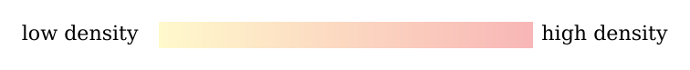
The small globe in the first column of each row shows the band that the row describes, filled in colour on a sphere seen slightly from above the equator.
| Band | Region | Latitude band | Area, km² | Craters km | Density per km² | Ratio to the equator | Craters km | Density per km² | Ratio to the equator |
|---|---|---|---|---|---|---|---|---|---|
| South — the band adjoining the pole | 75–90°S | 0.646 | 139 | 215 | 1.29 | 53 | 82 | 1.54 | |
| South — the outer part of the polar cap | 60–75°S | 1.895 | 397 | 210 | 1.26 | 132 | 70 | 1.31 | |
| South — the band next to the polar cap | 45–60°S | 3.014 | 693 | 230 | 1.38 | 230 | 76 | 1.44 | |
| South — middle latitudes | 30–45°S | 3.928 | 806 | 205 | 1.23 | 272 | 69 | 1.30 | |
| South — low latitudes | 15–30°S | 4.574 | 817 | 179 | 1.07 | 287 | 63 | 1.18 | |
| Equator — the southern half of the equatorial band | 0–15°S | 4.909 | 873 | 178 | 1.07 | 283 | 58 | 1.08 | |
| Equator — the northern half of the equatorial band | 0–15°N | 4.909 | 761 | 155 | 0.93 | 239 | 49 | 0.92 | |
| North — low latitudes | 15–30°N | 4.574 | 693 | 151 | 0.91 | 233 | 51 | 0.96 | |
| North — middle latitudes | 30–45°N | 3.928 | 692 | 176 | 1.06 | 207 | 53 | 0.99 | |
| North — the band next to the polar cap | 45–60°N | 3.014 | 525 | 174 | 1.05 | 171 | 57 | 1.07 | |
| North — the outer part of the polar cap | 60–75°N | 1.895 | 383 | 202 | 1.21 | 157 | 83 | 1.56 | |
| North — the band adjoining the pole | 75–90°N | 0.646 | 194 | 300 | 1.80 | 65 | 101 | 1.89 |
Each row describes a band that encircles the Moon through all longitudes. The first two rows make up the southern cap, the last two the northern. Southern latitudes may appear on maps as negative numbers.
The number of craters is the actual count in each band. The density is that number divided by the band’s area in millions of km². For example, in the band 75–90°N, 194 craters of at least 20 km were counted on an area of about 0.646 million km²; their density is therefore about 300 per million km². Areas are shown rounded.
The data and their order are kept from the table supplied. Scale for km: 151–300; for km: 49–101 craters per million km². The same colour in the two columns marks the same relative position on the scale, not necessarily the same density.
The reference point: 1 = the density of the full equatorial band, 15°S–15°N. In the km group the reference density is 166.436 per million km²; in the km group it is 53.170. The reference joins the two equatorial rows of the table: 873 and 761 craters of km on two areas of 4.909 million km² each. A ratio of 1.40 means a density 40% higher than the equator’s. Every ratio is computed from the unrounded counts and areas. The two halves of the equatorial band are not necessarily 1 separately: the southern half stands at 1.07 and the northern half at 0.93, and only the two together give 1.
What the table shows. Read the colours down the density column. The two ends of the table are the reddest: the band adjoining the north pole reaches about 300 per million km², 1.80 times the equator, and the band adjoining the south pole 215, 1.29 times. The palest rows lie just north of the equator, at 0–15°N and 15–30°N, with 155 and 151. In the km group the same two ends stand out more strongly, at 1.89 in the north and 1.54 in the south. The rise from the equator to the pole is not smooth: the southern hemisphere carries higher densities than the northern at middle latitudes (230 at 45–60°S against 174 at 45–60°N), and the profile rises and falls between the ends. The result taken forward is the narrower one: the bands next to the two poles carry densities that the bands in between do not reach. Part of the low value at the equator comes from the maria, which carry few craters; A.3 removes them and shows what remains.
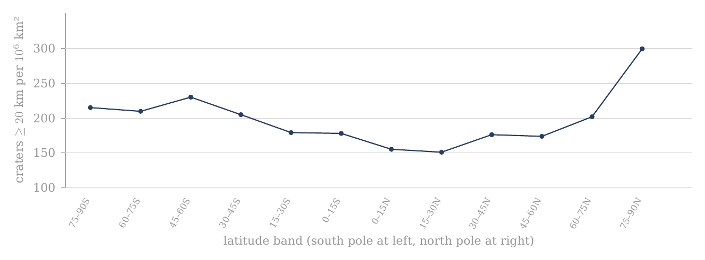
Figure 1. Crater density by latitude, craters of 20 km and more, in twelve bands of 15° (A.1); the whole catalogue, no mask. The two poles stand highest.
The figure draws the density column of the km group as one line, with the south pole at the left and the north pole at the right; each point is one band. The line is low in the middle, at the equator, and turns up at both ends; the right-hand end, the band adjoining the north pole, is the highest point of the profile.
A.2Crater density by longitude, no mask
A.1 found the poles more crowded than the equator. Before that result is read as a property of latitude, one must know whether the Moon is also uneven in the other direction, around its circumference. If one side of the Moon were much richer in craters than another, a difference between sides could mix into a difference between poles and equator. This section measures the distribution around the circumference on its own.
After the crater density by latitude in A.1, the distribution by longitude was examined. The division lets one distinguish differences from north to south from differences between regions around the Moon’s circumference.
The count is based on the Robbins catalogue (2019), by the present diameter in the field DIAM_CIRC_IMG and the position of the crater’s centre. DIAM_CIRC_IMG is the diameter of the circle fitted to the crater’s rim on the images. Craters of 20 km and more and of 40 km and more were included separately. No maria or basins were excluded.
The Moon’s surface was divided into twelve longitude bands 30° wide. Each band runs from pole to pole and includes all latitudes, like one segment of a peeled orange. All the bands are equal in area: unlike the latitude bands, every segment has the same shape, so no correction for size is needed between them, and the counts themselves can be compared directly. The band 345°–15°E crosses the longitude 0° and contains the sub-Earth point, the point on the near side directly below the Earth; the Moon keeps this face toward the Earth. The area of each band is with km — about 3.161 million km², one twelfth of the whole surface. The density was computed as the number of craters divided by the band’s area in millions of km².
The reference point: 1 = the density of the full equatorial band, 15°S–15°N, no mask. The reference density is 166.436 per million km² in the km group and 53.170 in the km group. A ratio of 1.40 marks a density 40% higher than this reference. The same reference is kept through A.1–A.4, so that every ratio in the four tables is measured against one fixed base.
Only the density and ratio columns are coloured, soft yellow for the low values and soft red for the high. Each diameter group has its own colour scale within the table. The colours carry no statistical significance; to compare between tables, read the numbers.

| Band | Region | Longitude band °E | Area, km² | Craters km | Density per km² | Ratio to the equator | Craters km | Density per km² | Ratio to the equator |
|---|---|---|---|---|---|---|---|---|---|
| About the longitude of the sub-Earth point | 345–15 | 3.161 | 479 | 152 | 0.91 | 168 | 53 | 1.00 | |
| Near side — east of the sub-Earth point | 15–45 | 3.161 | 505 | 160 | 0.96 | 135 | 43 | 0.80 | |
| Near side — toward the trailing longitude | 45–75 | 3.161 | 611 | 193 | 1.16 | 170 | 54 | 1.01 | |
| About the trailing longitude | 75–105 | 3.161 | 750 | 237 | 1.43 | 269 | 85 | 1.60 | |
| Far side — beyond the trailing longitude | 105–135 | 3.161 | 793 | 251 | 1.51 | 285 | 90 | 1.70 | |
| Far side — toward the anti-Earth point | 135–165 | 3.161 | 667 | 211 | 1.27 | 245 | 78 | 1.46 | |
| About the longitude of the anti-Earth point | 165–195 | 3.161 | 711 | 225 | 1.35 | 233 | 74 | 1.39 | |
| Far side — beyond the anti-Earth point | 195–225 | 3.161 | 736 | 233 | 1.40 | 239 | 76 | 1.42 | |
| Far side — toward the leading longitude | 225–255 | 3.161 | 643 | 203 | 1.22 | 205 | 65 | 1.22 | |
| About the leading longitude | 255–285 | 3.161 | 487 | 154 | 0.93 | 170 | 54 | 1.01 | |
| Near side — beyond the leading longitude | 285–315 | 3.161 | 324 | 102 | 0.62 | 111 | 35 | 0.66 | |
| Near side — west of the sub-Earth point | 315–345 | 3.161 | 267 | 84 | 0.51 | 99 | 31 | 0.59 |
How to read the table: in the band 75°–105°E, 750 craters of km were counted. Dividing them by the band’s area gives about 237 per million km². The ratio to the equator is about 1.43, that is, a density about 43% higher than the equator’s without mask. This is a pole-to-pole band, not a cap about the trailing point. In the glyph the Moon is seen from above the north pole: the arc at the right is the Earth, so the sub-Earth point faces right, and the arrow is the direction of orbital motion; the trailing longitude (90°E) is at the top and the leading longitude (90°W) at the bottom. The coloured sector in each glyph is the band of that row.
The greatest density is in the band 105°–135°E and the least in the band 315°–345°E. The ratio of peak to minimum is in the km group and in the km group. Because all the bands have the same area, the ratio of densities equals the ratio of counts. The ratios were computed from the counts, not from the rounded densities.
What the table shows. The Moon is far from even around its circumference. The far side and the bands about the trailing longitude are red, from 1.22 to 1.51 times the equator in the km group; the near side west of the sub-Earth point is pale, down to 0.51 in the band 315–345°E. That band holds Mare Imbrium — in the model the main opening through which the Earth’s material and heat entered the Moon; it did not eject — and much of the western maria and basalt plains; its floors are young and carry few craters. The difference between the richest and the poorest band, a factor of almost three, is larger than the difference between the poles and the equator in A.1. It is therefore a pattern of its own and must be kept apart from the polar question.
The distribution by longitude is shown beside the distribution by latitude. Leading and trailing are used here in the standard orbital sense: the leading point, the apex of the Moon’s orbital motion, is (0°, 90°W), and the trailing point is (0°, 90°E). The leading point is the point on the equator that faces forward along the orbit, as the front of a car faces the road; the trailing point is the one that faces backward. The excess of craters lies on the trailing side; the model reads it through the maria, which are more extensive on the same side (A.9).
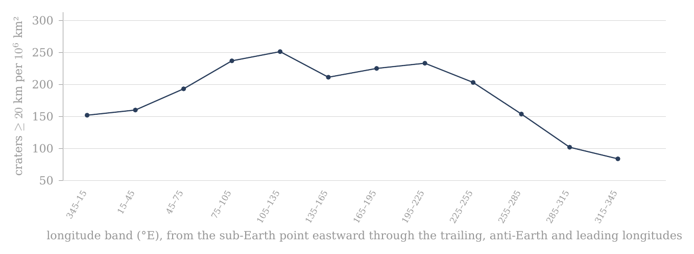
Figure 2. Crater density by longitude, craters of 20 km and more, in twelve bands of 30° (A.2); the whole catalogue, no mask. The peak lies just east of the trailing longitude and the minimum just west of the sub-Earth point.
The figure draws the density of the km group around the Moon, starting at the sub-Earth point and moving east. The line climbs across the trailing longitude to its peak just beyond it, stays high across the far side, and falls steeply over the leading longitude to its lowest values on the western near side.
The counts and densities are copied from the data supplied. The area and the ratios were computed from the spherical geometry and the counts. There is no recount of the catalogue here. The thresholds of 20 and 40 km refer to the present diameter, which in the model is also the original diameter (C.7, D.2).
A.3Crater density by latitude after the exclusion of basins and maria
A.1 and A.2 counted the whole surface. Two kinds of region on that surface carry a crater record shaped by something other than latitude, and this section removes them to see what the latitude profile looks like without them.
The first is the dark floors of the LROC mare mask: the maria and the basalt plains. A mare floor is younger than the surface around it: in the model a mare is an opening over a feed dome (Paper 5), and the craters that stood there before it opened were melted. A basalt plain (Procellarum, Tranquillitatis, Fecunditatis, Insularum, Frigoris) is not a mare: it is crust melted by the Earth’s general heat, with no feed dome beneath it. In both cases the floor is poor in craters because its record was reset, not because fewer craters landed there. The maria and the plains lie mostly on the near side and at low latitudes, so they lower the density of the equatorial bands in particular. The second is the large basins, those of 500 km and more. A single basin of this size is one structure that can cover a large part of a band near the pole, and its floor and rim carry a history of their own; within a band it can raise or lower the count by itself. Removing both leaves the part of the surface whose crater record is most uniform in its history, and the density on that part is the better measure of how the craters were spread.
The columns of density, ratio to the reference and change of density are coloured: soft yellow for the low values and soft red for the high. The km group and the km group have separate scales by the range of their values. The colours are a reading aid only and carry no statistical significance.
What differs from A.1: A.1 shows the whole area of each latitude band, no mask. A.3 uses the same twelve bands, but after the exclusion of the 20 basins of diameter km and the mare polygons. The mask is the set of regions removed from the count; it is described in the box below the table. A crater whose centre lies within the mask is not counted, and the area covered by the mask is subtracted from the band’s area. The density here is therefore the number of craters that remain divided by the area that actually remains. Both parts of the fraction are reduced together, so that the density is measured on the same ground in the numerator and the denominator.
Each row still describes a band that encircles the Moon through all longitudes. The first two rows make up the southern cap 60–90°S, the last two the northern cap 60–90°N. The band 75–90° is only the part adjoining the pole, not the whole cap.
The number of craters is the actual count outside the mask in each band. The density is that number divided by the band’s area remaining after the exclusion of basins and maria, in millions of km². For example, in the band 75–90°S there remained 84 craters of km on an area of about 0.275 million km²; the density given is therefore about 305 per million km². Before the mask the same band had 139 craters and a density of about 215 per million km². The fall in the number of craters beside the rise in density comes from the mask having removed relatively more area than craters.
The reference point remains that of A.1: 1 = the density of the full equatorial band 15°S–15°N without mask. In the km group the reference density is 166.435637277 per million km²; in the km group it is 53.169769069. A ratio of 1.40 therefore means a density 40% higher than that fixed base. The denominator is not to be replaced by the equator after the mask. The fixed base keeps the ratio column of A.3 directly comparable with that of A.1, so that the reader sees how each band moved.
This fixed base, however, overstates the polar excess after the mask, and the reason must be stated plainly. The ratio column divides a masked band by an unmasked equator: the numerator has lost its maria, the denominator has kept them. The mask removes the crater-poor maria from the equatorial band as well, and against the equatorial band after the same mask (1,216 craters on 5.856 million km², 207.7 per million km²) the two polar caps (882 craters on 3.706 million km², 238.0) stand at 1.15, not 1.40–1.48. A fair comparison applies the same mask on both sides. The like-for-like count used for the test of the paper is the clean count of A.11 and D.1, in which the maria and South Pole–Aitken are removed on both sides, the caps and the equatorial band alike; it gives 1.20 0.05.
The column of change in density answers a different question from the ratio column. It compares each band with itself before and after the mask: . Here is the band’s density in A.1 and its density on the area that remains. A positive value means the density on the remaining area is higher than that band’s density before the mask, so that the part removed was poorer in craters than the rest of the band; a negative value means it is lower, so that the part removed was richer. This is not a ratio to the equator.
| Band | Region | Band | Area remaining, km² | Density | Ratio | Change | Density | Ratio | Change | ||
|---|---|---|---|---|---|---|---|---|---|---|---|
| South — the band adjoining the pole | 75–90°S | 0.275 | 84 | 305 | 1.83 | +42.0% | 34 | 124 | 2.32 | +50.7% | |
| South — the outer part of the polar cap | 60–75°S | 1.033 | 238 | 230 | 1.38 | +10.0% | 71 | 69 | 1.29 | -1.3% | |
| South — the band next to the polar cap | 45–60°S | 1.544 | 380 | 246 | 1.48 | +7.1% | 109 | 71 | 1.33 | -7.5% | |
| South — middle latitudes | 30–45°S | 2.067 | 476 | 230 | 1.38 | +12.2% | 150 | 73 | 1.37 | +4.8% | |
| South — low latitudes | 15–30°S | 2.194 | 455 | 207 | 1.25 | +16.1% | 156 | 71 | 1.34 | +13.3% | |
| Equator — the southern half | 0–15°S | 2.976 | 634 | 213 | 1.28 | +19.8% | 215 | 72 | 1.36 | +25.3% | |
| Equator — the northern half | 0–15°N | 2.880 | 582 | 202 | 1.21 | +30.3% | 186 | 65 | 1.21 | +32.6% | |
| North — low latitudes | 15–30°N | 2.153 | 484 | 225 | 1.35 | +48.4% | 171 | 79 | 1.49 | +55.9% | |
| North — middle latitudes | 30–45°N | 2.411 | 580 | 241 | 1.45 | +36.6% | 171 | 71 | 1.33 | +34.6% | |
| North — the band next to the polar cap | 45–60°N | 1.639 | 375 | 229 | 1.37 | +31.4% | 123 | 75 | 1.41 | +32.3% | |
| North — the outer part of the polar cap | 60–75°N | 1.752 | 366 | 209 | 1.25 | +3.3% | 148 | 84 | 1.59 | +1.9% | |
| North — the band adjoining the pole | 75–90°N | 0.646 | 194 | 300 | 1.80 | +0.0% | 65 | 101 | 1.89 | +0.0% |
How to read the table: for each band read first the area remaining after the mask, then the three values of km — number, density and ratio — and the change of density relative to the same band before the mask. After them come the same four values for km. So one can compare both between places on the Moon and between the two diameter groups, without changing the reference base.
Two rows show the two extremes of the change column. The band 75–90°N is untouched by the mask: its area stays 0.646 million km², its 194 craters all remain, and its change is +0.0%. The band 15–30°N loses more than half of its area, from 4.574 to 2.153 million km², because it holds a large share of the near-side maria; its density on what remains rises by 48.4%, the largest rise in the table (at km the same band rises by 55.9%, again the largest).
What the table shows. The mask raises the low and middle latitudes, most of all in the north, where the near-side maria lie; the band adjoining the north pole, which has no mask in it, stays where it was. Yet the two bands adjoining the poles remain the reddest in the km group: 305 per million km² in the south and 300 in the north, against 202 to 246 in the ten bands between. In the km group the south polar band stands highest of all, at 2.32. The polar excess is therefore not produced by the maria lowering the equator: it remains on the ground that the mask leaves, though smaller than the fixed base suggests, as the like-for-like comparison above shows.
The mask is the union of the 20 basins with a main or outer rim diameter of 500 km or more in Table 1 of Neumann et al. (2015) and of the mare polygons of LROC_GLOBAL_MARE_180. Each basin is represented as a spherical cap centred on its published coordinates, with angular radius ; a crater is removed when its centre lies within at least one basin or mare polygon, and overlaps are removed once only. The remaining area is computed on a global midpoint grid of 0.05°0.05° with exact spherical cell areas; membership of a basin is computed directly from the great-circle distance and not from a polygon of the basin rim. The same mask and the same area computation are used in A.3, A.4 and A.7.
The box states the mask in full so that the count can be repeated. Each basin is drawn as a circle on the sphere whose angular radius, the angle at the Moon’s centre from the basin’s centre to its edge, is half its diameter divided by the Moon’s radius. The area that remains is found by covering the Moon with small cells of 0.05° by 0.05°, keeping those whose centre lies outside the mask, and adding their exact areas; a cell inside two basins, or inside a basin and a mare, is removed once.
All values after the mask come from one run of the mask described above. The areas shown are rounded; densities, ratios and changes are computed from the unrounded values. No statistical significance is to be inferred from the colours. The bands 75–90° are to be kept distinct from the caps 60–90°.
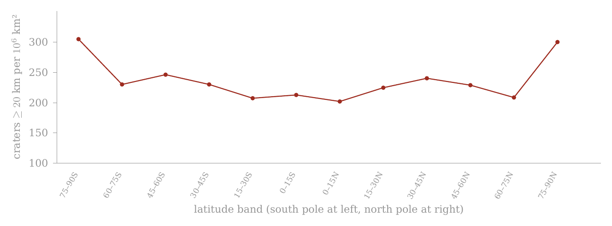
Figure 3. The same twelve bands with the twenty basins of 500 km and more and the maria removed, and their area subtracted (A.3). The mask lifts the equator and leaves the poles.
The red line is the masked profile, drawn on the same scale as Figure 1. Compared with Figure 1, the middle of the line has risen while the two ends have stayed high: the south-polar end has risen to about the height of the north-polar end, and the two poles remain the highest points.
A.4Crater density by longitude after the exclusion of basins and maria
This section applies the same mask to the longitude bands of A.2. Its purpose is to see how much of the large east–west difference found there belongs to the maria and basins themselves.
The columns of density, ratio to the reference and change of density are coloured: soft yellow for the low values and soft red for the high. The km group and the km group have separate scales by the range of their values. The colours are a reading aid only and carry no statistical significance.

What differs from A.2: A.2 shows the same twelve longitude bands without mask. Here the 20 Neumann basins of diameter km and the LROC mare polygons were excluded. A crater whose centre lies within the mask is not counted, and the area covered by the mask is subtracted from the band’s area.
Each row describes a band 30° wide running from pole to pole. 345–15°E crosses 0° and contains the sub-Earth point; 75–105°E surrounds the trailing longitude; 165–195°E the anti-Earth point; and 255–285°E the leading longitude.
The number of craters is the actual count outside the mask. The density is the number of craters that remain divided by the area remaining after the mask, in millions of km². Unlike A.2, after the mask the bands are no longer equal in area: a band that held much mare or basin keeps less area than one that held little, and the remaining areas run from 1.073 to 2.729 million km². Density, not count, is again the measure to compare.
The reference point remains that of A.1–A.3: 1 = the density of the full equatorial band 15°S–15°N without mask. : 166.435637277 per million km²; : 53.169769069. A ratio of 1.40 means a density 40% higher than that fixed base.
The column of change in density compares each band with itself before and after the mask: . A positive value is a rise in density on the remaining area; a negative value is a fall. This is not the ratio to the equator.
The same mask as A.3: the 20 Neumann basins of 500 km and more as spherical caps, united with the LROC_GLOBAL_MARE_180 polygons; area on a 0.05°0.05° grid with exact cell areas; overlaps subtracted once; craters assigned by centre. Summed over the twelve bands, A.3 and A.4 give the same remaining area (21.570 million km²) and the same counts (4,848 and 1,599).
The box confirms that the two cuts of the masked surface are consistent: the latitude bands and the longitude bands divide the same remaining ground, a little more than half of the Moon, in two different ways, and both add up to the same area and the same number of craters.
| Band | Region | Longitude band °E | Area remaining, km² | Density | Ratio | Change | Density | Ratio | Change | ||
|---|---|---|---|---|---|---|---|---|---|---|---|
| About the longitude of the sub-Earth point | 345–15 | 1.879 | 420 | 224 | 1.34 | +47.5% | 149 | 79 | 1.49 | +49.2% | |
| Near side — east of the sub-Earth point | 15–45 | 1.510 | 351 | 232 | 1.40 | +45.5% | 92 | 61 | 1.15 | +42.6% | |
| Near side — toward the trailing longitude | 45–75 | 1.837 | 438 | 238 | 1.43 | +23.3% | 121 | 66 | 1.24 | +22.5% | |
| About the trailing longitude | 75–105 | 1.692 | 370 | 219 | 1.31 | -7.8% | 131 | 77 | 1.46 | -9.0% | |
| Far side — beyond the trailing longitude | 105–135 | 2.729 | 725 | 266 | 1.60 | +5.9% | 251 | 92 | 1.73 | +2.0% | |
| Far side — toward the anti-Earth point | 135–165 | 1.995 | 457 | 229 | 1.38 | +8.6% | 166 | 83 | 1.57 | +7.4% | |
| About the longitude of the anti-Earth point | 165–195 | 1.345 | 356 | 265 | 1.59 | +17.7% | 96 | 71 | 1.34 | -3.1% | |
| Far side — beyond the anti-Earth point | 195–225 | 1.904 | 480 | 252 | 1.51 | +8.3% | 165 | 87 | 1.63 | +14.6% | |
| Far side — toward the leading longitude | 225–255 | 1.813 | 369 | 204 | 1.22 | +0.1% | 121 | 67 | 1.26 | +2.9% | |
| About the leading longitude | 255–285 | 2.044 | 417 | 204 | 1.23 | +32.4% | 152 | 74 | 1.40 | +38.3% | |
| Near side — beyond the leading longitude | 285–315 | 1.748 | 276 | 158 | 0.95 | +54.0% | 90 | 51 | 0.97 | +46.6% | |
| Near side — west of the sub-Earth point | 315–345 | 1.073 | 189 | 176 | 1.06 | +108.5% | 65 | 61 | 1.14 | +93.4% |
How to read the table: in each band the area remaining is shown, then , density, ratio and change of density for km; after them the same four values for km. So the same reading logic of A.1–A.3 is kept.
The change column shows where the mask acts. The largest rise is in the band 315–345°E, the band that holds Mare Imbrium and much of the western maria and basalt plains: on the 1.073 million km² that remain, the density rises by 108.5%, more than doubling, from 84 to 176 per million km². The band about the trailing longitude, 75–105°E, is the one band in the km group whose density falls, by 7.8%: there the part removed was richer in craters than the part that remains.
The peak and the minimum after the mask: for the maximum is 105–135 and the minimum 285–315, a factor of 1.68. For the maximum is 105–135 and the minimum 285–315, a factor of 1.79. These are the results of the calculation and not an assumption put in beforehand.
What the table shows. The mask narrows the east–west difference: the factor between the richest and the poorest band falls from 2.97 to 1.68 at km, and from 2.88 to 1.79 at km. A large part of the longitude pattern therefore belongs to the masked areas themselves, the young mare floors in particular. The mask does not remove the pattern altogether: the far side beyond the trailing longitude remains the richest band in both groups, and the near side beyond the leading longitude the poorest. What remains of the east–west difference is taken up with the six axes (A.9); for the polar question it is enough that it has been measured and kept apart.
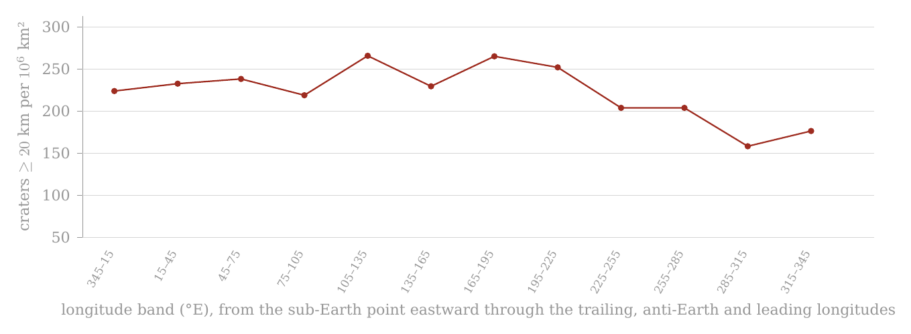
Figure 4. The same twelve longitude bands with the twenty basins of 500 km and more and the maria removed, and their area subtracted (A.4). The western minimum rises; the far-side peak remains.
Compared with Figure 2, on the same scale, the deep trough on the western near side has been largely filled, and the whole line now lies within a narrower range; the peak beyond the trailing longitude is still the highest point.
The colours are not a test of significance. The audit file keeps the computed numerical values.
A.5 Synthesis and conclusions from the four band tests
This section gathers what the four band tests found, before the measurement changes its form. The question it answers is simple: is the high crater density near the poles a real property of the polar regions, or an appearance produced by the way the Moon was cut up for counting, or by a few large features on its surface?
A short reminder of the terms. A band is the strip of surface between two lines of latitude (for example 75–90°N) or between two lines of longitude (for example 105–135°E). A latitude band runs right round the Moon; a longitude band runs from pole to pole, like a segment of an orange. In each band we count the craters whose centres lie inside it and divide by the band’s area. The result, the crater density, is given throughout in craters per million km²; it lets bands of very different size be compared fairly, since a large band holds more craters simply because it is larger.
The four preceding sections examined the same crater population through a simple set of four complementary tests: the distribution by latitude without mask (A.1), the distribution by longitude without mask (A.2), the distribution by latitude after the exclusion of the basins and maria (A.3), and the distribution by longitude after the same exclusion (A.4). Their combination matters more than any one of the tables alone. Changing the direction of the cut — from latitude to longitude — tests whether the non-uniformity is tied mainly to position relative to the poles or to position around the Moon’s circumference. Applying the same mask to both cuts supplies a further control: it lets one examine how far the observed profiles depend on the large basins and the mare surfaces, and how far they remain in the area outside those regions.
A.5.1 — Two separate spatial patterns. The first result is that no single profile explains the distribution of craters over the Moon. Latitude and longitude reveal two different patterns.
Without mask, the latitude profile shows high densities in the bands adjoining the two poles. In the km group, for example, the band 75–90°N reaches about 300 craters per million km², while the minimum in the band 15–30°N is about 151 per million km² — almost a factor of two. The km group shows a similar difference: about 101 per million km² in the northern band adjoining the pole against about 51 per million km² at 15–30°N. The profile between the bands, however, is not monotonic — it does not climb steadily, band after band, from the equator to the pole: there are local rises and falls, and so the result is not correctly described as a smooth gradient from the equator to the pole. The narrower result is that the polar end of the latitude profile reaches densities that are not attained in the intermediate bands. Put simply: walk from the equator toward a pole and the count goes up and down on the way, but the last band before the pole holds about twice as many craters per unit area as the poorest band on the way.
The longitude profile is different. Before the mask, in the km group, the density runs from about 84 per million km² in the band 315–345°E to about 251 per million km² in the band 105–135°E . The ratio of peak to minimum — the density of the richest band divided by that of the poorest, a simple measure of how uneven a profile is — is about 2.97. In the km group the range is about 31 to 90 per million km², with a peak-to-minimum ratio of about 2.88. The longitudinal non-uniformity in the raw count is therefore even greater than that seen in the latitude profile: going round the Moon at the equator changes the density more than going from the equator to a pole.
A specialist reader may object here that a polar excess of about two is small beside a longitudinal range of about three, and that the polar result may be a by-product of the larger pattern. The answer is that the two profiles are measured along perpendicular directions: a latitude band contains every longitude, so a rich and a poor longitude both enter every latitude band in the same proportion. The very existence of two different profiles requires them to be separated. That a region is rich or poor in craters along the longitude axis is not in itself an explanation of the high density at the polar latitudes. The longitudinal asymmetry is a separate subject, taken up with the six axes (A.9). The question here is narrower: what remains of the polar pattern when it is tested separately and by the same method.
A.5.2 — The mask as a control test. A.3 and A.4 are not a further count of another population. They repeat the two band tests after the application of the same mask: the 20 basins of diameter km and the LROC mare polygons. Craters whose centres lie within the mask were removed from the count, and the masked area was subtracted from the denominator used to compute the density.
Why these two kinds of terrain? The maria and the basalt plains are young floors: on a mare — an opening over a feed dome — the craters that stood there were melted, and a basalt plain is crust melted by the Earth’s general heat; they are poor in craters for a reason that has nothing to do with latitude, and they lie mostly near the equator. The large basins erased the craters within them when they formed. Both are surfaces on which the old crater record was reset later. To compare the poles with the equator fairly, the same kinds of ground must be removed from both sides of the comparison — otherwise one side is measured on old ground and the other on partly renewed ground, and the comparison measures the renewal, not the latitude. This is the rule the paper keeps throughout: every comparison is like-for-like, and the exclusions are stated explicitly. Here the same mask is applied to every band.
This point is essential to the interpretation. A fall in the number of craters after the mask does not require a fall in density. If the mask removes a larger share of the area than of the craters, the density on the remaining area can actually rise. The relevant comparison is therefore not only against , but the density computed relative to the available area in each of the two states. An everyday picture: to count trees per hectare in a wood with a pond in it, one counts on dry land and divides by the dry area. Taking the pond out of the area raises the figure, though not a single tree has been added — the pond held none, and it only diluted the average.
The same analytical operation was applied both to the latitude profile and to the longitude profile. The difference in how the two profiles respond to the mask is therefore itself information: if both asymmetries were mainly the result of the same basins and the same mare surfaces, one would expect their exclusion to change both profiles similarly. That is not what is obtained.
A.5.3 — Longitude: a large part of the amplitude changes after the mask. The effect of the mask is especially marked in the longitude profile. Before the exclusion, the minimum of the km group lies in the band 315–345°E , where the density is about 84 per million km². After the exclusion, the density computed on the remaining area of the same band rises to about 176 per million km². The whole longitudinal range consequently narrows considerably: the peak-to-minimum ratio falls from about 2.97 before the mask to about 1.68 after it.
The same narrowing reaches the two bands about the trailing and the leading longitudes. Before the mask the trailing band, 75–105°E, carries 750 craters of km against 487 in the leading band, 255–285°E: 237 against 154 per million km², a ratio of 1.54, about seven counting standard deviations. (A count of craters fluctuates by chance roughly as the square root of the count: a band with a few hundred craters is uncertain by a few per cent. A counting standard deviation is that natural fluctuation; a difference of seven of them cannot be chance, a difference of one can.) After the mask the leading band keeps more craters, 417 against 370, but also more area, 2.044 against 1.692 million km², because the mask removes more mare area on the trailing side; the densities become 219 and 204, a ratio of 1.07. The counting uncertainty of that ratio is about 7%, so the remaining difference is about one standard deviation and is not significant at the level of the bands; at km it is 77 against 74. The bands therefore place most of the raw east–west asymmetry on the masked areas themselves. They do not exhaust it: a band runs from pole to pole and dilutes the region about the point with the whole of its longitude. The caps of 30° about the two points (A.9) keep, after the mask, 252 against 174 per million km², a ratio of 1.45, about five standard deviations. The excess that survives the mask lies in the region about 90°E, not along the whole band. This is also a first lesson in geometry that the caps below will use: a long band can hide a local excess by averaging it with a great deal of ordinary ground, while a cap centred on the right point keeps it.
The same test in the km group gives a parallel result. The peak-to-minimum ratio, about 2.88 without mask, falls to about 1.79 after the exclusion. That both diameter groups respond in the same direction strengthens the descriptive conclusion that the large amplitude of the unmasked longitude profile is tied, to a significant degree, to the distribution of the areas included in the mask.
The mask does not make the longitude profile uniform. After the exclusion too a measurable range remains between the longitude bands. The result is therefore twofold: a considerable part of the raw amplitude changes when the basins and maria are removed, but the mask alone does not explain the whole of the longitudinal non-uniformity.
This is also the limit of the use of this profile in the present paper. A.2 and A.4 are needed to show that a further spatial asymmetry exists and so that it is not mistakenly attributed to the poles. The physical explanation of the longitudinal asymmetry is not required to examine the polar question, and it therefore remains outside the central argument of this paper.
A.5.4 — Latitude: the polar density remains after the exclusion. The latitude profile responds to the mask differently. The clearest example is the southern band adjoining the pole, 75–90°S . Before the mask, 139 craters of diameter km were counted in it, at a density of about 215 per million km². After the mask only 84 craters remain. But the remaining area shrinks to about 0.275 million km², and so the density computed on it rises to about 305 per million km². The reason is South Pole–Aitken, the largest basin of the mask, which covers much of this band: its floor is poor in craters (its central minimum is measured in A.10), so removing it takes away a large area and comparatively few craters — the pond of the picture above.
No new craters are created here and their number does not rise. The result comes from the denominator: the area removed from the band is, relatively, greater than the part of the crater population removed with it. This is precisely why the area had to be recomputed rather than the counts merely compared.
In the north the picture differs in detail but is similar in its final result. In the band 75–90°N the unmasked count gave 194 craters km and a density of about 300 per million km². The mask hardly changes this band within the data used here, and the density remains around 300 per million km².
After the exclusion, therefore, the two bands adjoining the poles reach almost the same density: about 305 per million km² in the south and about 300 in the north. This is very different from the first appearance of the unmasked count, in which the south looked significantly poorer than the north — about 215 against 300 per million km².
A.5.5 — What we learned from the difference between the two poles. The north–south comparison is one of the important results of the mask test. Before the exclusion the table could be read as if a real asymmetry existed between the poles: the north pole much denser than the south. After the exclusion of the basins and maria, that asymmetry almost disappears in the km group.
In the southern mask lies South Pole–Aitken, the largest basin included in the test, and it removes a large part of the area in the high southern bands. The result therefore shows that a considerable part of the raw north–south difference comes from the area excluded in the south and not from a basic difference between two polar populations.
The lesson is one of method as much as of result. The raw comparison set a northern band of almost untouched old ground against a southern band of which a large part is the floor of a basin. That is not a like-for-like comparison. Once the same kinds of ground are removed on both sides, the two polar bands are compared on the same kind of surface, and they agree.
The direct conclusion is that the north–south gap seen before the mask is not preserved after the full mask.
The result that matters for the question of this paper is another: once the raw difference between north and south is removed, one does not obtain one dense pole and one poor pole. One obtains two polar bands of similar and high density.
A.5.6 — What the four tests allow one to conclude — and what not yet. The four band tests now allow the problem to be narrowed.
First, the polar density is not a description of the north pole alone. After the mask a high and similar density appears in the two bands adjoining the poles.
Second, it does not disappear when the large basins and the mare surfaces included in the mask are removed from the count. In fact, in the southern case the density computed on the remaining area is higher than the unmasked density.
Third, it is not simply another name for the longitudinal asymmetry. Longitude shows a different profile, with a different amplitude and a different response to the mask. A large part of the longitudinal amplitude changes after the exclusion, while the high density at the polar ends remains.
Fourth, there is no need to claim that the density grows monotonically from the equator to the poles. The data do not require such a claim and do not support such a smooth profile. The narrower — and therefore stronger — finding is that the bands adjoining the poles lie at the upper end of the latitude distribution, and that this state is preserved after the mask test.
In this sense A.1–A.4 close the first question of Part A: can the polar appearance vanish when the direction of the cut is changed or when the large basins and maria are removed? Within the catalogue, thresholds and mask tested here, it does not vanish. Changing the direction of the cut reveals a further but different spatial phenomenon; applying the mask greatly changes parts of the profiles, but leaves the two polar bands at high density.
There is, however, also a clear limit to what can be learned from bands.
The band 75–90° encircles the whole Moon about the rotation axis. It compresses into one number all the longitudes within it. So even if the band is dense, it cannot say how the density is arranged within the polar region itself. The same mean density could, in principle, arise from an accumulation very close to the pole, from a ring at some distance from it, from a concentration on one side of the cap, or from a wide and relatively uniform spread. The geometry of bands does not distinguish between these possibilities. It is like knowing the average number of people per square metre in a round hall without knowing whether they stand at the centre, along the walls, or evenly through the room.
A.5.7 — The end of the band stage and the passage to the caps. At this point the work the bands can do is finished.
What we now have, in one line: a high crater density at both polar ends of the latitude profile, separate from the east–west pattern, and still there after the basins and maria are removed. In more detail, the bands showed where the anomaly lies relative to latitude; they separated it from the asymmetry by longitude; they examined how the two patterns change when the same basins and the same mare surfaces are removed; and they showed that after the exclusion two polar bands of high and similar density are obtained.
But the bands cannot answer the next question.
Until now we asked: are the polar latitudes denser, and does the result remain after spatial controls?
From here the question becomes more geometric:
How is that density arranged within the pole itself?
To answer it the form of the measurement must change. Instead of dividing the Moon into bands that encircle it, we look at each pole as the centre of a cap and examine the distribution relative to the distance from the pole.
The next section, A.6 — the polar caps, is therefore not another repetition of the same count. It is the next stage, following directly from the limit of the band test: the passage from the question whether a high polar density exists to the question what the spatial geometry of that density is within the polar cap.
A.6The polar caps, no mask
After the band tests have fixed the behaviour of the density at the high latitudes, we change here the geometry of the measurement. Instead of bands encircling the Moon, each pole serves as the centre of a series of six concentric caps of radii 10°, 15°, 20°, 30°, 45° and 60°. The purpose of the test is to see how the cumulative density changes as one passes from a wide cap to the region nearer the pole.
What a polar cap test is. A polar cap is the round patch of surface centred on a pole, like the white cap on the top of a globe. Its size is given by its angular radius: a cap of 30° holds everything within 30° of arc of the pole, that is, everything poleward of latitude 60°. The test counts the craters in such a cap and compares their density with that of a reference region far from both poles — the equatorial belt , the strip within 15° of the equator ( is the latitude). The main comparison of the paper (A.11, D.1) is of exactly this kind: the two caps of 30° about the poles against the equatorial belt . Here the same idea is applied to a whole family of caps, from 60° down to 10°, so that one can follow the density inward toward each pole.
A cap of angular radius comprises all the craters whose centres lie no farther than from the pole. Its area: , with km. The formula is the area of a spherical cap: is the mean radius of the Moon, and the factor grows slowly for small caps and fast for large ones, so the 10° cap has 0.288 million km² while the 60° cap has 9.483 million km² — more than thirty times as much. The caps are nested one within another, so the rows are a cumulative profile and not independent annular regions. Picture the rings of a dartboard: the 30° cap is not the ring between 20° and 30°, it is the whole board out to 30°, bull’s-eye included. If the craters are crowded near the pole, the small caps show a high density and the density falls as the caps widen and take in more ordinary ground; if they are spread evenly, every cap shows about the same density.
The reference point: 1 = the density of the full equatorial band 15°S–15°N, no mask. : 166.435637277 per million km²; : 53.169769069. The ratio is not computed relative to the wide cap or to the other pole.
How to read the ratios. The ratio column is the density of the cap divided by this fixed reference. A ratio of 1 means the cap is exactly as crowded as the equatorial band; 1.36 means 36% more craters per unit area; 1.80 means 80% more. Because every cap, north and south, is divided by the same number, the ratios can be compared directly down the column. The reference is the equatorial band on the same catalogue and without mask, and the caps of A.6 are without mask too, so A.6 compares raw ground with raw ground on both sides. Two further habits help. First, a ratio rests on counts, and a count of a few dozen craters is far less certain than a count of a few hundred: the inner caps hold the fewest craters, and their ratios carry the widest uncertainty (the 95% intervals are given in D.4). Second, the km columns are a second sample of larger, and so on average older, craters; where their ratio is higher than that of the km group in the same cap, the polar excess grows with crater size — a point taken up in A.8.5.
The density and ratio columns are coloured from soft yellow for the low values to soft red for the high. Each diameter group has its own scale; the colours carry no significance beyond that ordering — they are not a test, only a guide that lets the eye find at once where in the table the density is highest.

| Cap | Pole | Cap radius | Cap area, km² | Density | Ratio | Density | Ratio | ||
|---|---|---|---|---|---|---|---|---|---|
| North pole | 60° | 9.483 | 1794 | 189 | 1.14 | 600 | 63 | 1.19 | |
| North pole | 45° | 5.555 | 1102 | 198 | 1.19 | 393 | 71 | 1.33 | |
| North pole | 30° | 2.541 | 577 | 227 | 1.36 | 222 | 87 | 1.64 | |
| North pole | 20° | 1.144 | 309 | 270 | 1.62 | 119 | 104 | 1.96 | |
| North pole | 15° | 0.646 | 194 | 300 | 1.80 | 65 | 101 | 1.89 | |
| North pole | 10° | 0.288 | 86 | 298 | 1.79 | 31 | 108 | 2.02 | |
| South pole | 10° | 0.288 | 72 | 250 | 1.50 | 26 | 90 | 1.70 | |
| South pole | 15° | 0.646 | 139 | 215 | 1.29 | 53 | 82 | 1.54 | |
| South pole | 20° | 1.144 | 237 | 207 | 1.24 | 83 | 73 | 1.36 | |
| South pole | 30° | 2.541 | 536 | 211 | 1.27 | 185 | 73 | 1.37 | |
| South pole | 45° | 5.555 | 1229 | 221 | 1.33 | 415 | 75 | 1.41 | |
| South pole | 60° | 9.483 | 2035 | 215 | 1.29 | 687 | 72 | 1.36 |
How to read the table: the table is arranged symmetrically: in the north one reads from 60° to 10°, and in the south from 10° to 60°, so that the two inner caps of 10° meet at the centre of the table and the caps widen outward. A rise in density as the radius shrinks indicates a concentration inward; a similar profile along the radii indicates a wider spread. Since the caps are nested, no row is to be read as a separate ring.
The result without mask: in the north the density rises from about 189 in the 60° cap to about 300 in the 15° cap, and remains almost the same at 10° (about 298). In the south it remains around 207–221 over most of the range 15°–60°, and rises to about 250 in the 10° cap. The group lets one check whether the same geometry holds at the higher diameter threshold as well: in the north it rises from about 63 in the 60° cap to about 108 in the 10° cap, a ratio of 2.02 to the equatorial band at the innermost cap. In the ratio column the same picture reads simply: every cap at both poles stands above 1 — the lowest is 1.14, the northern 60° cap at km — so no polar cap of any size is as poor in craters as the equatorial band.
At first sight, then, the two poles look different: the north is crowded toward its centre, the south is flat. The next section asks how much of that difference belongs to the ground itself and how much to the basin that occupies the south.
A.6 uses the catalogue without mask. From it one cannot yet conclude what part of the north–south difference is tied to the basins and maria. The same test with the mask appears in A.7, and the synthesis is given only in A.8.
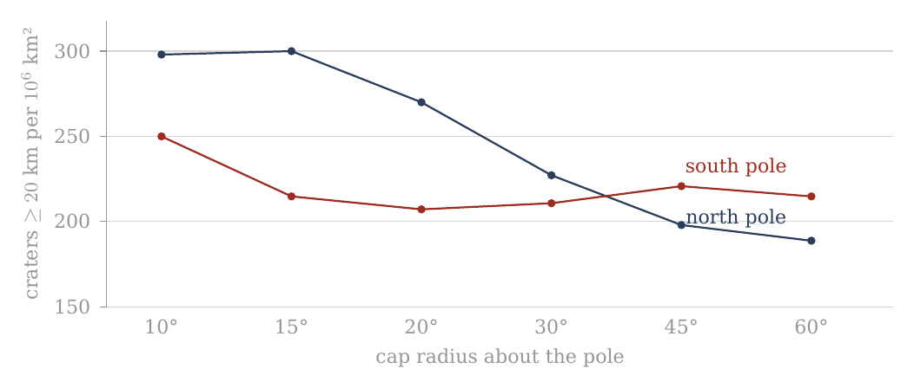
Figure 5. Density of craters of 20 km and more in caps of increasing radius about the two poles (A.6), whole catalogue. The north rises toward its pole; the south is flat — the floor of South Pole–Aitken, which the 30° southern cap largely is (A.3, D.4).
Figure 5 draws the km density columns of the table as two lines, with the cap radius growing to the right. Read it from left (the small caps at the pole) to right (the wide caps). The navy northern line starts high and falls as the caps widen: the craters are crowded toward the north pole. The red southern line stays almost level after its first point: within the southern caps, the raw density hardly depends on distance from the pole.
A.7 The polar caps after the exclusion of basins and maria
The question of this section is whether the difference between the poles seen in A.6 is a property of the crater population or of the ground it is counted on. A.7 repeats exactly the six caps of A.6 about each pole, but after the application of the same mask used in A.3 and A.4. Craters whose centres lie within the mask were removed from the count, and the area of the mask was subtracted from each cap. The two poles are thus compared on the same kind of ground — old surface outside the basins and maria — which is what the paper’s rule of like-for-like comparison requires.
The reference point remains the same: 1 = the density of the full equatorial band 15°S–15°N, no mask. : 166.435637277; : 53.169769069 per million km².
The change in density is computed for each cap against the same cap in A.6: . It is therefore different from the column of the ratio to the equator. In words: the change column says by how much the density of a given cap went up or down when the basins and maria were removed. For example, the southern 15° cap went from about 215 to about 305 per million km², a change of +42.0%; a value of +0.0% means the mask did not touch that cap at all.
In this table the caps are masked, but the reference — the equatorial band — is kept as it was in A.6, without mask. This is deliberate: a fixed yardstick lets one see what the mask did to each cap, and the change column measures exactly that. But it is not a like-for-like pole-to-equator comparison, because the equatorial band still contains its maria, which are poor in craters and lower its density. The ratio column of A.7 is therefore a fixed ruler for following the change, not the measured polar excess. The clean comparison removes the same ground on both sides — the maria and South Pole–Aitken from the caps and from the belt alike — and compares the caps of 30° with the equatorial belt (A.11, D.1). Its results, in order: 1.32 for the whole catalogue with the maria included; 1.11 0.04 with the maria removed on both sides; 1.20 0.05 with the maria and South Pole–Aitken removed on both sides. The figure after is one counting standard deviation; the 95% interval is about twice as wide: the true ratio lies, with 95% confidence, between 1.10 and 1.30 (an earlier version read the as the 95% interval, 1.15–1.25) — clearly above 1. It is on this clean count that the conclusion of the paper rests.
The same mask as A.3/A.4 — the 20 Neumann basins km as spherical caps + the LROC_GLOBAL_MARE_180 polygons; area on a 0.05°0.05° grid; overlaps once; crater assigned by centre. Where a cap and a set of bands cover the same region (the 30° caps and the bands 60–90°), A.3 and A.7 give the same area and the same counts. The synthesis and its meaning are kept for A.8.
In plain terms: each large basin of the list of Neumann is drawn as a round patch, the maria are taken from the outlines mapped by the Lunar Reconnaissance Orbiter Camera (LROC), and the surface is divided into small squares of 0.05° on a side to measure how much of each cap the mask covers; where a basin and a mare overlap, the shared area is removed only once. A crater counts as inside the mask when its centre is.
| Cap | Pole | Radius | Area remaining, km² | Density | Ratio | Change | Density | Ratio | Change | ||
|---|---|---|---|---|---|---|---|---|---|---|---|
| North pole | 60° | 6.448 | 1515 | 235 | 1.41 | +24.2% | 507 | 79 | 1.48 | +24.3% | |
| North pole | 45° | 4.037 | 935 | 232 | 1.39 | +16.7% | 336 | 83 | 1.57 | +17.6% | |
| North pole | 30° | 2.399 | 560 | 233 | 1.40 | +2.8% | 213 | 89 | 1.67 | +1.6% | |
| North pole | 20° | 1.144 | 309 | 270 | 1.62 | +0.0% | 119 | 104 | 1.96 | +0.0% | |
| North pole | 15° | 0.646 | 194 | 300 | 1.80 | +0.0% | 65 | 101 | 1.89 | +0.0% | |
| North pole | 10° | 0.288 | 86 | 298 | 1.79 | +0.0% | 31 | 108 | 2.02 | +0.0% | |
| South pole | 10° | 0.104 | 36 | 348 | 2.09 | +39.1% | 14 | 135 | 2.54 | +49.8% | |
| South pole | 15° | 0.275 | 84 | 305 | 1.83 | +42.0% | 34 | 124 | 2.32 | +50.7% | |
| South pole | 20° | 0.532 | 149 | 280 | 1.68 | +35.2% | 52 | 98 | 1.84 | +34.7% | |
| South pole | 30° | 1.308 | 322 | 246 | 1.48 | +16.7% | 105 | 80 | 1.51 | +10.3% | |
| South pole | 45° | 2.852 | 702 | 246 | 1.48 | +11.3% | 214 | 75 | 1.41 | +0.5% | |
| South pole | 60° | 4.918 | 1178 | 240 | 1.44 | +11.6% | 364 | 74 | 1.39 | +2.2% |
How to read: the table is arranged symmetrically: in the north from 60° to 10°, and in the south from 10° to 60°, so that the two inner caps of 10° stand opposite each other at the centre of the table. Since the caps are nested, this is a cumulative profile and not a series of separate rings. The comparison with A.6 shows what the mask did at each radius. Two things stand out. In the north, the three inner caps (10°, 15°, 20°) show a change of +0.0% at both thresholds and the same area as before: there is no basin or mare within 20° of the north pole, so nothing was removed. In the south the largest changes are in the smallest caps — +39.1% at 10° and +42.0% at 15° for km — and the remaining area of the 10° cap falls from 0.288 to 0.104 million km²: most of the innermost southern cap lies inside the mask.
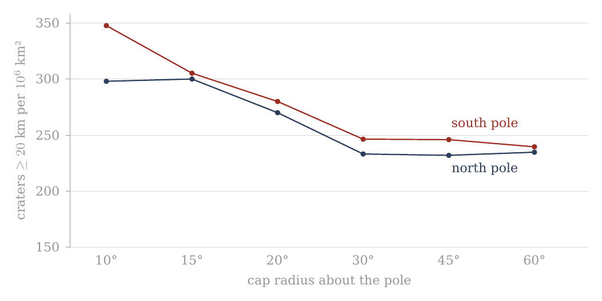
Figure 6. The same six caps about the two poles after the exclusion of the basins and maria (A.7), craters of 20 km and more. The northern line is unchanged within 20°; the southern line rises in its inner caps, and the two come close.
Set Figure 6 beside Figure 5. The left half of the navy line is the same in both; its right half, the wide caps, has risen. The red line has changed shape: it now falls from the pole outward, as the northern line does. Once both poles are counted on the same kind of ground, both show craters crowded toward the pole.
A.8 Synthesis and conclusions from the cap test
A.6 and A.7 examined the polar regions in a geometry different from that of the band tests. Instead of asking what the mean density is within a latitude band encircling the Moon, each pole was defined as the centre of a series of concentric caps of radii 10°, 15°, 20°, 30°, 45° and 60°. The same test was made first on the catalogue without mask and then after the exclusion of the same 20 large basins and mare polygons used in A.3 and A.4.
The combination of the two tests allows two questions to be separated. The first is what the observed geometry of the crater density is as one approaches each pole. The second is what part of that geometry remains when the large basins and maria are taken out of the measurement.
The central result is that the mask fundamentally changes the way the difference between the two poles is to be described. This section sets out that change step by step: what the poles looked like before the mask (A.8.1), what the mask did in the north (A.8.2) and in the south (A.8.3), how the two poles compare afterwards (A.8.4), whether the two diameter groups agree (A.8.5), how the caps join the bands (A.8.6), what can be concluded (A.8.7), and what cannot yet (A.8.8).
A.8.1 — Before the mask: the two poles look different. In the count without mask two clearly different profiles are obtained.
At the north pole there is a concentration inward. For craters of diameter km, the density rises from about 189 per million km² in the 60° cap, to about 198 at 45°, 227 at 30°, 270 at 20°, and about 300 in the inner caps of 15° and 10°. There is no need to describe the rise as monotonic up to the pole point, since the values at 10° and 15° are almost identical — 298 and 300 per million km². But the overall profile is clear: the inner region is significantly denser than the wide cap.
The km group also shows an inner concentration in the north. The density is about 63 per million km² in the 60° cap, rises to about 71 at 45°, 87 at 30°, and reaches about 100–108 per million km² in the caps of 10°–20°. The northern convergence is therefore not a property of the 20 km threshold alone.
In the south a different profile is obtained before the mask. In the km group the density remains around 207–221 per million km² between 15° and 60°, and only in the inner cap of 10° does it rise to about 250. In the km group too the southern profile is wider: about 72–82 per million km² between 15° and 60°, against about 90 in the 10° cap.
So, had the test stopped at A.6, the natural conclusion would have been that the two poles differ not only in the strength of their density but also in their inner geometry: the north shows a clear concentration toward the inner region, while the south looks flatter and wider.
A.7 shows that this description is not complete.
A.8.2 — The mask hardly touches the heart of the northern profile. One of the clearest results of A.7 is that in the three inner northern caps — 10°, 15° and 20° — the mask changes neither the count nor the area at the level of the calculation made.
At km there remain: 298 per million km² at 10°; 300 per million km² at 15°; 270 per million km² at 20°. At km too the same values remain: about 108, 101 and 104 per million km², respectively.
That is, the inner convergence seen in the north in A.6 is not created by the basins and maria removed in the mask. Within 20° of the north pole the mask we used does not change the profile at all: no basin of the mask and no mare reaches that close to the north pole, so there was nothing to remove. The northern core is old ground on which the count was clean from the start.
The effect of the mask begins in the wider caps. In the northern 30° cap, for example, the density rises from about 227 to about 233 per million km² — a change of about 2.8%. In the 45° cap it rises from about 198 to about 232, and at 60° from about 189 to about 235. For km the same general direction is obtained: the wide caps rise after the mask, while the inner caps remain unchanged.
The mask therefore changes the wide background around the northern polar region far more than it changes its inner core.
This is an important distinction. Before the mask, the difference between 60° and 15° in the north is large: about 189 against 300 per million km² for . After the mask, the wide 60° cap rises to about 235, while the 15° cap remains 300. Consequently the convergence inward still exists, but its amplitude is smaller.
In other words: the mask does not create the northern concentration, but it shows that part of the contrast between the polar centre and its wide surroundings comes from the areas removed outside the core.
A.8.3 — In the south the mask changes the picture more fundamentally. The response of the south pole is different.
Already in the 10° cap the mask removes a considerable part of the area and the population. The number of craters falls from 72 to 36, but the available area shrinks enough for the density to rise from about 250 to about 348 per million km² — a rise of about 39%.
The change is stronger still in the 15° cap. Before the mask, 139 craters were counted in it at a density of about 215 per million km². After the mask 84 craters remain on an area of about 0.275 million km², and the density rises to about 305 per million km² — a rise of about 42%.
In the km group the change in this cap is greater still: the density rises from about 82 to about 124 per million km², a change of about 51%.
In the 20° cap too a significant rise is obtained: rises from about 207 to about 280 per million km², and from about 73 to about 98. As the cap widens the effect of the mask weakens. At 30° the rise in is about 17%; at 45° and 60° it is about 11–12%.
So, unlike the north, where the inner core is hardly affected by the mask, in the south the mask acts already within the smallest caps. Within 20° of the south pole the only component of the mask is South Pole–Aitken (A.8.8), whose floor is poor in craters (A.10). Removing it takes away a large share of the area and a smaller share of the craters, and so the density of what remains goes up.
This is precisely why A.7 was needed. The relatively flat southern profile of A.6 can no longer be read as if it were necessarily the basic structure of the crater population. A significant part of its shape changes when the basins and maria are taken out of the measurement and the available area is corrected accordingly.
A.8.4 — After the mask the two poles become more alike — but not identical. When A.7 alone is compared, a picture different from A.6 is obtained.
At km, in the 15° cap, the north is at about 300 per million km² and the south at about 305. In the 20° cap the two poles are close: about 270 in the north and about 280 in the south. In the 10° cap the south lies higher — about 298 in the north against about 348 in the south — on only 36 southern craters.
This is a fundamental change from the count without mask, in which at 15° one obtained about 300 in the north and only about 215 in the south, and at 20° about 270 against about 207.
That is, a large part of the north–south asymmetry seen in the inner caps without mask does not remain after the control for basins and maria.
The result parallels what was found earlier in the band test, but here it is more detailed geometrically. A.3 showed that the bands 75–90°S and 75–90°N become almost equal after the mask. A.7 shows that the convergence is not confined to the mean of a whole band: at km a closeness between north and south is obtained also in the inner caps of 15° and 20°, while in the smallest cap, of 10°, the south lies above the north.
It does not follow, however, that the two poles have become identical in every measure.
In the km group, for example, in the 15° cap one obtains about 101 per million km² in the north and about 124 in the south; at 10° about 108 in the north and about 135 in the south; and at 20° about 104 in the north and about 98 in the south. The numbers are of the same order, but the details do not coincide.
In the wider caps too differences remain. Whether such differences mean anything is a question of counting uncertainty, and it is answered in D.4, where the south-to-north ratio of every cap is given with its 95% interval. At 15° and km it is 1.02 (0.78–1.32): the range in brackets is where the true ratio lies with 95% confidence, and since it contains 1, the two poles are equal within the count. The same holds at every cap and at both thresholds; the widest interval, 0.77–1.74 at 10°, belongs to the cap with only 36 southern craters. The right conclusion is therefore not “the mask makes the poles identical”, but:
The mask removes a large part of the raw contrast between the inner profiles of the north and the south and brings them into far more similar density ranges.
A.8.5 — The two diameter groups tell a similar, but not identical, story. The use of two diameter thresholds is an important test because it checks whether the picture depends unusually on one group of craters.
In the north, both and show before the mask a higher density in the inner caps than in the wide ones. After the mask the core of 10°–20° remains unchanged in both groups, while the density in the wide caps rises.
In the south, in both diameter groups the mask changes the inner caps significantly. In the 15° cap, for example, the rise is about 42% at and about 51% at (+42.0% and +50.7% in the table of §A.7; an earlier version of this sentence read about 33% and 41%). In the 20° cap the rise is about 35% at both thresholds (+35.2% and +34.7%; earlier read as about 30%).
The general direction is therefore not a unique result of the choice of the 20 km threshold.
A full numerical identity between the two diameter groups is not to be expected, however. The number of craters is smaller, so relative counting fluctuations are larger; in addition, the population of the large diameters is not necessarily a simple sample of the population. The use of the two thresholds here is therefore a consistency test of the shape of the result, not a requirement that the ratios be identical.
There is, however, one regular difference between the two groups, and it carries meaning. In most caps the ratio to the equatorial band is higher for km than for km: in the northern 30° cap, 1.64 against 1.36 before the mask; in the southern 15° cap after the mask, 2.32 against 1.83. The polar excess rises with crater size. The clean count shows the same thing in finer steps (D.2): with the maria and South Pole–Aitken removed on both sides, the ratio of the 30° caps to the belt is 1.09 for craters of 20–30 km and climbs to 1.53 for craters of 60–100 km. What this means in the model: a crater’s size is a rough clock — the large craters belong, on average, to the earlier part of the record — and craters formed earlier were formed on a flatter body, so they lived through more of the rounding that followed, and were crowded toward the poles more. A cause indifferent to when each crater formed would give about the same ratio for every size; a ratio that grows with size says that the crowding went on while the population was still accumulating — the earlier a crater, the more of it it received. The test of this order is in D.1–D.2.
A.8.6 — What the comparison between bands and caps teaches. The two levels of analysis of Part A can now be joined.
The bands answered the first question: do the polar latitudes show a high density, and does it remain after the exclusion of basins and maria? The answer was positive. After the mask the two bands adjoining the poles reach a high and similar density.
The caps asked a more precise question: how is that density arranged as one approaches the pole itself?
Before the mask an asymmetric answer was obtained: the north looked concentrated inward and the south flatter.
After the mask the picture changes. The northern core remains almost exactly as it was, while the south changes significantly. As a result the inner caps of the two poles become far more similar in density, especially in the km group.
There is here, then, a distinction between two kinds of information.
The high density at the polar latitudes is a result that remains after the mask.
By contrast, part of the geometric difference seen at first between north and south does not remain after the mask.
This is an important distinction, because it keeps us from turning a property of the presently preserved surface into a primary property of the phenomenon we are trying to explain.
A.8.7 — What can be concluded at this stage. After A.1–A.7 several limited and clear observational conclusions can be stated.
First, the crater population is not uniform in latitude. The polar bands lie at the high end of the density profile.
Second, the high polar density does not disappear after the exclusion of the 20 large basins and the maria included in the mask.
Third, after the mask similar densities are obtained at the two poles, both at the level of the bands and in the inner caps of km.
Fourth, the marked asymmetry between the shape of the northern and the southern profile before the mask is not stable under the mask test. In the north the core hardly changes; in the south it changes greatly.
Fifth, the general direction appears both at and at km, and so does not rest on a single diameter threshold.
These conclusions do not yet determine the mechanism that created the pattern. They define the phenomenon the mechanism will have to explain.
A.8.8 — What we still do not know. The mask is a control test, not a full reconstruction of the ancient lunar surface.
It removes a defined set of large basins and the mare polygons, but it does not correct every resurfacing process, does not restore erased craters, and does not prove that the remaining area perfectly preserved its original population.
In addition, the caps are cumulative measurements. The 30° cap includes the 20°, 15° and 10°. A change between two caps is therefore not directly equivalent to the density in the ring between them. Should we wish in future to test where exactly the radial change occurs, a separate ring analysis can be made. It is not needed to establish the cumulative result presented here.
The counting uncertainty also grows as the cap shrinks. In the inner caps, for example, the number of craters is far smaller than the number of craters. Small differences between 10° and 15° are therefore not to be used as proof of fine structure at this scale without a suitable statistical test. The 10° caps hold 86 craters km in the north and 36 in the south; the intervals of D.4 show how wide the uncertainty is at that size.
Finally, the fact that the mask greatly changes the south is not, in itself, proof that the whole change was caused by a single basin. South Pole–Aitken is the largest and most prominent component of the southern mask, but the full mask includes further basins as well. Within 20° of the south pole, however, SPA is the only component of the mask: there the counts and the areas of the full mask and of SPA alone coincide. The structure of the crater population within SPA itself is examined in A.10.
A.8.9 — The end of the cap test. At this point the question that led from the bands to the caps can be closed.
The band tests showed that the crater density is high at the polar latitudes and that the result does not disappear after the exclusion of the large basins and maria. But latitude bands cannot show how that density is distributed within the polar region itself. A.6 and A.7 filled this gap with a series of concentric caps about each of the two poles, first without mask and then with the same mask used in the band tests.
Before the mask an asymmetric picture was obtained. In the north a clear concentration inward was seen: in the km group the density rose from about 189 craters per million km² in the 60° cap to about 300 in the 15° cap, and remained at almost the same level in the 10° cap. The km group also showed a higher density in the inner caps. In the south, by contrast, the unmasked profile was far flatter over most of the range of radii, and the density remained around 207–221 per million km² between 15° and 60°, with a rise to about 250 only in the 10° cap.
Had we stopped at A.6, one could have concluded that the two poles show not only different densities but also fundamentally different inner geometries. A.7 shows why that conclusion would have been premature.
After the mask, the northern core hardly changes. In the caps of 10°, 15° and 20° the same crater numbers, the same areas and the same densities are obtained as were found without the mask. The inner convergence in the north is therefore not a result of the basins and maria included in the mask. The mask begins to act only in the wider caps, where it raises the computed density of the remaining area and reduces the contrast between the northern core and its wide surroundings.
In the south the response is fundamentally different. The mask reaches already into the inner caps and changes both the available area and the computed density. In the 15° cap, for example, the density rises from about 215 to about 305 per million km², and the density from about 82 to about 124 per million km². In the 20° cap the density rises from about 207 to about 280 per million km². The rise does not come from added craters; it is obtained because the mask removes, relatively, more area than craters from the southern caps.
As a result the comparison between the two poles changes as well. Before the mask, in the 15° cap, about 300 craters per million km² were obtained in the north against about 215 in the south. After the mask one obtains about 300 against about 305. In the 20° cap the difference that was about 270 in the north against about 207 in the south narrows after the mask to about 270 against about 280. In the 10° cap, the smallest, the south lies above the north after the mask — about 348 against about 298, on 36 southern craters.
The important result of the cap test is therefore not that the two poles are identical, nor that the southern profile has become a copy of the northern one. The narrower result is that a large part of the asymmetry seen between the inner caps of the two poles in the unmasked count is not stable under the mask test. After the exclusion of the basins and maria, the inner caps of the north and the south reach far more similar density ranges, especially in the km group.
This result complements what was found earlier in the bands. At the level of the bands, the mask brought 75–90°S and 75–90°N to about 305 and about 300 craters per million km². At the level of the caps, the same convergence between north and south appears also when the measurement narrows gradually to the inner region of the pole. The two measurement geometries — bands and caps — do not measure exactly the same thing, but after the mask they point in the same general direction: the high density is not a property of one pole alone.
A clear boundary must nevertheless be kept between the result and the explanation. The mask used here is the union of 20 large basins and the mare polygons. South Pole–Aitken is the largest component reaching deep into the southern polar region, and so its geometry supplies a clear reason for the mask acting more in the south than in the north. But A.7 is not a test of SPA alone. The whole southern change is therefore not to be attributed at this stage to SPA alone without separating its contribution from the other components of the mask. Within 20° of the pole that separation is already made, since there SPA is the only component (A.8.8); beyond it, the clean count of A.11 and D.1 removes the maria and SPA explicitly and on both sides.
What we now have, at the end of the cap test: a polar crater excess at both poles, crowded toward each pole, equal at the two poles within the count once the same ground is removed from both, present at both diameter thresholds and larger for the larger craters. This is the phenomenon the rest of the paper sets out to explain.
A.9The six axes
The question of this section. A.1–A.8 counted craters by latitude and by longitude, and about the two poles. Each of those counts looks along one direction only. A locked moon, however, has three natural axes, and each of them is the axis of a different process. The spin axis runs through the two poles; whatever is ordered by the spin and by its flattening and relaxation — the process the model proposes for the polar crowding — is ordered about this axis, pole against equator. The Earth line runs from the sub-Earth point, the point that faces the Earth, to the anti-Earth point on the far side; whatever is ordered by the Earth itself — the contact with the parent, the tide that stretches the body toward and away from the Earth — is ordered about this axis. The orbital direction runs from the leading point, the point that faces forward along the orbit, to the trailing point that faces backward; whatever is ordered by the motion of the Moon through space — for instance a face that sweeps up more of the material it meets — is ordered about this axis. If the crater density is counted in equal caps about the six ends of these three axes, the order of the six numbers shows which axis, or which mixture of axes, the pattern belongs to. That is the test of this section.
Caps of 30° about the six principal points — the sub-Earth point , the anti-Earth point , the trailing point , the leading point and the two poles — after the exclusion of the basins and maria (the mask of A.3) give Table A.9. A cap of 30° is the region within 30° of arc of its centre, about 910 km on the surface; the six caps are of the same size, so their densities are directly comparable. The mask is that of A.3: the 20 large basins and the LROC mare polygons are removed, together with their area, and the craters are counted on what remains. The density and ratio columns are coloured from soft yellow for the low values to soft red for the high; the colours are a reading aid only.
| Cap | Point | Centre | Area remaining, km² | Density | Ratio | Change | Density | Ratio | Change | ||
|---|---|---|---|---|---|---|---|---|---|---|---|
| Sub-Earth point | 0°, 0° | 1.042 | 154 | 148 | 0.89 | +57.8% | 50 | 48 | 0.90 | +50.6% | |
| Leading point | 0°, 90°W | 1.765 | 308 | 174 | 1.05 | +34.7% | 107 | 61 | 1.14 | +29.4% | |
| South pole | 90°S | 1.308 | 322 | 246 | 1.48 | +16.7% | 105 | 80 | 1.51 | +10.3% | |
| Anti-Earth point | 0°, 180° | 1.668 | 368 | 221 | 1.33 | +2.3% | 105 | 63 | 1.18 | -8.6% | |
| North pole | 90°N | 2.399 | 560 | 233 | 1.40 | +2.8% | 213 | 89 | 1.67 | +1.6% | |
| Trailing point | 0°, 90°E | 1.468 | 370 | 252 | 1.51 | -0.3% | 135 | 92 | 1.73 | +9.2% |
How to read the table: each row is a cap of 30° about one of the six points. In the glyph the arc at the right is the Earth, so the sub-Earth point faces right; the arrow at the left is the direction of orbital motion, so the leading point (90°W) is at the bottom, toward it, and the trailing point (90°E) at the top. The southern cap is drawn dashed. The ratio is to the equatorial band of A.1, as in the other tables. The change is relative to the same cap in the whole catalogue, where the densities of craters of 20 km and more are 94 (sub-Earth), 129 (leading), 211 (south pole), 216 (anti-Earth), 227 (north pole) and 253 (trailing) — Figure 7. The rows are sorted from the sparsest cap to the densest; the reader should look first at the order of the rows, then at the change column, which tells how much of each cap’s value was carried by the maria and basins removed from it. A large positive change (the sub-Earth point, +57.8%; the leading point, +34.7%) means that the removed terrain was poor in craters and lowered the raw count; a change near zero (the trailing point, %) means that the mask hardly touched the density there.
The order in the whole catalogue. In the whole catalogue the order runs: the sub-Earth point, on the side of the contact area of Paper 3 (its centre, the tip of the pear, lies at about 24°N 335°E, 34° from the sub-Earth point; A.9.2), the leading face, the poles and the far side with the crown of the dome at the anti-Earth point, and the trailing face. The contact disc is the region of the near side through which, in the model, the body remained joined to the parent until release; the crown of the dome is the far end of the rising body, the part that faced away from the Earth. The poles sit with the far side, above the ring they belong to — that is, they are denser than the equatorial ring of longitudes that passes through the sub-Earth, leading and trailing points, and stand at the level of the far side. With the Orientale floor alone excluded the leading point rises from 129 to 162 (C.3): a large part of the low value of the leading cap is the young floor of one basin.
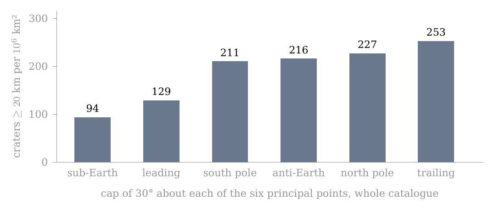
Figure 7. The six axes (A.9): density of craters of 20 km and more in caps of 30° about the sub-Earth, leading, south-polar, anti-Earth, north-polar and trailing points. The poles sit with the far side; the sub-Earth point is the sparsest. The bars are the whole catalogue, before the mask; read from left to right they rise from the point that faced the Earth to the trailing face.
The order after the mask. An objection is ready to hand: the near side holds most of the maria, the maria are young plains poor in craters, and so the sub-Earth minimum could be no more than the maria seen from another angle. The mask answers it. After the mask the order holds: the sub-Earth point remains the sparsest (148), the leading point next (174), the poles and the far side above them (221–246), the trailing point highest (252). The maria therefore do not make the sub-Earth minimum. The sub-Earth cap gains the most from the mask (+57.8%), as expected of the cap that holds most mare area, and still stays at the bottom of the order.
What the order means. The result is not ordered by one axis alone. About the spin axis, the poles stand above the equatorial points that face the Earth and the orbit, as the polar crowding of A.1–A.8 requires. About the Earth line, the sub-Earth end is the sparsest of all six and the anti-Earth end stands with the poles: the two ends of the Earth line differ, as they should if the near end was the contact with the parent and the far end the free crown. The model reads the pattern as the figure of the attached body: flattened by its spin, and in addition stretched along the Earth line between the Earth’s gravity and the centrifugal pull of corotation — a triaxial figure, long toward the Earth (), intermediate along the orbit (), short through the poles (). Here “the sides” are the leading and trailing points, which lie on the equator at right angles to the Earth line. With the mask, the poles stand 1.12 times above the sides (the mean of the two poles against the mean of the two sides), 1.62 times above the sub-Earth point alone, 1.09 above the anti-Earth point alone, and 1.30 above the mean of the two ends of the Earth line. The free tidal figure of C.2 gives the same order (1.66, 1.56 and 1.06 for poles to sub-Earth, sides to sub-Earth and poles to sides), as an illustration.
The figure, read from the six caps. The six caps can be read as a shape. For a figure the rounding of C.3 sets the crowding at every point, and averaging it over the same masked caps gives the pole-to-side and pole-to-ends ratios that figure would leave. Fitted to both ends of the Earth line, the measured 1.12 and 1.30 for craters of 20 km and more give the figure 1.37 : 1.15 : 1. The same figure, averaged over the clean caps and belt of D.1, predicts a pole-to-belt ratio of 1.21, against the measured 1.19–1.20 (D.1): two different regions of the surface, read through one shape, with nothing adjusted between them. Both ends are used because the sub-Earth end alone exaggerates the egg part of the figure: the contact disc of the near side depleted it for a reason other than the shape (A.9.2). The larger craters, which formed nearer the peak of the flattening, read a more flattened figure: for 60–100 km and 60–300 km the six caps give about 2.1 : 1.2 : 1 and 2.0 : 1.3 : 1, loose because each cap holds only 13–68 such craters, and the shapes that fit both the six caps and the clean belt within their counting scatter centre on about 1.8 : 1.4 : 1 — the peak figure of C.1. The tables of this fit are given in C.3. Behind the scenes: the first reading of this order compared the poles with the sub-Earth point alone; once the contact disc was seen to deplete that end, the fit was made to both ends and averaged through the same mask as the counts.
The third axis, the orbital direction, is taken up next, because its two ends do not behave alike.
A.9.1 — The trailing side is the denser side. The two ends of the orbital direction differ in every measure used in Part A, and always in the same sense. The table gathers the four measures — two shapes of region, each before and after the mask — so that the reader can see that the sign never changes, while the size of the difference does.
| Measure, craters km per km² | Trailing, 90°E | Leading, 90°W | Ratio |
|---|---|---|---|
| Cap of 30°, whole catalogue | 253 | 129 | 1.96 |
| Cap of 30°, after the mask | 252 | 174 | 1.45 |
| Band of 30°, whole catalogue (A.2) | 237 | 154 | 1.54 |
| Band of 30°, after the mask (A.4) | 219 | 204 | 1.07 |
At km the caps give 84 against 47 before the mask and 92 against 61 after it. The excess is not a sweeping-up of material by the face that leads in the orbit: the leading face is the sparser of the two. A body moving through a stream of material would collect more on its forward face, as a windscreen collects more insects than the rear window; the Moon shows the opposite, and so the excess is not of that kind. The model gives it two causes, set out in A.9.2–A.9.4: the openings of the trailing side itself, and material that lagged behind the turn and landed behind, on the trailing side. Nor is it a property of the whole longitude: after the mask the pole-to-pole bands differ by about one counting standard deviation only (A.5.3), while the caps about the two points still differ by about five. A counting standard deviation is the scatter expected in a count from chance alone; a difference of one such unit is within chance, a difference of five is not. A band of 30° of longitude runs from pole to pole and mixes the region about the point with high latitudes far from it; a cap of 30° holds only the region within about 910 km of the point. The excess survives in the cap and fades in the band, and therefore the excess lies in the region about 90°E.
A.9.2 — The maria lie on the same side. If the excess belongs to the region about 90°E, the next question is what that region holds that the region about 90°W does not. The LROC mare polygons were intersected exactly with the same caps of 30°, so that the mare area and the number of mare units are measured in the very regions where the craters were counted:
| LROC mare polygons in the cap of 30° | About 90°E | About 90°W | Ratio |
|---|---|---|---|
| Mare units (polygons) in the cap | 132 | 63 | 2.10 |
| Mare area in the cap, km² | 205,830 | 279,470 | 0.74 |
| of which Oceanus Procellarum | — | 192,134 | |
| Mare area of the side itself, without Procellarum, km² | 205,830 | 87,336 | 2.36 |
About 90°E lie Mare Marginis, Mare Smythii, Mare Undarum and Mare Spumans, with smaller units about Joliot, Hubble, Lomonosov and Artamonov; about 90°W stand a few structures of the Orientale system — Mare Orientale, Grimaldi and Lacus Veris. The cap about 90°W reaches to 60°W, and there the western margin of Oceanus Procellarum enters it: 192,134 km², more than two thirds of the mask area in that cap. Procellarum is a basalt plain, not a mare — crust melted by the Earth’s general heat, with no feed dome — and it lies in the contact region, not on the leading face; it is counted apart. The connection point of the model was first placed at 23°N, 320°E (Paper 11, §C.2); the reference now is the centre of the 3,000-km contact area, 24.1°N 335.2°E (Paper 3 §B.4), with Mare Imbrium (37.6°N 340.0°E), the main opening through which the Earth’s feed entered the Moon, inside it. Procellarum lies at the western side of that contact area, and its area in the leading cap belongs to the contact region and not to the leading face. Without it, the trailing side carries 2.36 times the mare area of the leading side and 2.10 times as many mare units. If the near-side units that enter the trailing cap, Mare Crisium and the basalt plain Fecunditatis, are set aside as well, the ratio is 170,839 to 87,336, or 1.96 — the same as the ratio of crater densities in the same caps. The closeness of the two numbers is an observation, not a law. The areas and unit counts of this paragraph are those of the LROC mare polygons, a mask that includes the basalt plains together with the maria (A.3); they are given as measured on that mask. What the table establishes is the direction: the side with more craters is also the side with more maria of its own.
A.9.3 — The maria as sources: ejection, return, landing, and the hot floor. Why should the side with more maria have more craters, when the maria themselves are crater-poor? In the model the maria are the openings through which deep material rose and was ejected (Paper 3; Paper 11, §C.3) — each mare is an opening over a feed dome — and the ejected material returned and landed on the shell at the speed it left — 2 to 5 km/s, landing 50 to about 1,000 km from its opening on the shell, and less later, on the denser, rounded body (Paper 6, §A.2). Paper 6 shows why the landing speed equals the ejection speed: material that falls back to the height it left keeps its energy and its angular momentum, and returns at the speed it was thrown. An opening therefore acts on the crater record in two directions at once. It sends returning material that lands on the surface about it and makes craters there, while its own floor stays hot: the craters that formed on the floor of the opening were melted, and the floor froze only after detachment. The record seen today is the balance of the two: In words: the number of craters observed at a place is the background that every part of the surface received, plus the craters made there by material returning from nearby openings, minus the craters melted on the hot floor of an opening. Outside the maria the last term is small and the second can be large; inside them the last term dominates. The mask of A.3 does not restore what was erased: it removes the craters inside the maria together with their area, and measures what remains outside them. Its effect is not symmetric: about 90°E the density hardly changes (253 to 252), about 90°W it rises (129 to 174). About 90°W the removed terrain, chiefly Procellarum and the Orientale floor, was poor in craters, and removing it raises the density of what remains; about 90°E the area outside the maria was already as dense as the cap as a whole. What the mask leaves about 90°E is therefore the population outside the maria — the landing zone of the returning material.
A.9.4 — What follows. The source of the ejecta and the place of landing are not the same, and the model fixes the distance between them: the flights of Paper 6 carry the material up to about 1,000 km on the shell, less on the rounded Moon — the scale of the caps of 30° (about 910 km), not the scale of a band that runs from pole to pole. This is what the two scales show together: the excess survives the mask in the caps about 90°E and fades in the bands. A region of the size of the landing zone shows the excess; a region many times longer dilutes it with ground that the returning material did not reach. The model reads the higher crater density of the trailing side, first, as the record of its more numerous openings: The chain reads from left to right: more openings on a side mean more material thrown up there, and more material falling back within reach of the openings means more craters in the ground about them, outside the maria themselves. The link from mare area to ejected mass, and from ejected mass to craters above 20 km, is a requirement of the model; the calculation that would give it — the ejection history of each opening, the flights and the crater yield — is the one listed in E.3 of this paper, with the landing geometry of the returning material in Paper 6, Part K.
The second cause is the turn itself. While the body was attached it turned with the Earth, and material thrown up from openings elsewhere on it lagged behind the turn and came down behind, on the trailing side (Paper 6). A ball tossed straight up from the platform of a turning roundabout lands behind the point it left. The trailing side therefore received, in addition to the returning ejecta of its own openings, material that lagged behind and landed behind. The two causes act in the same sense, and the size of each is part of the calculation listed in E.3.
What A.9 has established. The six caps place the sub-Earth point lowest, the poles with the far side, and the trailing point highest, and this order holds after the maria and basins are removed. The spin axis and the Earth line together give the order of five of the six points, as the figure of an attached body flattened by its spin and stretched along the Earth line requires, and read as a shape they give the figure 1.37 : 1.15 : 1 for all craters of 20 km and more, which predicts the clean polar excess (1.21 against 1.19–1.20); the difference between the two ends of the orbital direction lies about 90°E, at the scale of the returning flights, on the side that carries more openings of its own and that received the material lagging behind the turn.
A.10 The crater density within South Pole–Aitken
A.1–A.9 examined the distribution of craters by latitude, by longitude, in the polar caps and about the six axes. In the course of the test of the south pole it became clear that South Pole–Aitken is not only a component of the mask: the distribution of craters within it is itself not uniform. A.10 therefore examines SPA as a spatial object in its own right, but only as far as is needed to close the crater question of Paper 7. The explanation of the origin of the structure is passed to Paper 8.
Why SPA is treated separately. South Pole–Aitken is the largest basin on the Moon, about 2,400 km across, and it lies on the far side reaching toward the south pole. It touches the polar question directly: a quarter of the polar caps (24%) lies inside it, mostly in the south (A.11). In the mask it is removed as a single region, and in the whole catalogue it enters as a single region; either way one number stands for the whole basin. If the basin were uniform, one number would be enough. The south-polar tests showed that it is not, and a region that is not uniform cannot be described fairly by its mean: a poor centre and a normal rim, averaged together, would look like a basin that is moderately poor everywhere. The basin is therefore measured here from its centre outward.
A.10.1 — Definition of the test. The centre of SPA is taken here as the centre of the basin used in the mask calculations, approximately 53°S, 191°E, with a diameter of 2,400 km. This diameter corresponds to an angular radius of about 39.57°: half the diameter, 1,200 km, divided by the lunar radius, gives the angle at the centre of the Moon between the centre of the basin and its rim. Instead of averaging the whole basin into a single number, the distance from the centre of SPA is divided into rings: 0–10°, 10–20°, 20–30°, and 30°–39.57° up to the rim; beyond the rim, two control rings, 39.57–50° and 50–60°. The rings are like the rings of a target drawn about the centre of the basin; the two outer rings serve as the comparison, the ground next to the basin that did not belong to it.
The rings are not nested: each row is a separate region. The area is that of a spherical ring, with km, and craters are assigned by the position of their centre. In words: the area of the band between angular distances and from the centre of the basin, on a sphere of the Moon’s radius ; the factor accounts for the curvature, so that a ring of 10° far from the centre has more area than a ring of 10° near it. The test is made separately for craters of 20 km and more and of 40 km and more.
The reference of the ratio is local to A.10: 1.00 = the density in the ring just outside the rim of SPA, 39.57–50°. This local reference was chosen because the question of A.10 is whether parts within SPA are poor or rich relative to the surroundings next to the basin; it does not replace the equatorial reference used in the tables of A.1–A.7. The ground just outside the rim lies at nearly the same latitudes and on the same side of the Moon as the basin, so a comparison with it removes the polar and far-side effects of A.1–A.9 and isolates what belongs to the basin itself.
Table A.10 — crater density in rings about the centre of SPA. The density and ratio columns are coloured from soft yellow for the low values to soft red for the high. Each diameter threshold has its own scale. The colours are a reading aid only and not a test of significance.
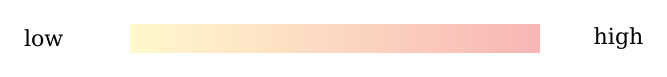
How to read the table: each row is a separate ring about the centre of SPA; in the glyph the dashed circle is the rim of the basin and the shaded ring is the row’s region. The density is the number of craters divided by the ring’s area in millions of km². The ratio is to the surroundings: the density of the ring over that of the ring just outside the rim, 39.57–50° (bold 1.00), computed from the unrounded counts and areas. Read the density column from top to bottom: one pale cell at the top, the centre, and a column of nearly equal values below it. The single yellow row is the finding of this section.
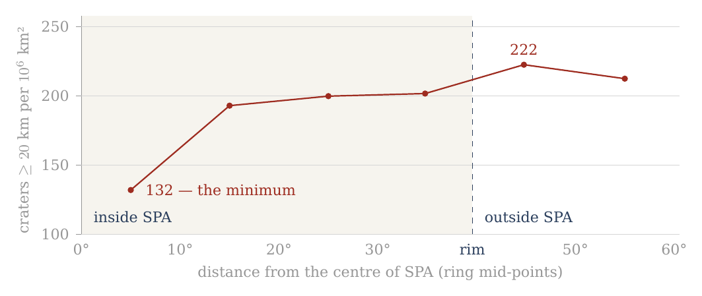
Figure 8. The density of craters of 20 km and more in six separate rings about the centre of South Pole–Aitken (A.10). The central region is the minimum of the profile; the density rises already in the ring 10–20° and approaches that of the surroundings toward the rim. The shaded part is the interior of the basin; the dashed line is its rim.
A.10.2 — The central region is the minimum of the profile. The most prominent result lies in the region 0–10° from the centre of SPA. Its area is about 0.288 million km² — about 288,000 km² — and so the term “centre” refers here to a wide geographic region and not to a point; it is a disc of 10° radius about the centre of the basin. In this region only 38 craters of 20 km and more were counted, a density of about 132 per million km².
Outside the central region the density rises sharply: to about 193 at 10–20°, about 200 at 20–30°, and about 202 between 30° and the rim of the basin. Just outside the rim it reaches about 222 per million km². The density of craters of 20 km and more in the central region is therefore only about 0.59 of that of the surroundings just outside SPA — a relative deficit of about 41%. The profile is a step and not a slope: one low ring at the centre, then a level close to that of the surroundings from 10° outward.
A.10.3 — The 40-km threshold as a consistency test. Craters of 40 km and more show the same general direction. The density in the region 0–10° is about 52 per million km², against about 68–71 in the outer parts of SPA and about 75 just outside the rim. The ratio between the centre and the nearby surroundings is about 0.69.
In the central region, however, only 15 craters of 40 km and more were counted, so the relative counting uncertainty is larger than in the 20-km group. The chance scatter of a count grows with the square root of the count, so its relative size falls as the count grows: fifteen craters carry a larger relative uncertainty than thirty-eight. The 40-km group therefore serves here as a consistency test of the direction of the result, while the main quantitative statement rests on the 20-km group.
A.10.4 — SPA as a whole is not correctly described by the word “deficit”. The table shows that the deficit is not uniform across the basin. Already in the ring 10–20° the density of craters of 20 km and more rises to about 193, and in the next two rings within SPA it is close to 200. It does not follow from the central minimum that the whole of South Pole–Aitken is poor in craters. This matters for the clean count of A.11: SPA is removed there because its centre is poor, and removing it takes out the poor centre together with the outer rings that are not.
The narrow and direct finding is another: within SPA there is a wide central region in which the crater density is markedly lower than in the outer parts of the basin and in the surroundings just outside its rim.
A.10 uses here a circular radial division based on the SPA diameter used in the mask. It does not establish that the poor region itself is round, does not define its exact physical boundary, and does not explain its origin. The questions of the detailed geometry and of the physical cause lie beyond the purpose of Paper 7.
A.10.5 — The point of contact with Paper 8. This finding emerged from the inquiry into the polar craters of Paper 7, and it therefore belongs to the observational record of the present paper. But its very existence opens a new question: why does the central region of South Pole–Aitken show a lower crater density than the outer regions of the basin?
Paper 7 does not attempt to answer that question. Its role ends here: it identifies and quantifies the phenomenon. The inquiry passes to Paper 8 (South Pole–Aitken), in which SPA itself becomes the central object of study. There the detailed geometry of the poor region will be examined — the ellipticity and asymmetry of the basin, the position of the density minimum, the possible antipodal connections, and the physical mechanisms that can explain the puzzle of SPA.
Paper 7 ends with the observational statement: the wide central region of SPA is the minimum of the radial crater-density profile examined.
Paper 8 begins from the question that statement creates: what produced this anomalous structure of South Pole–Aitken?
The numbers in the table are based on the Robbins catalogue used throughout Part A. The 10° boundary is an analytical boundary of the inner ring and is not presented as a proven physical boundary of the deficit region.
A.11 How the counts were made, and their limits
This section gathers in one place the rules behind every count of Part A and the main ratio of the paper: where the comparison regions lie, what is removed from them and why, and what a count of craters can and cannot tell. A reader who wants to check a number of this paper should be able to do so from these rules.
Where the counts are made. The test compares two regions: the polar caps (latitude 60° and more, north and south) and an equatorial belt (latitude within 15° of the equator). The belt of 15° is the narrowest that still holds enough craters; it gives the sharpest contrast between pole and equator, where the effect of the rounding is largest. In the model the crowding grows with latitude: the poles are the points where all meridians met as the flattening relaxed (C.3), and the equator lies farthest from them, so the cleanest contrast is between the two ends of that range. A wider belt of 30° gives almost the same overall result (1.12 against 1.11) but dilutes the contrast, because it includes latitudes where the effect is intermediate. That the two belts agree shows that the result does not depend on the choice of belt.
A clean count. Two kinds of terrain do not belong in the comparison. The maria are young lava plains poor in craters, and they lie mostly near the equator: counted, they lower the equatorial density and inflate the ratio. They are removed on both sides — 22% of the belt, 1% of the caps. South Pole–Aitken erased the craters of its centre, and a quarter of the polar caps (24%) lies inside it, mostly in the south: counted, it lowers the polar density. It is removed as well. The two removals work in opposite directions — the maria would favour the poles, SPA would favour the equator — and removing both, on both sides of the comparison, leaves like compared with like: old ground outside the maria and outside SPA, at the poles and at the equator. Behind the scenes: the first version of this paper compared counts that included the maria, which raised the ratio to 1.32; the clean count removes them on both sides, and the conclusion rests on it (D.1–D.2).
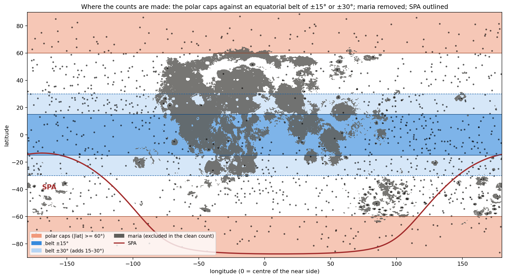
Figure 9 shows the regions on the map of the Moon: the two orange caps, the dark-blue belt, the grey maria taken out of both, and the red outline of SPA in the south. The maria fall mostly in the belt and SPA mostly in the southern cap, which is why each, if counted, would push the ratio in its own direction.
Five things bound what the counts can say. First, the record is cumulative: every crater since the shell began to collect its record on the Earth is in it, and any signature of one period is an addition to a background, or a deficit where a later surface erased it. A count today sees the sum of all periods, not one of them; the polar excess is read as a pattern added to that sum. Second, the diameter threshold matters: below 40 km the catalogue’s completeness varies with terrain, and secondary craters enter; the 20-km series is used for numbers, the 40-km series for the sign; below 20 km, where spray and secondaries dominate and the surface approaches saturation, no comparison is made. Secondary craters are those made by fragments thrown from a larger crater; saturation is the state in which new craters erase old ones as fast as they form, so that the count stops growing. Third, illumination: at the poles the Sun stands on the horizon and every small crater throws a shadow, so that the eye sees far more craters there than at the equator; the catalogue is drawn from maps and topography and does not share this bias, which is why the counts and not the pictures are used. A photograph of the pole looks more cratered than it is, as a field at sunset shows every furrow; the catalogue measures the ground, not its shadows. Fourth, the background: the ordering of Paper 11 about the sub-Earth axis is present under everything reported here, and the polar excess is measured against it, not instead of it — the six axes of A.9 show both at once, the sub-Earth minimum and the poles above the equatorial ring. Fifth, the counting set: every density in this paper is taken from Robbins’ geometric catalogue, which is uniform across the Moon; geological maps, compiled from earlier maps of unequal detail, are several times denser on the near side than on the far and are not used for counts (D.3). A count can only be compared with another count made by the same method; a uniform catalogue is what makes the pole and the equator, the near side and the far, comparable.
After A.1–A.10 the descriptive stage of Part A can thus be closed. First the high density at the polar latitudes was identified; then it was separated from the longitudinal asymmetry; the mask test showed that it does not disappear when the basins and maria are taken out; the cap test showed how the polar structure itself changes — or remains — under the same control; the six axes showed that the pattern is ordered by the axes of the Moon and not by latitude alone; and within South Pole–Aitken a central minimum was measured and passed to Paper 8.
From here on the question changes.
Until now we asked mainly what is found on the surface of the Moon, where it is, and which parts of the pattern remain after geometric and spatial controls.
The next stage must ask what can produce such a pattern.
Every explanation examined from here on will have to meet at least the constraints the observation has fixed here: a high density in both polar regions; its appearance at the two diameter thresholds tested; its survival after the exclusion of the basins and maria; the difference between the response of the north and the south to the mask; the convergence of the inner-cap densities of the two poles after the exclusion; and the order of the six axes, with the sub-Earth point the sparsest.
In other words, A.1–A.10 have defined the phenomenon to be explained. From here we pass from description to the tests of explanation: which mechanisms can produce the structure measured, which cannot, and which of them leaves predictions that can be tested independently.
What we tried before the answer
Part A measured where the Moon’s craters are crowded: at both poles, more than at the equator, and on a whole ring of the surface rather than at one point. Part C will give the cause we propose. This Part stands between them. Before the answer, we set out the six readings we examined and set aside on the way to it. A reader will think of them too, and the reason each fails is what pointed us to the answer; seen together, the six failures leave room for only one kind of cause. Each is held to the same four questions, answered from the counts of Part A:
Sign. Does the reading make the poles denser than the equator, or sparser?
Size. If the sign is right, does it reach the measured ratio — 1.32 in the raw count, 1.20 0.05 in the clean count, rising with crater size (D.1–D.2)?
Shape. Does it put the excess where the counts put it: on the axis, at both poles alike, and on the ring of A.9 rather than at one point?
The mask. Does the excess survive the removal of basins and maria, as the counts do?
Two terms recur throughout. The raw count uses every crater of the catalogue; the clean count first removes, on both sides of the comparison alike, the surfaces whose crater record was reset or dominated by a single event — the maria, the large basins, and South Pole–Aitken — so that pole and equator are compared on the same kind of ground. Removing those surfaces is what we call the mask (A.3). The ratio is the number of craters per unit area near the poles divided by the same number near the equator: 1.00 means no difference, 1.20 means the poles carry 20% more craters on the same area.
A reading that fails the first question fails outright: a cause that thins the poles cannot explain why they are crowded. A reading that passes the first and fails the others may still be part of the account, and where it is, we keep it. The four questions are ordered from the coarsest test to the finest, so that most readings are settled early.
B.1Preservation on old highlands
The reading. The poles are old highland terrain without maria — the dark basalt plains that flooded much of the near side and erased what lay under them. Where nothing flooded, craters remain. On this reading the poles are dense because they are old and untouched, not because anything gathered craters there. It is the first explanation a planetary scientist reaches for, because crater density is the standard measure of a surface’s age.
What it predicts. Density should follow the age and the preservation of the terrain: equal on all old, unflooded highland, and low only where a mare or a young basin lies. It predicts no centre: an old highland is uniform. In plain terms, if preservation were the whole story, a pole would look like any other stretch of old highland of the same age, and a map of crater density would show plateaus and holes, not a peak.
What the counts say. Preservation is real, and it orders the Moon at the largest scale: in the exposure zones of Paper 11, the far side carries 219 craters per km², the limb belt 164 and the contact disc 99. (A unit of km², a million square kilometres, is a square about 1,000 km on a side; the zones are the parts of the Moon that faced the Earth, stood at its edge, or faced away during the attached stage.) But three counts of Part A go beyond it.
The excess survives the mask. The mask of A.3 removes exactly what preservation invokes — the basins and the maria. What remains is highland on both sides of the comparison. If preservation were the whole cause, the ratio would fall to 1.00 when the flooded surface is removed; it falls from 1.32 to 1.11, and stands at 1.20 once South Pole–Aitken is removed as well — it does not reach 1, and it rises with crater size to 1.53 (D.1–D.2). This is the decisive test, because it compares highland with highland: whatever difference remains cannot be the difference between flooded and unflooded ground.
The oldest highland is not the densest. The crown of the far side, about the anti-Earth point, is the oldest surface of the model and the least touched by maria. After the mask it carries 221 craters per km², against 233 and 246 in the two polar caps (A.9). The poles stand above the oldest highland, not with it. If age and preservation set the density, the crown should lead; it does not.
The north pole has a centre. About the north pole, where no basin and no mare reach within 20°, the density rises from 189 in the cap of 60° to 300 in the cap of 15° (A.6). (A cap of ° is the circular region within degrees of the pole; a smaller cap looks closer to the pole itself.) An old, uniform highland does not rise toward a point. The north pole is the cleanest place to see this, since nothing has to be masked there.
Verdict. Preservation passes the sign. The near-side–far-side ordering itself is that of the contact geometry — the zones of the contact on the tip of the pear (Paper 3) — and of the hardest landings, on the far side (Paper 6, §I.1), not of preservation. Preservation fails the mask and the shape. We keep it only as the reason the maria and the young basins are low, and not as the cause of the polar excess. The near-side highlands south of Tycho, 302 within 15°, are a further reminder that density on old terrain is not set by age alone. What preservation leaves unexplained is precisely what this paper is about: an excess that remains when highland is compared with highland, and that has a centre on the spin axis.
B.2 Rotational flattening while attached
The reading. A soft body that spins fast flattens — wide at the equator, low at the poles — like dough spun in the air. In the model the Moon, while attached, turned with the Earth once in about five and a half hours, fast enough to flatten it markedly (C.1). The first thought is that the flattening pressed the poles together and drew their craters closer.
What it predicts. The geometry is the reverse. Take a surface already carrying craters evenly and flatten the body at constant volume into a spheroid of axis ratio . (A spheroid is the shape of a ball pressed evenly from top and bottom; is its equatorial radius and its polar radius, so is a sphere and larger values are flatter. “Constant volume” means the material is neither added nor removed, only reshaped.) The polar surface is stretched in both directions of its plane; the equatorial surface is stretched along the equator and shortened along the meridian. Per unit area the craters thin at the pole and not at the equator, and the ratio of densities is exact: Here stands for the number of craters per unit area, not for the density of the material. The equation says that flattening divides the polar crater density, relative to the equator, by the axis ratio: the flatter the body, the sparser its poles. It is the reciprocal of the ratio the rounding gives in C.3. For the spins and densities of C.1, late in the rounding (2,600 kg/m³, 5.77 h) and 1.69 at the peak of the flattening (1,300 kg/m³, 5.5 h), so flattening would leave the poles at 0.83 and 0.59 of the equator — 17% and 41% fewer craters per unit area at the poles. (By release the body was round, its shell rigid, at most 1.04; Paper 2, §B.7.)
What the counts say. The poles stand at 1.32 of the equator in the raw count and at 1.20 in the clean count. The sign is wrong: flattening of a cratered surface makes the poles sparser, and the counts show them denser.
Verdict. Fails on sign. Press a soft ball from above and below: its top does not shrink, it spreads, and points drawn on it move apart. What the reading gets right is the geometry, read the other way: a surface stretched at the poles and then released contracts at the poles. That is C.3. Behind the scenes, this is where the method changed: we set out to compute how much flattening would crowd the poles, found that it thins them instead, and from then on looked for the process that undoes a flattening rather than one that makes it.
B.3 The polar axis shortened by the tide — the Roche effect
The reading. While the Moon was attached it was stretched along the line joining it to the Earth between two opposite pulls: the Earth’s gravity pulled its near side inward, toward the Earth, and the centrifugal effect of the turn at corotation pulled the body outward. Its near part was held on the tip of the pear. (The Roche effect is the name for the stretching of a body close to a much larger one by the difference of the pulls on it.) Its volume changed little, so what was drawn out along that line came from the other two axes; in the frame turning with the Earth the centrifugal term restores the axis along the direction of motion, and the shortening falls mainly on the polar axis. The poles were drawn toward each other: perhaps their craters were drawn together with them.
What it predicts. The free fluid figure at 2,600 kg/m³ is computed in C.2: . Here points toward the Earth, along the direction of motion and along the poles; the figure is long toward the Earth and short at the poles, roughly an egg lying along the Earth line. Applied to a surface already carrying craters evenly, the stretch into that figure changes the density at each point by the reciprocal of the factors of C.3:
| Point | Stretch into the Roche figure | Rounding back to a sphere (C.3) |
|---|---|---|
| Pole | ||
| Leading and trailing points | ||
| Sub-Earth point |
The table is read across: each row is one point of the surface, the middle column says what the stretch into the tidal figure does to its crater density, and the right column what the return to a sphere does. The two columns are reciprocals of each other: what the stretch thins, the rounding crowds by the same factor, and the reverse. A shortened polar axis spreads the surface above it, exactly as in B.2: the pole is the most stretched point of the figure, and the ends of the Earth line the least. The ends of the stretched axis — the near part, held on the tip of the pear, and the far end — are where the surface bunches and the craters stand closer.
What the counts say. The poles are dense and the sub-Earth point is the sparsest point of the six (A.9: 94, and 148 after the mask). The stretch into the figure predicts the opposite at both.
Verdict. Fails on sign as a crowding mechanism. The effect itself is real and is kept: it is the figure of C.2, and the rounding out of it is the answer. The Roche effect sets the size of the stretch; the rounding, not the stretch, moves the craters. Read in the right column rather than the middle one, the same table already shows the pattern of the counts: poles highest, sides next, sub-Earth point lowest.
B.4Stronger gravity at the pole
The reading. On a flattened body the pole is nearer the centre and the effective gravity there is larger — there is no centrifugal term at the pole. (The effective gravity is the pull of the body’s mass minus the outward push felt by anything turning with it; at the pole, on the axis, nothing is carried round, so there is no outward push.) Perhaps the stronger gravity drew surface material toward the pole.
What it predicts. Gravity pulls down, not sideways. For material to move along the surface toward the pole, the pole must be low — a valley floor in the effective potential. (The effective potential is the energy per kilogram of standing at a point, counting both gravity and the spin; material on a surface moves from high potential to low, as water runs downhill.) On the attached body, turning with the Earth, it is the reverse. In the frame turning with the body the effective potential at the equator is lower than at the pole by , where is the rate of spin and the radius: this is the extra energy of motion that a point on the equator has and the pole lacks. Near release (a day of 5.77 h, the spin late in the rounding), for a body of the lunar mass at 2,600 kg/m³ (radius about 1,890 km): with m s at the surface (C.7). The first number is the difference in potential; dividing it by the surface gravity turns it into a height, the height one would have to climb to gain the same energy. On a surface not yet flattened to its equipotential, the pole stands about 120 km “above” the equator in this sense: it is the point of highest potential, a hilltop, and loose material slides away from it, toward the equator. (An equipotential is a surface of equal potential everywhere, like the level of a still lake; a body settled into its equilibrium figure has its surface on one.) That is the flattening of B.2, not a crowding.
What the counts say. The excess is at the poles. While the body spun, gravity and rotation together drove material away from them.
Verdict. Fails as a lateral mechanism while the body is attached and spinning. It is kept in its proper place. The body’s own gravity holds it together from the rigid Roche limit (about 13,000 km at 1,300 kg/m³) outward; once, late in the attached stage, its centre of mass has passed the corotation line and the body is no longer pressed on its base, the flattened body’s pole is nearer the centre than its equator, the pole becomes the lowest point of the potential, and the same gravity drives the surface toward it — the engine of the rounding (C.4). (The rigid Roche limit is the distance from the Earth beyond which a body’s own gravity can hold it together against the tide; inside it, the body is held only by its base.) The change is not in the gravity but in its strength against the spin: as the body becomes denser at nearly the same spin, the flattening the spin had held out becomes more than it can carry, and the pole turns from a hilltop into a valley floor. The 120 km is the scale of what the spin held up and the rounding releases.
B.5A sink at the pole
The reading. The natural picture of “something pulled it in”: a drain, a subsidence, an internal vortex beneath each pole, gathering the surface toward a point — as water on a basin floor gathers toward the plughole.
What it predicts. A sink gathers toward a point: density should rise without limit toward the pole itself, and the pole should sit in a depression. It also needs a force that points at the pole.
What the counts say. About the north pole, where no basin or mare reaches within 20°, the density rises from 189 (cap of 60°) to 227 (30°), 270 (20°) and 300 (15°) — and then stops: 298 in the cap of 10° (A.6). The concentration is toward the polar region, not toward the point. In the south, after the mask, the inner caps rise to 305 at 15° and 348 at 10° (A.7); but within 20° of the south pole the mask is South Pole–Aitken alone, and the cap of 10° rests on 36 craters, so the inner rise there carries the basin’s geometry and the small count, not a point sink. (With a few dozen craters, a handful more or less moves the density by a large fraction; the clean northern sequence carries the weight of the test.) And the topography shows no matching pair of polar depressions.
Verdict. Fails on shape. In a rotating body every force is symmetric about the axis, and symmetry about an axis makes a ring, not a point; there is no force that points at the pole itself. The excess does belong to a ring — the ring 90° from the sub-Earth point, through both poles and both sides (A.9, C.3) — and the poles head it because the axis passes through them. That is the geometry of the answer, not of a sink. The sink reading has the right sign but the wrong pattern: it asks for a peak at a point, and the counts show a plateau over a region and a crowded band around the whole body.
B.6 Uniform change
The reading. Uniform inflation, uniform contraction on cooling, self-gravity drawing everything toward the centre — a change of size rather than of shape. Each of these is a real process in the history of a hot young body, and each moves the whole surface.
What it predicts. Each changes every element of the surface by the same ratio. The spacing between craters grows or shrinks alike everywhere, and the density changes by the same factor at the pole and at the equator: for a surface cratered evenly. The equation says that a change of size multiplies the numerator and the denominator by the same factor, so the ratio between them cannot move: a balloon inflated evenly makes all its dots sparser, but no part sparser than another.
What the counts say. 1.32 in the raw count, 1.20 in the clean count, rising with crater size to 1.53.
Verdict. Fails on sign and size alike: it makes no excess at all. This is the reading that showed the way. A change of size cannot make a polar excess; only a change of shape can, and it must be non-uniform in a particular way — it must shrink the surface at the poles more than at the equator, and it must be symmetric about the spin axis. B.2 and B.3 are changes of shape of the wrong sign; the answer is their reverse. Behind the scenes, this is where the search narrowed: once a change of size was excluded, the question was no longer what pulled the craters to the poles but which change of shape contracts the polar surface most, and only one change of shape in the history of the model does that.
B.7 The answer, and why it is the one that remains
One change of shape does exactly what B.6 asks: a flattened body returning to a sphere. Its sign is right — it is B.2 and B.3 read in reverse. Its engine is the gravity of B.4, in its proper place, once the body’s centre of mass has passed the corotation line and the body is no longer pressed on its base, while it still turns with the Earth. Its shape is the ring of B.5, headed by the poles because the axis passes through them. Its size follows from the figure the craters themselves record about the six axes (A.9), checked against the Maclaurin figure of C.1: a range from about 1.5 (craters formed at the peak, on the flattest body) to about 1.2 (those formed late in the rounding), against a clean count of 1.20 0.05 that rises with crater size from 1.09 to 1.53; for all craters of 20 km and more the six-axis figure predicts 1.21. (The Maclaurin figure is the exact equilibrium shape of a uniform spinning fluid body; given only the spin and the density, it fixes how flat the body is, and so how much rounding is available to crowd the poles.) It survives the mask, as the counts do. Its time is before release, during the attached stage with the Earth’s rotation, while the interior was soft and the outer shell already stiff, so that the rounding built the pressure of C.4: the flattening grew as the body moved outward on the tip of the pear and peaked as it approached its 3,000-km base near the corotation line ( about 1.8 : 1.4 : 1, the stretched body swollen near 1,700 kg/m³); the body rounded after its centre of mass passed the line, with a decrease of volume, to about 1.20 late in the rounding, and it was round, its shell rigid, at release. And it makes predictions that can be tested.
The rise with crater size is the part of the evidence that points most directly to a rounding in time. A crater keeps only the crowding of the rounding that happened after it formed: the large craters, formed near the peak on the flattest body, went through the whole rounding; the small ones, formed late, through only its end. No reading of B.1–B.6 makes the excess depend on crater size; the rounding requires it.
The table collects the six readings against the four questions. Each row is one reading; a tinted cell marks a question on which it fails; a dash means the question does not arise, because the reading has already failed on sign or does not address that question. The last column says what each rejected reading contributes to the account. Read from top to bottom, every rejected reading leaves something behind, and the last row gathers them: the stretch of B.2 and B.3 supplies the shape to be undone, the gravity of B.4 the engine, the ring of B.5 the geometry, B.6 the need for a change of shape, and B.1 the low maria and basins.
| Reading | Sign | Size | Shape | Mask | Kept as |
|---|---|---|---|---|---|
| B.1 Preservation | yes | — | no | no | the low maria and basins |
| B.2 Spin flattening | no | — | — | — | the stretch that the rounding undoes |
| B.3 Roche effect | no | — | — | — | the figure of C.2 |
| B.4 Polar gravity | no | — | — | — | the engine of the rounding (C.4) |
| B.5 A sink | yes | — | no | — | — |
| B.6 Uniform change | no | no | — | — | the need for a change of shape |
| Rounding (Part C) | yes | 1.2–1.5 / 1.20 (clean) | ring, poles first | yes | the answer |
What we now have: a single cause — the rounding of a flattened body with a decrease of volume, released from its base and driven by its own gravity while it was still attached — that passes all four questions, and six readings that each fail at least one of them while leaving a part to the account. We state it in Part C.
The mechanism
Part B ended with one answer left standing: a flattened body that returns to a sphere. This Part turns that answer into a mechanism. It asks what shape the young Moon had, what changed that shape, what the change did to its surface, and what force drove it. Sections C.1 and C.2 compute the shape; C.3 follows the surface through the rounding and gives the predicted crowding of craters at the poles; C.4 names the engine — the body’s own gravity — and the internal pressure it builds on the way.
The forces, and the sequence of the shape. The young Moon’s own gravity pulled every part toward its centre and, alone, would have made it a sphere. Its spin with the Earth pushed its equator outward and lowered its poles. And it was stretched along the Earth–Moon line between two opposite pulls: the Earth’s gravity pulled its near side inward, toward the Earth, and the centrifugal effect of the turn at corotation pulled the body outward; its near part was held on the tip of the pear. The stretch shortened the other axes, the poles most of all. The sequence of the shape follows from these forces. A sialic mass gathered at the tip of the pear — still the tip of the pear — and began to come out and flatten, first on a base 6,000 km wide, attached. As it moved outward its base narrowed from 6,000 to 3,000 km, and it took a shape and a body of its own, separate from the pear but flattened. The flattening arose as the pear reached corotation, because the two sides of the body were pulled in opposite directions, and the body was most flattened as it approached the 3,000-km base; that figure is what C.1 and C.2 measure. Within the 3,000-km stage, once its centre of mass had passed the corotation line, the net pull that had pressed it on its base fell to zero (C.6): corotation let it round and part. It rounded with a decrease of volume — the stretch released, the body smaller and denser. The rounding came late, after the flattening, near corotation; at release the body was round and its outer shell rigid (Paper 2, §B.7). Had the pear not lengthened to carry it there, the mass would have returned. What the slowing of the locked spin removed after release was only the small tidal and rotational bulge of a rigid body (C.5). The rounding of C.3 is what the body’s own gravity did once the pulls that held the flattening let go.
C.1The initial shape: spin and density
The question of this section is how flat the Moon was at the peak of its flattening, what shape it had, and how that flatness fell as it rounded. The spin part of the measure needs only two quantities: how fast the body turned and how dense it was.
A soft body that spins takes the shape of a flattened spheroid — a ball pressed down at the poles and widened at the equator, round when seen from above the pole. A pizza dough tossed and spun in the air widens in the same way. For a homogeneous self-gravitating fluid — a body of uniform density held together only by its own gravity, with no strength of its own — the figure is known exactly; it is the Maclaurin spheroid. Let be its equatorial radius and its polar radius. Its eccentricity measures how far it is from a sphere: for a sphere, and approaches 1 as the body flattens into a disc. Such a spheroid is in equilibrium — every surface parcel at rest, the inward pull of gravity exactly balancing the outward fling of the spin — at the spin for which Here is the angular speed of the spin ( divided by the spin period), is the gravitational constant and the density. The left side compares the spin with the body’s own gravity: the outward fling grows as , and the inward pull of a uniform body grows with . The right side depends only on the shape. It rises from zero at the sphere to a maximum of 0.4493 at (), beyond which no Maclaurin figure exists. In words: the faster the spin compared with the gravity, the flatter the equilibrium figure, up to a limit past which no figure can balance. The degree of flattening therefore depends on the spin and on the density together: a light body flattens more than a dense one at the same spin, because its weaker gravity resists the spin less. Solving the relation for the values of the series gives the axis ratio , the equatorial radius divided by the polar one:
| Spin period | 1,300 | 1,600 | 1,700 | 2,000 | 2,600 | 3,344 | |
|---|---|---|---|---|---|---|---|
| 5.5 h (peak flattening) | no equilibrium | 1.69 | 1.46 | 1.41 | 1.32 | 1.22 | 1.16 |
| 5.77 h (late in the rounding) | 2.22 | 1.56 | 1.39 | 1.35 | 1.28 | 1.20 | 1.14 |
Read the table along a row and the figure rounds as the density grows: the same spin cannot hold out so flat a figure against a denser, stronger-pulling body. Read it down a column and the figure rounds a little as the spin slows from 5.5 to 5.77 hours. The two bold entries are the two ends of the rounding of the pita part: the swollen body at the peak of the flattening, about 1,700 kg/m³, and the dense body late in the rounding. The entry at 1,300 kg/m³, 1.69, is the figure that the light mass gathered at the tip of the pear would take as a fluid from the spin alone; it is kept as context, not as the measured peak.
At 5.5 h and 1,000 kg/m³ no equilibrium figure exists: the spin exceeds the maximum of the relation, and the body would shed mass from its equator. The maximum sets a lower bound on the density at any spin, , which at 5.5 h is 1,070 kg/m³: a body any lighter than this, turning once in 5.5 hours, cannot hold itself together as a fluid.
When was it flattest? Before the flattening the mass was still the tip of the pear, at about 1,300 kg/m³, and the Earth set its shape. During the flattening it became a body of its own, still attached: it could hold a figure of its own from the rigid Roche limit for its density outward. The Roche limit is the distance from the Earth inside which the Earth’s tide, which pulls the near side of a body harder than its far side, exceeds the body’s own gravity; outside it, the body can hold itself together. For a body with some stiffness (the “rigid” limit) the distance is smaller than for a pure fluid. At 1,300 kg/m³ it is 12,994 km (the limit scales as , so a denser body can hold itself closer in; 10,314 km is its value at 2,600, Paper 2). From there it moved outward on a base narrowing from 6,000 toward 3,000 km, and it was flattest as it approached the 3,000-km base, near the corotation line (15,818 km at a 5.5-hour day), where the Earth’s gravity on its near side and the centrifugal pull of corotation drew it in opposite directions.
What shape it had. The figure at the peak was not a spheroid. The spin flattened the body about its axis, and the two opposite pulls stretched it in addition along the Earth line, so that its three axes differed: long toward the Earth (), intermediate along the orbit (), short through the poles () — an egg that is also a pita. The craters record this figure (A.9, C.3): about 1.8 : 1.4 : 1 at the peak, within the range 1.64 : 1.45 : 1 to 1.95 : 1.33 : 1, and 1.37 : 1.15 : 1 averaged over all craters of 20 km and more. The figure is moderate: the long axis 1.6–1.95 times the polar, the intermediate 1.33–1.45 times.
The density at the peak. Two independent checks place the peak body near 1,700 kg/m³. First, the pita part of the shape, , is the part the spin sets: to first order the difference between the intermediate and the short axis of a spinning body stretched along the Earth line depends on the spin alone, and so it can be read on the Maclaurin relation. At 5.5 hours the relation holds on a body of 1,700 kg/m³ (bold in the table); the measured range of the pita part, 1.33–1.45, corresponds to 1,960–1,615 kg/m³, and its centre to 1,600–1,750. Second, the rounding must close up every part of the surface. A stretched body occupies more volume than the same body relaxed; when the stretch is released its volume decreases. If the body at the peak were denser than about 1,800 kg/m³, the decrease would be too small, and the ends of the Earth line would have to grow during the rounding instead of closing up (C.3). The two checks agree: the peak body was stretched and swollen, near 1,700 kg/m³, its equivalent-sphere radius — the radius of a sphere of the same volume — about 2,180 km against 1,890 km at release and 1,737 km today. The light mass gathered at the tip of the pear, 1,300 kg/m³ (about 2,380 km), lies at the start of the sequence, before the flattening.
How it rounded. After the centre of mass passed the line the body rounded, in two parts. The egg part — the stretch along the Earth line — was released first: at the line the net pull that had pressed the body on its base fell to zero (C.6). The pita part — the spin flattening — went with the densification at nearly fixed spin (C.4): the densities of the sequence (2,000, 2,300, 2,600 kg/m³) and the slight lengthening of the Earth’s day (5.77 hours at release) give its scale, and the axis ratio fell — to about 1.20 late in the rounding. A fluid body that turns once in a few hours cannot be a sphere. The step from about 1.20 to the round body at release is not computed in this paper; it is a requirement of the model: the rigid outer shell holds the figure round, and Paper 2 (§B.7) shows that a shell of rigidity GPa keeps the axis ratio at or below 1.04. At release the Moon is round. The flattening that remained after release is only the small tidal and rotational bulge of that rigid body, and it too disappears as the locked Moon’s spin slows with its orbit (C.5).
The table is the relation above solved at each entry; it depends on nothing but and , and a reader can reproduce it from the equation alone. What we now have: a triaxial peak figure of about 1.8 : 1.4 : 1, on a stretched body near 1,700 kg/m³, as it approached its 3,000-km base near the corotation line; a rounding in which the egg part was released at the line and the pita part fell with the densification, to about 1.20 late in the stage; and a round body at release.
C.2 The tidal component: the free figure at 2,600 kg/m³
C.1 treated the spin alone. This section adds the second force that shaped the body, the Earth’s tide, and shows what it does to the figure. The result is used as an illustration of the tide’s part, not as the basis of the test (see the end of the section).
A body near the Earth that turns with it is not only flattened by its spin but stretched along the Earth–Moon line between two opposite pulls: the Earth’s gravity pulls its near side inward, toward the Earth, and the centrifugal effect of the turn pulls the body outward. On the attached Moon the near part was held on the tip of the pear. The free figure computed below, a body with nothing attached to it, is the classical illustration of such a stretch. A homogeneous fluid body in synchronous rotation — turning once on its axis in each orbit, so that it always shows the same face to the Earth — at distance from a mass takes the figure of a Roche ellipsoid, with three different axes: toward the Earth, along the direction of motion, along the poles. Where the Maclaurin figure is round when seen from the pole, the Roche figure is egg-shaped from every side.
The figure is fixed by three conditions, one for each axis. Inside a homogeneous ellipsoid of semi-axes the gravitational potential — the energy per kilogram that a parcel has by its position in the body’s gravity, lowest where gravity has pulled it furthest in — is with (Chandrasekhar’s index symbols). In words: inside the ellipsoid the potential rises as the square of the distance from the centre along each axis, and the coefficients say how steeply it rises along each. They depend only on the shape; the shortest axis has the largest coefficient, because along it the body’s mass lies closest. is a constant of the shape, and , , are measured along , , .
In the frame turning with the orbit, (the orbital rate, with the mass of the body), two further terms are added. The Earth adds the tidal potential , with : it lowers the potential toward the Earth line () and raises it across ( and ) — stretch along the line, squeeze across it. The rotation adds the centrifugal potential , which lowers the potential away from the spin axis and leaves the polar direction () alone. A fluid surface at rest must be an equipotential, a surface of equal potential, as the surface of a still lake is; otherwise the fluid would flow downhill along it. The surface is an equipotential of the sum only if the three coefficients stand in the ratio of the axes: Each bracket is the net inward pull along one axis: gravity () less what the tide and the spin take away, or, along the poles, gravity plus the squeeze of the tide. Multiplied by the square of that axis, the three must be equal, so that the potential at the ends of the three axes is the same. These are two equations for the two ratios and . Solved at 20,595 km, a distance just beyond the fluid Roche limit of a body of 2,600 kg/m³ (the release distance of an earlier version of the series, Paper 3), as an illustration of the tidal part of the figure (an earlier version called it the first radius at which such a body can hold itself):
| (km) | ||||
|---|---|---|---|---|
| 19,660 | 2,600 | no equilibrium (inside the fluid Roche limit, 19,971) | — | — |
| 20,595 | 2,600 | 1.208 | 0.726 | |
| 20,595 | 3,344 | 1.131 | 0.821 |
How to read the table: gives the three axes with the long one, toward the Earth, set to 1. The figure is long and narrow — the axis toward the Earth two-thirds longer than the polar one. is the radius of the sphere of the same volume, ; the last two columns say how far the pole and the sub-Earth point must move when the body becomes that sphere. means the pole must rise outward by about a fifth; means the sub-Earth point must sink inward by about a quarter. The denser body (3,344 kg/m³) is pulled into a less extreme figure, as in C.1.
The solution was checked by solving the two conditions afresh from a free start: at 20,595 km and 2,600 kg/m³ it returns , and at 3,344 kg/m³ — the figures of the table to within half a per cent. At this figure the three terms of the condition agree to two parts in a thousand.
Two things the calculation states before any interpretation. First, no fluid figure exists at 1,300 kg/m³ at either radius (its fluid Roche limit is about 25,200 km): the body could not have reached release at the density of the body seated on the tip of the pear (1,300 kg/m³). That is what Paper 2 assumed in taking 2,600 for its Roche limits, and the calculation here confirms it from the other side. Second, at 2,600 the figure at 19,660 does not exist either, while at 20,595 it does: the fluid Roche limit lies between them — 19,971 km by the classical coefficient used in Paper 2, about 20,100 km when the conditions above are solved exactly ().
How to read this figure. It is the figure a fluid body of 2,600 kg/m³ would take just beyond the distance where it can first hold itself. In the present sequence the Moon is released earlier and closer — about 16,400 km on the equator (16,399 km at an Earth day of 5.77 h), 17,287 km at 22.5° (Papers 2 and 4) — where no free fluid figure exists at 2,600 kg/m³: the body there is held by its rigid shell, not by fluid equilibrium (Paper 2, §B.7). The figure of this section is therefore used only as an illustration of how the two opposite pulls add a stretch along the Earth line to the spin flattening of C.1; the crowding the paper tests comes from the flattening and the rounding that followed it (C.1, C.5, D.2).
C.3 Rounding with a decrease of volume: what the surface does
C.1 and C.2 gave the shape. This section asks what happens to a surface already covered with craters when that shape returns to a sphere while its volume decreases — the stretch released, the body smaller and denser — which parts of the surface close up most, which least, and therefore where the craters crowd. It is the central calculation of the paper. The test it yields is a ratio, the crowding of the poles against the equator, and that ratio does not depend on how much the body as a whole contracted.
Terminology. The series names three changes of shape in order: the outward rounding, in which the body seated on the tip of the pear becomes a ball (Paper 3, §B.4); the flattening, as the body moves outward and is stretched between the Earth’s gravity and the centrifugal pull of corotation; and the inward rounding, after its centre of mass has passed the corotation line. The rounding of this paper is the inward rounding.
The balloon. Inflate a balloon, cover it evenly with dots, and let the air out. The dots do not stay where they were: they gather toward the two ends — the nipple at one end and the mouth at the other. Those two points did not move; everything around them, which had been stretched, contracted toward them. Two things decide where dots gather when a stretched surface relaxes: how much each part of the surface was stretched, and which point stands still. The dots gather at the standing point, from the surroundings that contracted. The Moon’s case is the same picture with one difference of direction: the balloon is squashed rather than blown up — a ball pressed flat between two palms, its top and bottom made wide and flat. When the palms are lifted and the ball springs back, the wide flat top draws in, and the dots on it close up toward its centre.
Why the pole stands still. On the Moon the standing points are the poles, and not because they are thicker or heavier — the crust at the poles is no thicker than in the belt they lie on (GRAIL, Paper 11), and gravity does not draw material sideways (B.4). They stand still because the rotation axis passes through them. The spin flattened the Moon symmetrically about its axis: every meridian was distorted alike, and only the two points on the axis were pushed nowhere, having no “outward” of their own. When the flattening relaxed, everything that had been pushed came back along the same meridians — and all meridians meet at the point that never moved. The pole stands because the axis passes through it; it gathers because every meridian returns to it, as the spokes of a wheel all meet at the hub. This is also why there are two of them and why they are exactly opposite. The model assumes that the poles about which the body rounded are today’s poles: the tilt of the axis may have changed since, but the poles stayed where they were. The axes as a whole — of the Earth, the Moon and the orbit — are left to future work.
And how much was stretched where. In the flattened body the polar surface was the most stretched — the pole of a flattened spheroid is flat and wide — and the equator the least. The two opposite pulls — the Earth’s gravity on the near side, inward, and the centrifugal pull of corotation, outward — stretched the attached body along the Earth–Moon line, its near part held on the tip of the pear; the surface bunches at the ends of that line, and they were the least stretched of all. So the surface that contracts most on relaxation is the polar surface, and the surface that contracts least is at the ends of the Earth line. The craters follow: crowded at the poles, sparse at the sub-Earth point (94 per km², A.9). The balloon gives the same result: crowded near the nipple, sparse on the belly.
The ring, and why the poles head it. The crowding does not belong to the poles alone. It belongs to the whole ring that stands 90° from the sub-Earth point — the ring through both poles and both sides — because it is that ring which the two ends of the Earth line, drawing inward, send their surface toward. In the language of what each point receives, taking the free tidal figure of C.2 as the illustration:
| Point | Receives from the Earth-line direction | Receives from the other direction | Density factor |
|---|---|---|---|
| Pole | (from the sides) | ||
| Side (leading, trailing) | (from the poles) | ||
| Sub-Earth point |
How to read the table. A small patch of surface has two directions along the ground. The rounding shortens or lengthens the patch along each of them, and the number of craters on the patch does not change; so the crater density is multiplied by the inverse of each change, and the two multipliers combine by product into the last column. The factors are measured against the change of the surface as a whole: a factor above 1 means the patch closed up in that direction more than the surface as a whole, and the craters came closer; below 1, it closed up less, and they stand relatively wider apart. For the pole, .
The poles and the sides receive alike from the Earth line; the poles receive a little more from the sides than the sides receive from the poles; and so the poles end at 1.21 and the sides at 1.14. The sub-Earth point receives from neither: in both its directions it closes up less than the surface as a whole, and its density is the lowest. The whole ring is crowded, the poles most — and that is what the six axes show, with South Pole–Aitken set aside:
| Axis (cap of 30°) | km, per km² | km | |
|---|---|---|---|
| Sub-Earth point | 94 | 32 | the side of the contact disc |
| Anti-Earth point | 204 | 60 | the crown of the dome (Paper 3) |
| Trailing side | 253 | 84 | on the ring; the side of the maria (A.9) |
| Leading side | 162 | 58 | on the ring; Orientale set aside |
| North pole | 227 | 87 | on the ring |
| South pole | 249 | 82 | on the ring |
The table counts craters of at least 20 km, and of at least 40 km, in a cap of 30° radius around each of the six ends of the body’s three axes, per million square kilometres. Every point on the ring is crowded against the sub-Earth point — the least crowded point, at 94, has fewer than half the craters of the poles. The difference between the trailing and the leading side follows the openings of the trailing side and the material that lagged behind the turn and landed there (A.9). The poles are where the crowding is greatest and where it is cleanest to measure; that is why the paper is named for them.
The figure the six caps record. The free figure of C.2 is an illustration; the six caps of A.9 give the figure itself. For a trial figure the formula below sets the crowding at every point of the surface; averaged over the same masked caps as the counts, it gives the ratio of the poles to the sides and of the poles to the two ends of the Earth line. The figure is the one whose two ratios equal the measured two. It is then carried, unchanged, to a different test: averaged over the clean caps and belt of D.1, it predicts the pole-to-belt ratio. The table sets the measured six-cap ratios, the figure they give, and its prediction beside the clean count. The colour of the last two columns deepens as the crowding grows.
| Craters | Poles / sides | Poles / ends | Figure | Predicted caps/belt | Measured caps/belt (clean) |
|---|---|---|---|---|---|
| km | 1.12 | 1.30 | 1.37 : 1.15 : 1 | 1.21 | 1.19 |
| km | 1.11 | 1.53 | 1.68 : 1.13 : 1 | 1.28 | 1.39 |
| 60–100 km | 1.19 | 1.78 | 2.07 : 1.22 : 1 | 1.42 | 1.53 |
| 60–300 km | 1.28 | 1.73 | 1.96 : 1.34 : 1 | 1.48 | 1.61 |
| 100–300 km | 1.58 | 1.61 | 1.76 : 1.75 : 1 | 1.64 | 1.84 |
For all craters of 20 km and more the figure 1.37 : 1.15 : 1, read from the six caps, predicts 1.21 on the clean regions, and the clean count measures 1.19 (1.20 0.05 in D.1): two regions of the surface agree through one shape, with nothing adjusted. The counting scatter of that figure is small (16–84% range: 1.30–1.48, 1.08–1.22). For the large craters it is wide: each cap holds only 13–68 craters of 60–100 km, and the figure scatters over 1.63–2.87 and 1.02–1.46. The peak figure is therefore read on a family of shapes, , where is the share of the long axis’s excess that the intermediate axis also carries — a pure egg, a pure pita. For each the is chosen that gives the clean ratio of the 60–100 km craters, with the sub-Earth cap set aside from the belt in the data and the model alike, since the contact disc depleted it for a reason other than the shape (60–100 km: 1.44 on that belt):
| Figure | Six caps of the figure: poles/sides, poles/ends | |
|---|---|---|
| 0.19 | 2.34 : 1.25 : 1 | 1.22 / 1.95 |
| 0.35 | 1.95 : 1.33 : 1 | 1.28 / 1.72 |
| 0.50 | 1.78 : 1.39 : 1 | 1.32 / 1.61 |
| 0.60 | 1.70 : 1.42 : 1 | 1.34 / 1.55 |
| 0.70 | 1.64 : 1.45 : 1 | 1.36 / 1.51 |
| 1.00 | 1.52 : 1.52 : 1 | 1.41 / 1.42 |
The measured six caps give 1.19 / 1.78 for 60–100 km and 1.28 / 1.73 for 60–300 km. The shapes with between 0.35 and 0.6 lie within the counting scatter of both the six caps and the clean belt; their centre is about 1.8 : 1.4 : 1, moderate: 1.6–1.95, 1.33–1.45. On the full clean belt the same shapes give 1.45–1.49 against 1.53 0.19. The trailing cap carries an excess that is not of the shape (A.9.1–A.9.4), so the mean of the sides is somewhat high and somewhat low; this does not change the reading. Linear tidal theory alone would give of 0.22–0.25 near the line; the larger measured means that the egg part was held back relative to the spin flattening, as a base that restrained the stretch would do (C.6).
In numbers. Let the flattened body have semi-axes , , . The calculation separates the change of shape from the change of size. The change of shape is taken at constant volume, to the sphere of radius ; the body as a whole also contracted as it rounded — its volume decreased by about 1.5 times as the stretch was released — and that common contraction multiplies every element of surface by the same factor, so that it changes no ratio (taken up below). Take a homogeneous strain that carries the one figure onto the other — every coordinate along the long axis multiplied by , along the middle axis by , along the short axis by , as if the figure were drawn on a rubber sheet and the sheet pulled evenly. A surface element whose outward normal on the ellipsoid (the unit arrow standing perpendicular to the surface) is then changes its area by and craters that formed uniformly on the flattened surface change their density by the inverse of this factor — the same craters on a smaller patch stand closer together.
The formula has a simple meaning. A patch facing along one axis lies across the other two; its area is changed by the product of the stretches along those two, and since the product of all three stretches is 1 (in the step of shape the volume does not change), this equals the inverse of the stretch along the axis the patch faces. At the pole () the factor is , the smallest: the surface contracts most, equally in every tangent direction, and the density rises by . At the sub-Earth point () the factor is , the largest: the surface contracts least of all, and the density there is the lowest, . Between pole and equator the contraction weakens continuously, so it is greatest at the pole itself and weakens away from it — which is why the north pole’s density rises toward the pole point (A.6).
The spin-flattened body. For a spheroid () the volume condition gives , and the two ends of the meridian follow directly. Measured against the change of the surface as a whole, the polar surface changes by : it is shortened in both directions along the ground, each by . The equatorial surface changes by : shortened east–west by and less shortened north–south, the least contracted surface of the body. Against each other, whatever the common contraction, the poles close up most and the equator least. In the picture of the pressed ball: when the palms are lifted, the wide flat top draws in on every side, while the belt around the waist draws in only a little. The crater density changes the other way round — up most at the pole, by relative to the whole, and least at the equator, by — and their ratio, the crowding of the pole against the equator, is The size of the sphere cancels: the crowding at the pole point against the equator is exactly the axis ratio of the flattened figure. For example, a body that was 1.69 times wider than it was tall leaves craters formed on it 1.69 times denser at the pole point than on the equator. Averaged over the finite regions in which craters are counted, the ratio is smaller, because the contraction weakens away from the pole.
The triaxial body. For the figure of the peak the same formula reads at three points: the density rises by at the pole, by at the sides and by at the ends of the Earth line, each against the surface as a whole. The pole crowds most, the sides next, the ends of the Earth line least — the order of the six axes (A.9). The crowding of the caps against the belt is again a ratio, and again the size of the sphere cancels from it: it depends on the shape alone.
For the components of the figure:
For the peak figure (triaxial, read from the large craters, C.1):
1.49 (computed for 1.75 : 1.45 : 1, the centre of the
family; 1.8 : 1.4 : 1 itself gives 1.48). For the figure of all craters
of 20 km and more, read from the six axes (A.9):
1.21, against 1.19 measured. In the rounding, once the
egg part is released, the spin figure:
;
;
;
(caps of 30° against the belt
,
on the clean regions of D.1).
For comparison: the oblate figure that a fluid body of 1,300 kg/m³ would
take from the spin alone,
;
the free tidal figure of C.2 (an illustration of the tide’s part): pole
,
sub-Earth point
;
caps against belt 1.24.
The prediction is a range that rises the nearer the peak the
craters formed: about 1.5 for those formed at the peak, about 1.2 for
those formed late in the rounding, 1.0 for those formed on the round
body, from release on. Clean count (D.1): 1.20
0.05.
The resultbox reads as a clock. Each figure on the way down from the peak is a moment of the rounding, and the number after the arrow is the crowding that the rest of the rounding leaves on craters formed at that moment: the nearer the peak a crater formed, the more rounding it rode through, and the more crowded its population is at the poles. Since material was thrown out during the flattening as well, a figure of a given flatness was passed on the way up to the peak as well as on the way down; a larger, more crowded crater formed nearer the peak, not necessarily earlier. The cap-against-belt values are slightly below the axis ratios, as the averaging over regions requires. The clean count — maria and South Pole–Aitken removed on both sides, so that pole and belt are compared like for like (D.1) — falls inside the predicted range.
The averages are area integrals of the density factor over the regions of the count, , with and the angular coordinates of a point on the surface; is the density factor of the formula above written as a function of position. They were computed on a 0.05° grid and by direct integration, which agree to ; the code is in the reproduction package. The peak figure is read from the large craters about the six axes, and its spin part agrees with the Maclaurin relation at the spin of Paper 2 for the density that the decrease of volume allows (C.1); the figure of the whole population, read the same way, predicts the clean ratio with nothing adjusted. The stretch along the Earth line between the two opposite pulls is now part of the figure — its egg part — read from the craters rather than computed, because the tide on a body held by its base was not computed. The largest craters, at 1.84 0.38 (D.2), read a figure beyond the peak within their wide error. The craters themselves do not shrink with the surface: they rode on a stiff shell, like tiles on a floor that is pushed together at the joints, and the contraction closed the spaces between them (C.7, D.2).
The poles close up most. The change of shape is not the only change of size. The stretched body was larger and lighter than the relaxed one; releasing the stretch made it smaller and denser. From about 1,700 to 2,600 kg/m³ the volume falls by a factor of about 1.5 (1.53) and the equivalent radius by 13%, from about 2,180 to 1,890 km; the mean surface falls by a quarter. A common contraction shrinks every element of surface by the same factor; it raises the crater density everywhere alike and changes no ratio. The table gives both parts together, for the peak figure (computed for 1.75 : 1.45 : 1) and a peak density of 1,700 kg/m³. The navy rows are factors of surface, darker where the surface closes up more; the orange row is the crowding that the test reads.
| Rounding from the peak figure at 1,700 kg/m³ to the sphere at 2,600 | Factor |
|---|---|
| Mean surface of the body (the decrease of volume) | |
| Surface at the pole | |
| Surface at the sides (leading, trailing) | |
| Surface at the ends of the Earth line | |
| Surface of the polar caps, against the equatorial belt | (0.58 / 0.86) |
| Crater density, caps against belt |
Read the table downward: the pole closes up most, the sides next, the ends of the Earth line least — the order of the six axes. In this geometry the poles stand almost where they were (the polar radius grows by about 290 km while the body as a whole shrinks), and everything else moves inward toward them: the sides by about 430 km, the ends of the Earth line by about 900 km. It is the balloon of the introduction: the two ends stand, and the rest gathers toward them. With a peak density below about 1,800 kg/m³ (1,790 for this figure) every part of the surface closes up; above it the ends of the Earth line would have to grow, and this is the second check on the peak density of C.1. The test, however, does not rest on these absolute factors, which depend on the density at the peak. It rests on the ratio of the last two rows, which is the same at every peak density — 1.49 for the peak figure, 1.21 for the figure of all craters of 20 km and more, 1.59 for the oblate 1.69 — because the common contraction cancels from it. The claim of this paper is this ratio: the poles crowd most and the equator least; it needs no statement of how much the equator itself contracted. (A figure with strength would have flattened less and would give smaller factors; it is left to E.3.)
Figure 10 puts the section in one picture. Look at the dots: spread evenly over the flattened body, they are gathered at the two red poles once the body is round.
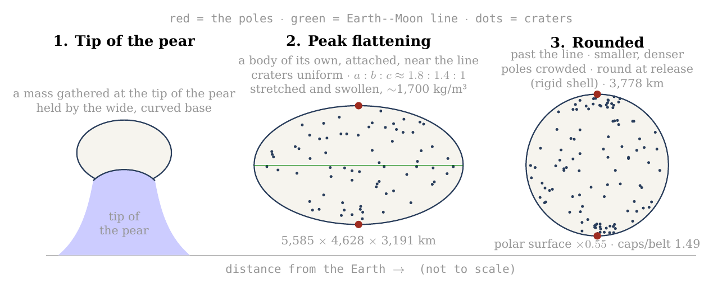
Figure 10. The Moon’s figure in three stages: a mass gathered at the tip of the pear, held by its wide, curved base; at the peak of the flattening, as it approached its 3,000-km base near the corotation line, a body of its own, still attached, stretched between the Earth’s gravity on its near side and the centrifugal pull of corotation — triaxial, , seen here from the side, with the Earth line horizontal — with craters spread uniformly over it; and round, smaller and denser, after its centre of mass had passed the line, with the craters formed on the flattened body crowded at both poles. The dots are illustrative; the numbers are those of C.1 and C.3. The diameters of the peak body (along the Earth line, along the orbit and through the poles) are computed for the figure 1.75 : 1.45 : 1 and the lunar mass at about 1,700 kg/m³ (equivalent radius about 2,180 km), the round body at 2,600 kg/m³; the claim of the paper rests on the ratio between pole and equator, which does not depend on the overall size.
What we now have: a flattened body that rounds with a decrease of volume closes up its polar surface most and its equator least; craters formed before the rounding end crowded at the poles by a factor set by the shape alone — about 1.5 to 1.2 over the counted caps, according to how near the peak they formed — and the figure that the six axes record for all craters of 20 km and more predicts the measured excess.
C.4 Gravity as the engine, and the pressure it builds
C.1 to C.3 described the rounding; this section says what drove it, how much energy it released, and what it did inside the body. The answer is that no new force is needed: at the corotation line the body stops being pressed on its base, and the body’s own gravity, growing stronger as the body compacts, rounds it — and, because the outer shell is stiff, the rounding also builds a pressure inside that escapes through the openings that already exist.
What rounds the body while it still turns with the Earth. The flattening was held out by the two opposite pulls along the Earth line — the Earth’s gravity on the near side, inward, and the centrifugal pull of corotation, outward — together with the spin, while the body was pressed on its base. Its two parts were released in two ways. The egg part, the stretch along the Earth line, was held while the body was pressed on its base; at the corotation line that press fell to zero and turned into a pull away from the base, the pressure from below dropped, and the egg part was released (C.6). The pita part, the spin flattening, was released by the body’s own gravity. Once the centre of mass had passed the line, what remained to set it was the body’s own gravity against its spin. The spin hardly changes — the Earth’s day lengthens from 5.5 to 5.77 hours — while the density rises from about 1,700 to 2,600 kg/m³ as the stretch is released and the volume decreases. The measure of the spin against the body’s own gravity, , the left side of the relation in C.1, falls from 0.28 to 0.17, and the equilibrium spin figure of C.1 falls with it, from 1.41 to 1.20. Gravity is the engine of the pita part: the same spin can no longer hold a flattened figure out against the pull of a denser body. A skater who spins with arms out and is then made heavier, without spinning faster, cannot keep her arms out as far. By release the body was round and its shell rigid (Paper 2, §B.7). After release the locked spin slows with the orbit — 14 hours at 30,000 km, 41 hours at 60,000 km — and what goes with it is only the small tidal and rotational bulge of the rigid body (C.5), not the earlier flattening.
The slope. On a flattened figure that is no longer in equilibrium the pole is the low point of the potential: the flattening that the spin held out at the lower density is more than it can carry at the higher, and the surface flows down that slope — from the equator toward the poles, along every meridian. Think of a bowl of thick honey tilted and then set level: the honey flows until its surface is flat again, with no push beyond its own weight. That flow is the rounding; there is no further force on top of it. B.4 showed the reverse while the figure was in equilibrium with the spin: in the rotating frame the pole stood about 120 km above the equator. Nothing about the gravity changed between the two states; what changed is how strong it is against the spin.
The energy. Two terms are released. The first is the change of shape: the rounding lowers the body’s gravitational energy from that of the flattened figure to that of a sphere of the same volume. For an oblate spheroid of eccentricity , such as : is the gravitational energy of the body — the work that would be needed to take it apart and carry every piece to a great distance, counted as negative because the body is bound; here is the body’s mass and the radius of the sphere of equal volume. For a sphere the factor after is ; the flattened figure carries an extra factor, slightly less than 1, which depends only on its eccentricity. The sphere is the most tightly bound shape a body can have, so the step from spheroid to sphere releases energy, as a stone lowered into a pit does. For the oblate 1.69 the difference is – J — 2.4% of the body’s binding energy, – J per kilogram (at 1,300 and at 2,600 kg/m³). For the triaxial peak figure (1.75 : 1.45 : 1, from the general expression for an ellipsoid) it is about J — 2.1% of the binding energy, about J per kilogram (– J at 1,700 and at 2,600 kg/m³). Released as heat in the viscous interior — the interior that flows slowly, like thick tar — it would warm the body by some 30 K: enough to keep a mobile interior mobile, not enough to melt a shell.
The second term is the decrease of volume. The binding energy of a sphere, , deepens as its radius falls. From about 1,700 to 2,600 kg/m³ the radius falls from about 2,180 to 1,890 km, and the energy released is J, J per kilogram — about seven times the term of shape, and enough to warm the body by about 200 °C averaged over the body (206 K at a heat capacity of 1 kJ/kg/K). A spring that is let go gives back the work that held it stretched; here the work comes back as heat and as pressure. It is a heat source and a pressure source during the rounding: it keeps the interior mobile, and it feeds the vents of Figures 11–12 together with the misfit of the shell. The rounding asks for no source beyond the flattened, stretched figure itself.
The shell resists, and the pressure escapes. The interior rounds; the outer shell, rigid enough to keep its craters (C.7), does not follow freely. A shell made to change its figure from the peak figure toward the sphere is strained — deformed, as a fraction of its length — by some ten to twenty per cent. At the stiffness of a solid shell, tens of gigapascals, that is a stress of 2 to 12 GPa, against a strength of the shell material of about 0.1 GPa: twenty to a hundred and twenty times what the shell can carry. The shell cannot hold it — and it need not break to release it: the pressure of the interior escapes through the openings that already exist, the vents of the maria (Paper 5). Picture a soft-filled flask with a stiff skin and a few holes, squeezed in the hand: the filling spurts from the holes, strongly while the squeeze is hard and more weakly as it eases. Material is thrown out through the vents and falls back on the shell as craters (Paper 6) — returning material that lands on the surface. The pressure is greatest when the figure is flattest and falls as the body rounds: early, strong ejection and large craters; late, weak ejection and small ones (Figures 11–12). The craters formed later are therefore smaller, because the pressure that threw out their material had already fallen. This is the physical reason why the size of a crater is a clock (C.5, D.2): the largest craters formed when the body was flattest, and they underwent the most rounding afterwards — which is why the crowding at the poles rises with crater size.
Figure 11 shows the mechanism in section: the rigid shell, the soft interior pressing on it, and the vents through which the pressure escapes, at three moments of the rounding.
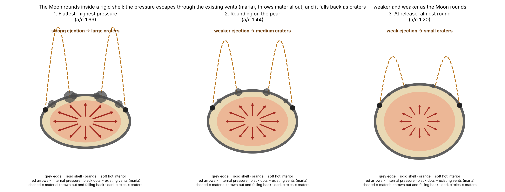
Figure 12 gives the same sequence as a curve. The pressure is taken to follow the misfit between the polar surface the shell still has and the one the interior would take as a sphere, — the fraction by which the polar surface must still shrink. The curve is drawn on the oblate scale of an earlier version; the triaxial peak changes its values, not its order, and the compaction heat above adds a second source that may carry part of the vents’ pressure. It is largest at the peak flattening and falls to zero for the sphere. Beside each stage stand the crater sizes whose clean polar crowding points to that stage: the largest craters to the flattest moment, the smaller ones to later moments.
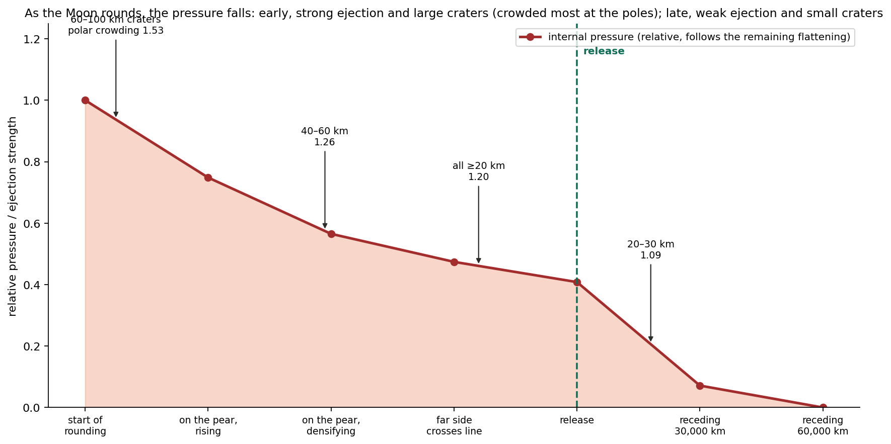
Where it stops. Once the body is a sphere its surface is an equipotential, there is no slope, the misfit is gone and the pressure with it, and the flow stops. The contraction of the polar surface is the form the rounding takes, and the pole is the point the contraction converges on because the axis of the spin passes through it (C.3).
What we now have: two releases — the press on the base, lost at the corotation line, for the egg part, and the body’s own gravity, growing as the body compacts, for the pita part — which round the body, release a modest heat from the change of shape and a larger one from the decrease of volume, and drive out through the maria a pressure that falls as the rounding proceeds — large craters near the peak, small ones late.
C.5 The stretch in time: when it began, when it was greatest, how it faded, and when the sphere was complete
Sections C.1–C.4 gave the shapes and the engine; this section puts them on a time line. The question it answers is simple: at each moment of the attached stage, how hard was the Earth pulling the body out of shape, what held it together, and how flattened was it? The answers fix when the craters formed on which figure, and therefore how much crowding each of them should carry today.
Before release — greater than a free body could bear. The Earth pulls harder on the near side of the body than on its far side; that difference is the tide, and it tries to stretch the body along the Earth line. The body’s own gravity tries to hold it together. The measure of the tide against the body’s own gravity used in this paper is where is the distance between the centres and the body’s density. The two forms are the same number: is the square of the angular speed of a circular orbit at distance , so the numerator measures the Earth’s pull at that distance, and measures the pull of a body of density on itself. Two things follow from the second form. The size of the body does not enter — only its distance and its density; and the tide falls steeply with distance, as , so a modest move outward lowers it a great deal, while compaction (a larger ) lowers it further.
A free fluid body — one with no strength and nothing attached to it — holds an equilibrium figure only while . That threshold is the Roche limit: the distance inside which the tide exceeds what self-gravity can hold, so that a free fluid body is drawn out and torn apart. A rigid body, which resists deformation, can hold itself closer in; its limit, the rigid Roche limit, lies at 12,994 km for a density of 1,300 kg/m³. Inside these limits the body survives only if something else holds it. Along the attached stages:
| Stage | (km) | Free fluid figure? | |
|---|---|---|---|
| A mass gathered at the tip of the pear (stage 2), at 1,300 | 8,991 | 2.01 | no — held by the base |
| A body of its own, still attached and flattening (rigid Roche), at 1,300 | 12,994 | 0.67 | no — held by the base; the greatest load once the body holds itself |
| Far side crosses the corotation line, in the flattening, at 1,500 | 14,100 | 0.45 | no — held by the base |
| Approaching the line on the 3,000-km base, at 1,700 — the peak of the flattening | 16,400 | 0.25 | no — held by the base |
| Centre of mass at the line: the body rounds and begins to separate; release about 210 km beyond it (5.77 h), at 2,600; round () | 16,400 | 0.17 | no — held by its rigid shell |
| Release at 22.5°, at 2,600 | 17,287 | 0.14 | no — held by its rigid shell |
| A free fluid figure at 2,600, beyond the fluid limit (about 20,000 km; not reached before release) | 20,595 | 0.084 | yes — a fluid body could hold itself here |
| The 19,660 branch, at 2,600 | 19,660 | 0.096 | no (Paper 4 rejects this branch for the same reason) |
The table reads from top to bottom as the body moves outward. Look at the third column: falls from 2.01 to 0.17 along the attached stage, but it never reaches the fluid threshold of 0.09 before release. Every row above the release row says “held by the base”; from release on, the body is held by its own rigid shell. Only beyond the fluid Roche limit, about 20,000 km (19,971 km, Paper 2; at about 20,100 km), would a fluid body of 2,600 kg/m³ hold itself — at 20,595 km, for example (an earlier version took 20,595 km as the first such distance); the 19,660-km branch, which lies inside the fluid Roche limit for that density, has no fluid figure, and Paper 4 rejects it for that reason.
The load on the base is therefore greatest once there is a body of its own to load — at the rigid Roche limit, 12,994 km — seven times what a free fluid body could bear ( against ). Before the flattening the mass was still the tip of the pear, and the Earth set its shape; during the flattening it became a body of its own, flattened and still attached. The body is not torn because it sits on a base 6,000 km wide, which carries what its own gravity cannot; Paper 3 required a broad connection for the radial balance, and here it is required against the tide as well. As the body flattens and moves outward its base narrows from 6,000 to 3,000 km, and the load falls with distance ( from 0.67 to 0.17); when the body has compacted to 2,600 kg/m³ its rigid shell carries the rest. It begins to separate as its centre of mass reaches the corotation line — the distance at which a free orbit takes exactly as long as one turn of the Earth, about 16,400 km on the equator (16,399 km at a 5.77-hour day), 17,287 km at 22.5° ( and ) — and is released about 210 km beyond it, before a fluid body of that density could hold itself (beyond about 20,000 km, ); that is why the body must be rigid at release (Paper 2, §B.7). The two conditions meet: the tide calculation here and the release calculation of Paper 2 ask for the same rigid body, by different routes.
From the tip of the pear to the sphere. The sequence has four moments. First, a sialic mass gathered at the tip of the pear — still the tip of the pear — and began to come out and flatten, attached on a base 6,000 km wide. Second, between the 6,000-km and the 3,000-km base it flattened and moved outward, taking a shape and a body of its own, separate from the pear but flattened; from the rigid Roche limit for 1,300 kg/m³, near 13,000 km, it held a figure of its own. The flattening arose as the pear reached corotation, because the two sides of the body were pulled in opposite directions: the Earth’s gravity pulled the near side inward, and the centrifugal effect of corotation pulled the body outward. It was most flattened as it approached the 3,000-km base, near the line; its figure was then triaxial, about 1.8 : 1.4 : 1 — long toward the Earth, intermediate along the orbit, short at the poles — and the stretched body was swollen, near 1,700 kg/m³ (C.1). Third, within the 3,000-km stage, once its centre of mass had passed the corotation line, the net pull that pressed it on its base fell to zero and the egg part of the figure was released (C.6): corotation let it round and part. It rounded with a decrease of volume, the stretch let go and the body smaller and denser. The spin hardly changed (the Earth’s day lengthened only from 5.5 to 5.77 hours, and with it the corotation line moved out from 15,818 to 16,399 km), but a denser body pulls itself together more strongly, and the same spin can hold out less of a bulge; late in the rounding the axis ratio is about 1.20, and about three-quarters of the flattening is gone. The rest goes before the body leaves: the inward rounding is completed while the body is still attached. Had the pear not lengthened to carry the body to the line, the mass would have returned. Fourth, at release, about 210 km beyond the line, the body is round — an axis ratio of at most 1.04 — and its outer shell is rigid (Paper 2, §B.7). What happens after release is a separate and much smaller matter: the locked Moon spins once per orbit, and as it recedes its spin slows — 14 hours at 30,000 km, 41 hours at 60,000 km — and the small rotational and tidal bulge that any rigid spinning body carries shrinks with it. The figure shows the two diameters along the way.
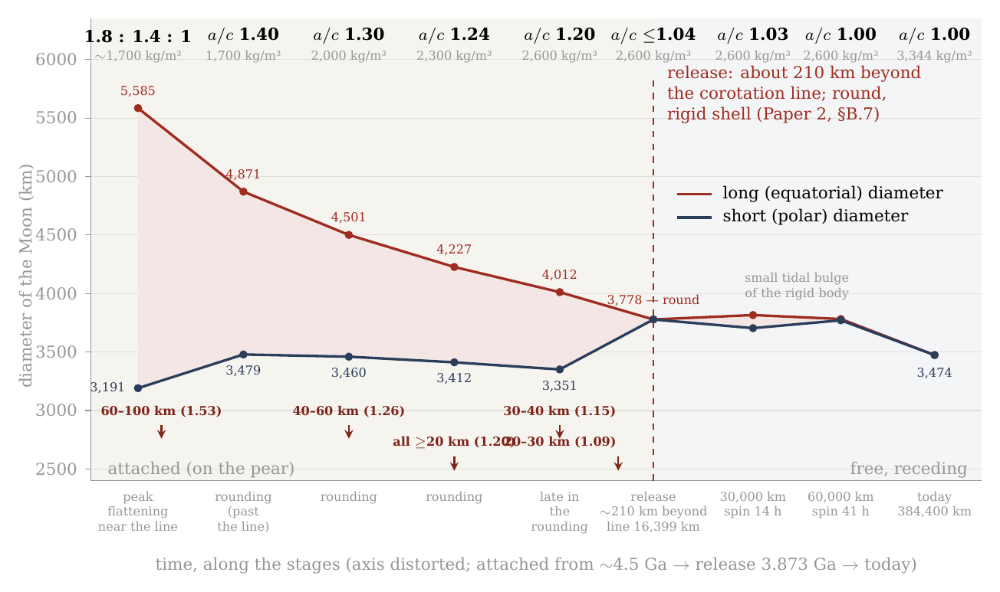
Figure 13. The Moon’s long and short (polar) diameters from the peak of the flattening to today, against time (axis distorted, early stages stretched). The flattening grew before the first point, as the body came out on the tip of the pear and moved outward; it is not drawn. The gap between the two curves is the flattening: widest at its peak, as the body approached its 3,000-km base near the corotation line (1.8 : 1.4 : 1, at about 1,700 kg/m³; the long diameter is the Earth line, and the intermediate, along the orbit, 4,628 km, is not drawn), narrowing in the rounding after the centre of mass passed the line — first as the egg part is released (1.40), then with the densification — to about 1.20, and closed at release, about 210 km beyond the corotation line (the line at 16,399 km on the equator, 17,287 km at 22.5°), when the body is round inside its rigid shell (). After release only the small tidal bulge of the rigid body remains (1.03 at 30,000 km, spin 14 h; 1.00 at 60,000 km, spin 41 h). The arrows mark the crater sizes whose clean polar crowding (D.2) points to each stage: the large craters near the peak, the small ones late in the rounding, before release. Diameters from the volume of the lunar mass at the density of the sequence assigned to each stage and the figure of the stage (C.1; at the peak, 1.75 : 1.45 : 1); both curves come down because the volume decreases as the stretch is released — the equivalent diameter falls from about 4,350 km at the peak to 3,778 km at release; the pole-to-equator ratio, which the paper tests, does not depend on the overall size. (An earlier version of this figure drew the body still flattened, 1.20, at release.)
Why the large craters are crowded most. A crater keeps the crowding of the rounding that happened after it formed. The reason is geometric: the inward rounding shrinks the polar surface and gathers whatever lies on it, so a crater that was already present when the rounding began is carried through all of it, while a crater that arrived halfway is carried through only the second half. A crater formed at the peak, on the figure 1.8 : 1.4 : 1, undergoes the whole rounding and ends about 1.5 times denser at the poles; a crater formed late in the rounding, on a body of 1.20, undergoes only the last part and ends about 1.17; a crater formed after the Moon was round — after release, as it receded — is not crowded at all. The flattest moment was also the moment of greatest internal pressure, when material was thrown out and fell back most vigorously, and most of the large craters formed then (Paper 6). Material was thrown out during the flattening and before it, so craters were also recorded while the body was still flattening; they were carried by the rounding that followed, and the crowding they carry records how flat the body was when they formed. This is why the polar crowding records the flattening. A larger, more crowded crater formed nearer the peak — not necessarily earlier, for a figure of a given flatness was passed on the way up as well as on the way down. The size of a crater is therefore a clock of the figure: the larger, the nearer the peak it formed, the more crowded. This is the order the clean count shows, with the ratio rising from 1.09 for the smallest size class to 1.53 for craters of 60–100 km (D.2).
The poles through the three stages. The poles are older than the flattening. They were formed in the outward rounding, when the body seated on the tip of the pear became a ball and its spin axis was set (Paper 3, §B.4); the craters already on the shell then changed with the surface, alike everywhere, and new ones kept arriving. In the flattening the poles strengthened: the differentiation had advanced, the material thrown out was light and full of water, the largest craters formed, and new material fell on the poles as on the rest of the body. In the inward rounding, after the centre of mass had passed the corotation line, as the flattening relaxed, the surface closed most at the poles and least at the equator, and the craters on it — which kept their size (§D.5) — were gathered at the poles; craters recorded during the flattening contracted with the rounding. The order is the one the size clock reads: the largest, formed nearest the peak of the flattening, crowded most; the small, formed late, crowded least. The three stages are thus outward rounding (the poles are set), flattening (the large craters form), and inward rounding (the craters are gathered toward the poles).
Where the month is born. At release the Moon’s orbit takes a little more than 5.77 hours: the month is born almost equal to the day, slightly longer, for the Moon begins to separate at the corotation line, where its orbit and the Earth’s turn take the same time (6.25 hours at 17,287 km, at 22.5°), and is released about 210 km beyond it, on a slightly elongated orbit (eccentricity about 0.037, Paper 4). From there it lengthens with the distance, by Kepler’s law alone — the period of an orbit grows as the distance to the power three halves: 14 hours at 30,000 km, 3.7 days at 16 Earth radii, and today 27.3 days (Figure 14). No extra assumption enters this curve; once the release point is fixed, the month at each later distance follows from the law of gravity.
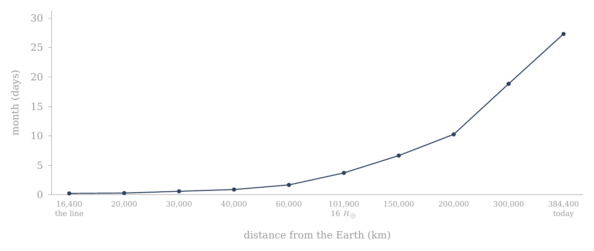
Figure 14. Where the month is born: the Moon’s orbital period — the month — against its distance from the Earth, from 5.77 hours at release (equal to the Earth’s day of that time; the curve starts at the corotation line, 16,400 km, and the release lies about 210 km beyond it) to 27.3 days today, by Kepler’s law (, , where is the distance between the centres, the Earth’s mass and the Moon’s). The curve starts almost flat — a month of hours — and rises steeply only far out.
One rounding. Paper 1 (step 5) has the attached body round on the pear; this section sets out its stages. It begins after the flattening, within the 3,000-km stage, once the body’s centre of mass has passed the corotation line; it runs as the body densifies; it is about three-quarters complete late in the rounding, at an axis ratio near 1.20; and it is complete by release, about 210 km beyond the line, when the body leaves round, inside a rigid shell. The attached stage was long, and so was each of its parts. In the model the bulge began about 600 million years before release at 3.873 billion years ago — that is, near 4.5 billion years ago: some 400 million years for the bulge and the pear, about 100 million years of flattening, and about 100 million years from the end of the flattening to release, the time of the inward rounding. So the rounding was never short of time: its pace was set by the release of the press on the base at the line and by the densification, not by the relaxation of the material (C.7).
When the sphere was complete. Late in the rounding the axis ratio was about 1.20; by release the inward rounding was complete, and the body was round, its shell rigid (an axis ratio of at most 1.04; Paper 2, §B.7). After release one small effect remains, and it should not be confused with the flattening of the attached stage. A rigid body that spins and orbits close to a planet carries a small rotational and tidal bulge, set by its spin and its distance. The locked Moon’s spin followed its orbit — 14 hours at 30,000 km, 41 hours at 60,000 km — and this small bulge of the rigid body followed the spin: 1.03, then 1.00. By some 60,000 km, under ten Earth radii and well inside the 16 Earth radii by which Paper 4 has the figure fixed, even that bulge was gone and the Moon was round in every measure. The small fossil bulge it carries today (, against about 0.44 at the peak) says the same: the flattening of the attached stage is gone, and only a trace four hundred times smaller remains.
What we now have: a time line in which the load on the base is greatest once the body holds itself (12,994 km, ); the body flattens as it moves outward on a narrowing base and is flattest as it approaches the 3,000-km base near the line (about 1.8 : 1.4 : 1, near 1,700 kg/m³); it rounds after its centre of mass passes the line, with a decrease of volume, reaching about 1.20 late in the rounding; and it leaves round, held by a rigid shell, about 210 km beyond the line.
C.6 The wide base: what it carried, and where it let go
C.5 showed that the tide on the attached body was always more than a free fluid body could bear. This section asks what carried the difference, how that load changed along the way — first for the body as a whole, then point by point on its surface — and why the support let go when it did.
(a) For the body as a whole. The Moon separated from a wide base, and the tide is the reason the base had to be wide. At every attached stage the Earth’s tide on the body exceeded what its own gravity could hold: once the body held itself, at 12,994 km, by a factor of seven ( against the 0.09 a free fluid body can bear). A free body would have been torn there; this one was not, because it sat on a base 6,000 km wide that carried the tidal load in its place. A drop hanging from the tip of a syringe is a fair picture of the load: the drop stays whole while the tip holds it. How the body parted from the base is set out at the end of this section. Paper 3 required a broad connection for another reason — the radial balance of pressure, resistance and load (§A.3) — and here it is required against the tide as well.
The base narrowed from 6,000 to 3,000 km as the body flattened and moved outward, taking a shape and a body of its own; the load on it fell with distance (: a modest move outward cuts it sharply). The stages — the mass at the tip of the pear, the flattening on the narrowing base, the crossing of the corotation line, the rounding, release and recession — are set out in the table of the stages of detachment at the head of the paper.
The load and the width along the way are given in the next table. Read it as a pair of falling columns: as the distance grows the load falls, and the base narrows as the body flattens and moves outward, until at release the base lets go.
| Distance (km) | Stage | Density | = tide / self-gravity | Width of the base (km) |
|---|---|---|---|---|
| 8,991 | a mass gathered at the tip of the pear | 1,300 | 2.01 | 6,000 |
| 12,994 | a body of its own, flattening (rigid Roche at 1,300) | 1,300 | 0.67 — the greatest load after self-holding | 6,000 |
| 14,100 | far side crosses the corotation line; flattening, base narrowing | 1,500 | 0.45 | 4,000 (interpolated) |
| 16,400 | approaching the line on the 3,000-km base; peak flattening | 1,700 | 0.25 | 3,000 |
| 16,400 | centre of mass on the corotation line — the body rounds and separation begins; release about 210 km beyond; body round () | 2,600 | 0.17 | 3,000 0 |
| (20,100) | (fluid limit at 2,600, — not reached; an earlier version gave 20,600 and 0.084) | 2,600 | 0.09 | — |
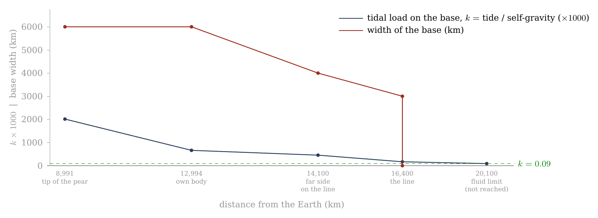
Figure 15. The wide base: the tidal load it carried (, navy, scaled ) and its width (red) against distance from the Earth. The load is greatest once the body holds a figure of its own (12,994 km) and falls with distance; the base narrows from 6,000 to 3,000 km as the body flattens and moves outward, and lets go at release: separation begins when the Moon’s centre reaches the corotation line (16,400 km), and the body is released about 210 km beyond it. The fluid threshold (dashed) is reached only near 20,100 km (an earlier version gave 20,600), beyond release: the released body was held by its rigid shell. End points from Paper 3 (base 6,000 km on the tip of the pear, 3,000 km at the last contact) and Paper 2 (density 2,600 at release); the points between are interpolated.
The same story can be told in accelerations, which shows the two sides of the balance separately. The body’s own gravity at its surface rose as it compacted at constant mass — the same mass in a smaller ball pulls harder at its surface: 0.87 m/s² as foam, 0.95 at about 1,500 kg/m³, 1.37 at release, 1.62 today. The tide on it fell continuously with distance, from three times the self-gravity at the tip of the pear to a quarter of it at release. Up to release the base, and then the rigid shell, carried the difference; a fluid body would have needed the ratio below about 0.135, which is reached only near 20,100 km (an earlier version gave 20,600).
| Stage | (km) | Density | (km) | Self-gravity (m/s²) | Tide across the body | Tide / self-gravity |
|---|---|---|---|---|---|---|
| Tip of the pear | 8,991 | 1,300 | 2,381 | 0.87 | 2.61 | 3.0 |
| Own body (rigid Roche) | 12,994 | 1,300 | 2,381 | 0.87 | 0.87 | 1.0 |
| Far side on the line | 14,100 | 1,500 | 2,269 | 0.95 | 0.64 | 0.67 |
| Release | 16,400 | 2,600 | 1,889 | 1.37 | 0.34 | 0.25 |
| 16 | 101,900 | 2,600 | 1,889 | 1.37 | 0.001 | 0.001 |
| Today | 384,400 | 3,344 | 1,738 | 1.62 | 0.00002 | 0 |
The columns are, in order: where the body was, how dense it was, its radius (shrinking as it compacts), the gravity at its own surface, the tidal acceleration across it (the difference between the Earth’s pull at its near surface and at its centre), and the ratio of the two. The two right-hand columns cross at the rigid Roche limit, where the body first holds a figure of its own and the tide across it equals its self-gravity (ratio 1.0); before that the tide wins, after it the body’s gravity wins, and by 16 Earth radii the tide is negligible.
Two measures of the same tide. The of C.5 and the last column of this table are not the same number, and the difference is one of definition, not of physics. is the measure defined in C.5, the one against which the fluid threshold of 0.09 is stated. The last column here is the direct ratio of two accelerations: the tidal stretch across the body, , divided by the self-gravity at its surface, . Dividing one by the other, the radius cancels and the ratio is — one and a half times . So the two columns move together at every stage: at the rigid Roche limit corresponds to a ratio of 1.0; at the tip of the pear to 3.0; at release to 0.25; and the fluid threshold is the same threshold as the ratio of about 0.135 used here and in Figure 16. Where the first table and Figure 15 label “tide / self-gravity”, they mean the measure of C.5.
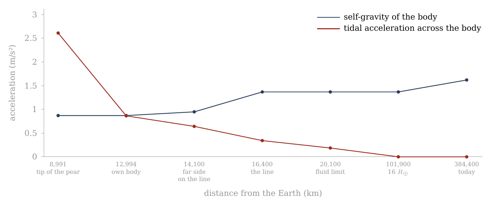
Figure 16. Self-gravity against the tide, from the mass at the tip of the pear to today. The body’s own gravity (navy) rises as it compacts at constant mass — 0.87 m/s² as foam, 1.37 at 2,600 kg/m³ at release, 1.62 today at 3,344; the tidal acceleration across it (red) falls with distance, from three times the self-gravity at the tip of the pear to a quarter of it at release (about 210 km beyond the line at 16,400 km), and below the fluid threshold (0.135, the threshold of C.5 expressed as this ratio) only near 20,100 km, beyond release (an earlier version gave 20,600). The two curves cross at the rigid Roche limit, where the body first holds a figure of its own: 1,300 kg/m³, 12,994 km (10,314 km at 2,600, Paper 2). The densities between 1,300 and 2,600 are stages of the sequence.
(b) By place on the body. On a body turning with the Earth the effective gravity — what a loose grain on the surface actually feels, its own body’s pull together with the tide and the spin — is not one number. It depends on where the grain stands. At the poles it is the self-gravity plus the tide’s compression (): across the Earth line the tide squeezes the body inward, adding to its own pull. At the sides, along the axis of motion, it is the self-gravity alone, the centrifugal term cancelling the tide there. And at the two ends of the tidal axis — the points facing the Earth and facing away from it — it is the self-gravity less the stretch (), for there the tide and the outward fling of the spin act together against the body’s pull. Here is the angular speed of the turn and the body’s radius. When the body first holds itself, at 12,994 km, the ends are negative — material there would be drawn outward without the base — and the poles carry half as much again as the sides. That is why the base was needed along the tidal axis in particular, and why the poles were pressed. By release the spread has narrowed: 1.54 m/s² at the poles, 1.37 at the sides, 0.86 at the ends — every point held by its own gravity, the ends at well under its full value. Today, at 384,400 km, the differences are gone: 1.62 everywhere.
| Stage | (km) | Poles | Sides (axis of motion) | Ends of the tidal axis |
|---|---|---|---|---|
| Own body (rigid Roche) | 12,994 | 1.30 | 0.87 | |
| Far side on the line | 14,100 | 1.27 | 0.95 | |
| Release | 16,400 | 1.54 | 1.37 | 0.86 |
| Today | 384,400 | 1.62 | 1.62 | 1.62 |
Read the table across each row: the three numbers spread widely when the body first holds itself, close in by release, and are equal today. The negative value in the first row is the point of the table: without the base, the near and far ends of the young body would have lifted off.
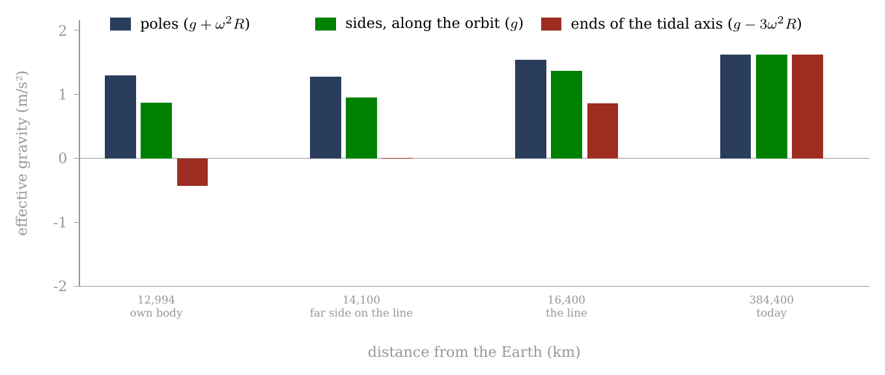
Figure 17. Effective gravity by place on the body turning with the Earth — poles, sides, and the two ends of the tidal axis — from the moment the body first holds a figure of its own to today. At 12,994 km the ends are negative (the red bar hangs below the zero line): material there would be drawn outward without the base; the poles carry half as much again. Where the far side crosses the line (about 14,100 km, at a stage density of about 1,500 kg/m³) the ends stand near zero. By release the spread has narrowed, and today, at 384,400 km, it is gone: 1.62 m/s² everywhere.
How the body parted from the base. The base worked hardest when it was widest. When the Moon’s centre of mass reached the corotation line, the body began to round and to separate — the release of Papers 2 and 4 — and by then the shell was rigid and the base no longer needed. Three things came together at that moment. Inside the corotation line a body turning with the Earth moves too slowly for a free orbit: the Earth’s gravity pulls it down more than its turn throws it out, the body is pressed on its base, and the base presses back from below — the radial balance of Paper 3. At the line the two are equal, and that press falls to zero; beyond it, it turns into a pull away from the base. The tidal load had meanwhile fallen to , a load the rigid shell carries by itself. And the contact had already narrowed to 3,000 km. With nothing left for the base to carry, the contact resisted only a little: the body was pulled outward with force and was released about 210 km beyond the line, when a little more than half of it (about 58%) had crossed (Paper 4). At detachment the Earth’s pressure, which had passed through the pear into the Moon, stopped reaching it, and with it the ejections.
The press from below, in numbers. The table follows the net pull on the body — the Earth’s gravity less the centrifugal pull of the turn, at the body’s centre — over the last thousand kilometres before the line and on to release. Multiplied by the body’s mass and divided by the area of the 3,000-km base, it gives the load with which the body pressed on its base; this load does not depend on the body’s density. Beside it stands the stretch: the difference between the pull on the near side and on the far side, at the surface, with , and the load it puts across the body’s mid-plane. The navy cells deepen with the press on the base; the red cells mark the pull away from it.
| Centre against the line (km) | Net pull at the centre (m/s², + inward) | Load on the base (GPa) | Stretch at the surface (m/s²) | Stretch across the mid-plane (GPa) | Net pull, near / far end (m/s²) |
|---|---|---|---|---|---|
| 0.293 | 3.04 press | 0.585 | 1.14 | 0.97 / | |
| 0.216 | 2.24 | 0.566 | 1.10 | 0.87 / | |
| 0.142 | 1.47 | 0.548 | 1.07 | 0.77 / | |
| 0.070 | 0.72 | 0.530 | 1.03 | 0.68 / | |
| 0.028 | 0.29 | 0.521 | 1.01 | 0.62 / | |
| 0, the line | 0 | 0 | 0.514 | 1.00 | 0.59 / |
| 0.508 | 0.99 | 0.55 / | |||
| , release | pull-off | 0.502 | 0.98 | 0.52 / |
The line is taken at 16,398 km (5.77 h, with the two-body correction); the base is 3,000 km wide, an area of m²; the stretch is computed for the body at release, 2,600 kg/m³ and radius 1,889 km. Read the two halves of the table against each other. The press on the base falls from about 3.0 GPa a thousand kilometres before the line to zero at the line, and turns into a pull-off of 0.6 GPa at release: a change of 3.6 GPa. Over the same span the load of the stretch changes by 0.16 GPa, twenty-two times less; the stretch is 14% weaker over the whole span and only 2.5% weaker from the line to release. For scale: the body’s own gravity binds its two halves with about 2.7 GPa over the area of the base; the shell’s strength is about 0.1 GPa; and holding the peak figure out of round takes a stress of the order of , about 2 GPa for 1.75 : 1.45 : 1 at 1,700 kg/m³ (1.5 GPa at 1,300, 3.7 GPa at 2,600).
In the terms of the model: inside the line the Earth pulls the whole body down harder than the spin throws it out, so the body is pressed onto its base and the base presses back from below, and that press is of the size that holding the flattened figure requires. As the body passes the corotation line there is less to hold it to the Earth: the press falls to zero and becomes a pull-off, the pressure from below drops, and the Moon is released. The stretch — the near side pulled in, the far side pulled out — barely changes. In magnitude, therefore, the loss of the press from below is a sufficient release for the egg part of the figure, and the weakening of the stretch is not. The press is symmetric about the Earth line, so it holds the egg part and not the pita part, which the densification releases (C.4). How the press held the shape in detail is not computed here; it is a requirement of the model (E.3). The stretch that remains beyond the line still acts toward an egg, and out to about 20,100 km it exceeds what a fluid body of 2,600 kg/m³ could bear: the shell resists it — the same rigid shell that keeps the figure at or below 1.04 at release (C.1).
The cork. We propose that the detachment of the Moon uncovered the openings of the pear. While the Moon sat on the tip of the pear it closed the pear’s openings, as a cork closes a bottle; when it came away the cork came out, and the pressure in the pear was released. With the pressure gone nothing lengthened the pear any more. This explains why the pear returned after the detachment instead of going on stretching, why it did not release a second moon, and the scattering of material in all directions over the Moon, as the Earth released its pressure without its cork.
C.7What the crust must have been
C.5 and C.6 described what the body went through; this section asks what it had to be made of to go through it and still carry the record we count today. Two demands pull in opposite directions. The body had to be soft enough to round — to give up a flattening of about 1.8 : 1.4 : 1 while still attached. And its surface had to be stiff enough to keep its craters whole, with their rims and their diameters, through that same change. The answer is that the two demands belong to two different layers.
The rounding came late, after the flattening, near the corotation line, and the attached stage was long: in the model about 600 million years passed from the start of the bulge to release at 3.873 billion years ago — the Moon was attached from about 4.5 billion years ago — of which the flattening took about 100 million years and the inward rounding, from the end of the flattening to release, about another 100 million. The question is therefore not whether the body had time to round, but how its two layers took the change.
How fast a body can change its shape is set by its viscosity — its resistance to flow, measured in pascal-seconds (Pa s). The Earth’s mantle, which flows only over thousands of years, is about . The relaxation time of a self-gravitating body is the time it takes to settle into the figure its gravity and spin demand after that figure has changed. To order of magnitude it is for a viscosity , density , radius and surface gravity . In words: the stiffer the material, the slower it settles; the stronger the gravity driving it and the larger the body, the faster. For the body at release ( kg/m³, km, m/s²):
| Viscosity (Pa s) | Relaxation time | Against an attached stage of years |
|---|---|---|
| (the Earth’s mantle today) | 4,700 yr | follows the densification at once |
| 47,000 yr | follows at once | |
| (the shell of Paper 3) | 470,000 yr | follows, with a short lag |
| 4.7 Myr | follows, lagging by a few Myr | |
| 47 Myr | barely keeps up |
Each tenfold rise in viscosity makes the relaxation ten times slower. Compare the middle column with the length of the stage: the attached stage lasted some 600 million years, and the inward rounding alone about 100 million. Every viscosity up to Pa s settles in a small fraction of that time and follows the densification closely; at the settling takes about half the time of the inward rounding, and the figure only just keeps pace.
Two layers. Paper 3 requires the outer shell to have a viscosity of Pa s or more, so that the craters struck into it on the Earth survive; and it describes the body beneath as hot and mobile. The two numbers belong to two layers, and the rounding is the work of the second. A body of – Pa s follows its equilibrium figure within – years of any change. The shell rides on it: too stiff to flow, it must fit a surface that is closing up beneath it, most at the poles and least at the equator. At the poles it shortens most — folds, thrusts, thickens — and the craters on it, sitting on stiff plates, keep their shape while the spaces between them close; toward the equator it shortens less, and the craters there are drawn only slightly closer. The shell does not flow at that pace: it is carried, and the strain it cannot take as flow it takes as shortening, strongest at the poles and weakest at the equator — and, where it resists, as pressure on the interior that escapes through the vents (C.4). The picture is that of a crust of ice plates on a pond whose water level falls unevenly: the water settles at once, and the plates, too stiff to bend, crowd together most where the surface shrinks most.
This is why the record is legible. A shell as soft as the body would have deformed continuously, and a crater strained by a third while flowing loses its rim; a shell stiffer than the body deforms by shortening where the body’s surface shrinks, and packs whole craters closer without erasing them — and without shrinking them: the craters keep their diameters, and the contraction is taken up in the spaces between them (D.2). The polar craters are crowded and whole because the shell was stiff and the body beneath it was not.
What survives the strain. A crater on a stiff plate is not strained at all: the shortening of the polar surface — about a third against the belt, and nearly half of its area at the pole itself — spread over tens of millions of years (the inward rounding lasted about 100 million), goes into the joints between the plates. Erasure requires local flow fast against that rate by orders of magnitude, or a surface that melts. Neither is part of the rounding.
The requirement. The interior must have been able to follow the densification — a relaxation time short against the attached stage, a viscosity below about Pa s, which a hot, partly molten interior meets by orders of magnitude — under a shell stiff enough to keep its craters whole and at their size. In short: rigid enough at the surface to keep its craters, soft enough beneath to round. The two-layer picture leaves a mark to look for: shortening structures concentrated toward the poles and fewer toward the equator, with no extensional belt at the equator, on the highlands and the far side where the maria’s own ridges do not confuse the count (E.3).
Where the closed-up surface went. The decrease of volume adds a second requirement. From a peak near 1,700 kg/m³ the mean surface of the body falls by a quarter, and at the pole by nearly half (C.3). A shell that kept its own volume would thicken by about a third overall, and about 1.5 times more in the polar caps than in the belt. The model requires that the shell took up the closed-up surface — by shortening and thrusting, and in part by passing material to the interior — in a way that leaves the polar crust no thicker than the belt, as GRAIL measures it (C.3). How it did so is not computed here; it is listed in E.3.
Tests
Part C proposed a mechanism: craters formed evenly over a flattened young Moon, the body rounded while it was still attached and turning with the Earth, and the rounding contracted the polar surface most, closing the spaces between the craters there. This Part sets the mechanism against the crater record in a series of tests. Each test is set out in the same order: what is compared with what, and why the two sides are alike in everything except the thing under test; what the model predicts, with the pass line fixed in advance; what was measured; and the result.
The mechanism of Part C is stated as four tests (D.1–D.4), with a fifth (D.5) that puts its central assumption — that the craters kept their size — to the data directly. The thresholds were fixed before the counts; all four were computed on the catalogue and on the age samples after the mechanism was stated, so that the pass lines could not be fitted to the answer. The first run counted the whole catalogue; when the maria were found to lower the equatorial density, the density test was rerun cleanly, with the maria and South Pole–Aitken removed on both sides (A.11), and it is the clean count that is reported. “On both sides” is the rule of every comparison in this Part: whatever terrain is taken out of the polar caps is taken out of the equatorial belt by the same rule, so that the two regions differ only in latitude.
Every measured ratio is given with its 95% interval, except the clean density ratios written with (D.1, D.2), where the figure after is one counting standard deviation and the 95% interval is about twice as wide. The 95% interval is a range built so that, if the whole measurement were repeated many times, it would hold the true value in 95 of every 100 repetitions. A ratio whose interval does not include 1 is a difference beyond chance. Two methods are used. For ratios of counts, the interval is the exact (Clopper–Pearson) interval of the binomial split between the two regions, scaled by their areas: of all the craters counted in the two regions together, a certain share falls in the caps; the exact interval of that share, the one a coin-tossing calculation gives without approximation, is converted into a ratio of densities by dividing by the ratio of the two areas. For ratios of medians, the interval is a bootstrap of 20,000 resamplings: the craters of each region are drawn again at random, with replacement, 20,000 times, the ratio is recomputed each time, and the middle 95% of the results is the interval. The bootstrap needs no assumption about the shape of the size distribution; it lets the data show how much the median would scatter from sample to sample.
The table gathers the five tests; the sections that follow take them one at a time. The column “Pass line” gives the threshold fixed before the count.
| Test | Prediction | Pass line | Measured (95% interval) | Result |
|---|---|---|---|---|
| D.1 Density ratio | about 1.2–1.5, rising the nearer the peak the craters formed; 1.21 for all km | 1.1–1.6 | 1.20 0.05 at km (clean; 95%: 1.10–1.30) | passes |
| D.2 Diameters | craters keep their size; the polar population richer in large craters | polar median | 1.06 (1.01–1.12) at 20 km, clean | passes |
| D.3 Young craters | no polar excess | 0.92 (0.39–2.04); 1.12 (0.60–2.03) | consistent; not yet decisive | |
| D.4 North and south | the two poles alike | no unexplained difference | south/north 1.02 (0.78–1.32) at 15° | passes |
| D.5 Crater size | craters kept their size | size kept in the size tests | largest per area 1.16 (1.04–1.29); old/fresh 1.02 (0.89–1.16) | passes (4 of 5) |
Four of the five pass outright; the young craters agree with the model but are too few to decide, and D.3 says what sample would decide them.
D.1 The density ratio
What is compared. The number of craters per unit area in the two polar caps against the same number in the equatorial belt. A cap of 30° is the region within 30° of a pole, that is, at latitude 60° and more, north and south; the belt is the band within 15° of the equator, . The two regions are counted from the same catalogue, at the same diameter threshold, with the same terrain removed from both (A.11). This is the first test because it is the observation the paper set out to explain: if the clean ratio were 1, there would be nothing for the mechanism to do.
Prediction. Pole-to-equator crater density, caps of 30° against the belt : between about 1.2 and 1.5, depending on how near the peak the craters formed (C.3, C.5). A crater that formed at the peak of the flattening was carried through the whole of the rounding and received the full crowding, about 1.5; one that formed late in the rounding, on a body already nearly round, received little of it. For all craters of 20 km and more, most of which are small and formed late, a value near 1.2 — 1.21 for the figure that their own six axes record (A.9, C.3). Pass (fixed before the count): a clean ratio clearly above 1 and below about 1.6.
The count, done cleanly. The first counts of this paper (Part A) include the maria. The maria are poor in craters and lie mostly near the equator, so they lower the equatorial density and inflate the ratio: with the maria the ratio is 1.32. A mare is an opening over a feed dome that stayed hot until detachment and froze smooth after it; the craters that stood on it were melted, and its floor is younger than the old craters. The LROC mask removed here also includes the basalt plains, crust melted by the Earth’s general heat, whose record was reset in the same way. Counted in the belt, these floors add area without adding old craters, and the belt looks emptier than its old crust is. That is a difference of terrain, not of latitude, and it must leave the comparison. The clean count removes the maria on both sides, and removes South Pole–Aitken, which erased the craters of a quarter of the polar caps (A.10, A.11). The basin works the other way: it lies mostly in the southern cap, and counted there it lowers the polar density. The table shows the three steps:
| Count (craters 20 km; caps against ) | Ratio |
|---|---|
| Whole catalogue, maria included | 1.32 |
| Maria removed on both sides | 1.11 0.04 |
| Maria and South Pole–Aitken removed | 1.20 0.05 |
Read down the column: removing the maria lowers the ratio from 1.32 to 1.11, because it takes away the empty plains that had made the belt look sparse; removing South Pole–Aitken raises it again to 1.20, because it takes away the erased ground that had made the caps look sparse. Each step removes one terrain that does not belong to the question, and each is applied to both regions alike. The last row is the like-for-like comparison, and the result rests on it.
Passes: 1.20 0.05, inside the predicted range, near the value expected for a population formed mostly late, and beside the 1.21 that its own six-axis figure predicts.
Against what a rain from outside predicts. The objection a specialist will raise first is that the poles might be denser simply because more bodies arrived there. The calculation has been done, and it gives the opposite sign. Bodies arriving from outside the Earth–Moon system — the rain on which the impact models of the bombardment rest — make the poles sparser, not denser: models of the bombardment give a pole-to-equator ratio of 0.90–0.91 (Le Feuvre & Wieczorek 2008; Gallant et al. 2009), and 0.80 in a later revision (Le Feuvre & Wieczorek 2011). The clean count stands above them by six to eight standard deviations; the standard deviation here is the 0.05 of the measured value, so the gap between 1.20 and those expectations is six to eight times the scatter of the measurement. In the model the starting density was even over the flat bulge — the poles of the future Moon took material like every other place — and the rounding crowded it; no rain from outside would.
Why not below 20 km. Below 20 km the comparison is not made: there the counts are dominated by secondary craters, spray and saturation, the ratio dips at 10–20 km and rises again at 2–5 km for reasons that have nothing to do with the figure, and a count of spray cannot be compared with a count of craters (A.11). Secondary craters are the small craters made by the material thrown out of a larger one; spray is the finer field of the same kind; and a surface is saturated when it is so full of small craters that each new one erases an old one, so that the count no longer grows. None of the three records where the surface was when it was struck, so none can carry the signature of the rounding.
D.2 Diameters
This section asks two questions of the crater sizes. The first is whether the crowding rises with size, as it must if the larger craters formed nearer the peak; the second is whether the craters kept their diameters while the surface between them contracted.
The ratio by crater size — the clock. If the size of a crater tells its age, the ratio must rise with size. The reason a size can stand for the stage of formation is that the largest craters were made near the peak, when the activity of the openings was greatest and the body flattest (C.4), and that the population then grew toward smaller sizes as the activity fell. A crater that formed at the peak was carried through the whole rounding; a crater that formed late was carried through only its end. The test therefore splits the clean count by diameter and asks whether the larger craters are the more crowded. It does. The third column gives the figure on which a crater must have formed to receive the measured crowding: the measured ratio is run backwards through the relation of C.3 between the starting figure and the crowding it produces, on the triaxial family of C.3 with at 0.6 of , and with the sub-Earth cap set aside from the belt in the data and the model alike, since the contact disc depleted it for a reason other than the shape (C.3). The navy shading deepens with the flattening read back.
| Diameter | Clean ratio (maria and SPA removed) | Formed on a body of | Stage (Figure 13) |
|---|---|---|---|
| 20–30 km | 1.09 0.07 | 1.05 : 1.03 : 1 | late in the rounding, just before release |
| 30–40 km | 1.15 0.11 | 1.11 : 1.07 : 1 | late in the rounding, near release |
| 40–60 km | 1.26 0.12 | 1.34 : 1.21 : 1 | in the rounding |
| 60–100 km | 1.53 0.19 | 1.70 : 1.42 : 1 | at the peak (about 1.8 : 1.4 : 1) |
| 100–300 km | 1.84 0.38 | 2.24 : 1.74 : 1 | at the peak, within the error |
Read the table from top to bottom: as the craters grow larger, the clean ratio climbs from 1.09 to 1.53, and the figure they point back to climbs from a nearly round body to the flattest one. Here are the axes toward the Earth, along the orbit and through the poles, the polar set to 1. The 60–100 km craters point back to 1.70 : 1.42 : 1, inside the peak figure of about 1.8 : 1.4 : 1 that the six caps give (C.3), and their pita part, 1.42, is the figure that a spin of 5.5 hours raises on a body near 1,700 kg/m³ (C.1): the largest well-counted craters recover the peak figure. The smaller craters point back to 1.05 : 1.03 : 1 and 1.11 : 1.07 : 1, nearly round; they formed in the last part of the rounding, as the figure went on rounding toward the sphere it had reached by release (C.5). A crater carries the crowding of the figure on which it formed; since material was thrown out also during the flattening, a figure of a given axis ratio was passed on the way up to the peak as well as on the way down, and the stage column gives the reading of the size clock: the larger the crater, the nearer its formation to the peak — nearer, not necessarily earlier. Behind the scenes: this column was first read on the oblate spin figure alone. The six axes then showed that the figure was triaxial, and that the sub-Earth cap is depleted by the contact disc as well as by the shape, so the read-back now uses the triaxial family and sets that cap aside on both sides.
The claim is the order and the range, not a match row by row: the assignment of a size to a stage is read from the data. The order — larger craters crowded more — and the range — between 1.0 (after release) and about 1.5 (at the peak) — are what the rounding predicts, and what the clean count shows. The largest craters are few (46 in the caps, 50 in the belt), and one or two misclassified basins move their ratio by several per cent; their value is consistent with the peak within its error. Their figure, 2.24 : 1.74 : 1, lies beyond the peak figure, but the uncertainty of their ratio, 0.38 (one standard deviation), reaches well down to it.
The diameters.
Prediction. The craters rode whole on a stiff shell (C.7): they kept their diameters, and the contraction of the polar surface closed the spaces between them. The picture is a crowd in a square that shrinks: the people stand closer together, but no one becomes shorter. Two consequences follow.
First, the crowding is visible at a fixed diameter threshold — which it would not be had the craters shrunk with the surface. The reason lies in the way crater numbers depend on size. The cumulative size distribution of the lunar craters between 20 and 100 km falls as with (measured here: 1.8 in the caps, 2.0 in the belt). In words: is the number of craters larger than , and with halving the diameter multiplies that number by about four; small craters are far more numerous than large ones. A surface contracted together with its craters by a linear factor gains a factor in crater density, but loses a factor of its craters below the threshold; the two cancel, and no polar excess would be counted. The picture is a photograph of the surface printed smaller: the craters stand closer, but the ones that were just above the threshold have shrunk below it and drop out of the count, and with the two effects are exactly equal. The excess measured at fixed thresholds is itself the evidence that the craters kept their size.
Second, since the larger craters formed nearer the peak and are the more crowded (the table above), the polar population is the richer in large craters, and at the same threshold its median diameter is larger. The median is the diameter that splits a population in two halves; a population that holds a larger share of large craters has a larger median.
Measured (clean count, maria and South Pole–Aitken removed; 95% bootstrap intervals, 20,000 resamplings). The caps and the belt are compared at the same threshold, with the same terrain removed from both:
| Threshold | Polar caps: , median (km) | Belt : , median (km) | Median ratio (95% interval) |
|---|---|---|---|
| km | 895, 32.5 | 1,498, 30.5 | 1.06 (1.01–1.12) |
| km | 327, 59.2 | 470, 56.0 | 1.06 (0.98–1.15) |
At both thresholds the polar median is the larger, as the size clock requires, and at 20 km the interval excludes equality. At 40 km the ratio is the same, 1.06, but the sample is about a third the size and its interval reaches just below 1. Passes.
Behind the scenes. The first version of this paper predicted that the polar craters had shrunk with the surface by 9%, and lowered the polar threshold by that factor to compare the medians; it found them equal (0.995). But the median of a size distribution of this kind is set by its threshold: lowering the threshold by 9% lowers the median by about 9%, whatever the craters did, so the agreement measured the threshold and not the craters. And the shrink itself, as shown above, would have hidden the crowding. The version here follows C.7: the craters kept their size.
D.3 The young craters
What “young” means here. The young craters are those formed after release, when the Moon was already a round body with a rigid shell and the rounding was over. They are the control of the whole paper. The crowding of D.1 is not a property of the place where a crater lands; it is something that happened to the surface after the craters were on it, as the figure under them changed. A crater formed on the finished sphere was never carried by a contracting surface, so it should show no crowding at all. If the young craters were crowded at the poles as much as the old ones, the excess would belong to the poles themselves — to how material arrives there or survives there — and not to the rounding.
Prediction. A crater formed after the Moon was round did not travel: the young population must be uniform in latitude. Pass: pole-to-equator ratio within about 0.9–1.1. The lower edge of the band takes in the slight polar deficit, 0.90–0.91, that the bombardment models give for bodies arriving from outside (D.1).
Two samples. A young crater must be dated as young, and few are. Two samples exist, built in different ways and carrying different biases, so that each checks the other. The first is the Copernican-age craters of the LPI Lunar Impact Crater Database (Losiak et al., revised 2015): 80 named craters carrying the explicit label, 65 of them 10 km and larger — a compilation, and one biased to the near side, since named craters are. “Copernican” is the name of the youngest period of the Moon’s geological history, the age of craters such as Copernicus whose bright rays are still sharp. The second is the sample of Mazrouei et al. (2019): 111 craters of 10 km and more, younger than about a billion years, dated by a physical method — the abundance of boulders on the surface measured by Diviner, which decays on a known time-scale — with uniform coverage from 80°S to 80°N. A fresh crater is strewn with blocks thrown out when it formed; over time they are broken down to fine dust, and the share of the surface still covered by blocks, read by the Diviner thermal instrument on the Lunar Reconnaissance Orbiter, gives the age. The list used here is the authors’ input file deposited on GitHub, not the published Table S1, which could not be retrieved; the ages in it are the authors’ working values (eight of the 111 are 1,000 Myr or older, and the table is given with and without them). Cap and band areas for this sample are cut at 80°, so that the area of each region matches the coverage of the sample.
The table counts each sample in the two caps and in the equatorial band, gives the number of craters and the density per km², and ends with the ratio the test reads:
| Region | LPI Copernican, km: / per km² | Mazrouei, all 111, km | Mazrouei, age Gyr (103) |
|---|---|---|---|
| North cap 30° | 7 / 2.75 | 12 / 5.33 | 11 / 4.88 |
| South cap 30° | 3 / 1.18 | 6 / 2.66 | 6 / 2.66 |
| Both caps | 10 / 1.97 | 18 / 3.99 | 17 / 3.77 |
| Equatorial band | 21 / 2.14 | 35 / 3.57 | 32 / 3.26 |
| Near side / far side (per km²) | — | 2.84 / 3.11 | 2.52 / 3.00 |
| Pole / equator | 0.92 | 1.12 | 1.16 |
The result, and its weight. The young craters show no polar excess of the size of the old population’s: 0.92 on the compilation, 1.12–1.16 on the physically dated sample, against 1.20 for the old population in the clean count. The comparison is like for like in the one respect that matters here. The young craters are counted on all terrain, since the maria, younger than the old craters, do not lower a young population: the maria lowered the old count because the old craters on them were melted, but a young crater formed on a mare as readily as on the highlands, so for the young population the mare is ordinary ground. Both samples fall inside or near the pass band. The samples are small — ten and eighteen craters at the poles — and the intervals say so plainly. The second table gives, for each sample, its interval and the probability of measuring a ratio as low as the one found if the young craters had in truth been crowded like the old (1.20 in the clean count, or 1.32 in the count with the maria):
| Sample | Pole / equator (95% interval) | Probability of so low a ratio if the true ratio were 1.20 | … if 1.32 |
|---|---|---|---|
| LPI Copernican, km | 0.92 (0.39–2.04) | 0.31 | 0.22 |
| Mazrouei, all 111 | 1.12 (0.60–2.03) | 0.47 | 0.34 |
| Mazrouei, Gyr (103) | 1.16 (0.60–2.15) | 0.52 | 0.39 |
The probabilities run from 0.22 to 0.52: a sample of this size could have come out this low even from a crowded population, one time in two to one time in five. The intervals, from about 0.4 or 0.6 up to about 2, hold both 1.0 and 1.2.
Both samples lie at or below the old population, and they agree with each other with different biases; neither excludes the old ratio. The test is therefore stated as a requirement: to separate 1.0 from 1.2 at two standard deviations needs about 150 young craters in the caps and 300 in the band — a dated sample several times larger than any now published. Such a sample is the second item of further work (E.3).
Uniform in longitude as well. The Mazrouei sample adds a second thing: it is as dense on the far side as on the near (3.11 against 2.84 per km²), so the young population is uniform in longitude as well as latitude; the same holds for the 61 rayed craters of Grier et al. (2001), as compiled by Tai Udovicic et al. (2021): 2.01 on the far side against 1.70 on the near. Rayed craters are those whose bright streaks have not yet faded, and they are among the youngest on the Moon; in the model the rays are a record beneath the surface, formed only on a floor that had already cooled. Whatever crowded the old craters at the poles — and on the trailing side of the maria (A.9) — had stopped acting before the young ones formed. That is what a frozen shape predicts, and what preservation alone does not: if the polar excess were a matter of the poles keeping their craters better, the young craters would be kept better there too.
A sample not used. The Copernican crater units of the USGS Unified Geologic Map (Fortezzo et al. 2020; 222 polygons) give a near-side density four times the far side’s (9.2 against 2.4 per km²) — a property of the mapping, compiled from earlier maps of unequal detail, not of the Moon — and, for the same reason, a polar deficit (0.4–0.5 of the equator) that cannot be read as physical. The near side was mapped first and in more detail, so a map compiled from those sheets holds more young units where the mappers looked hardest. Geological maps are not used here as counting sets; the geometric catalogue is.
D.4 North and south
What is compared. The crater density in a cap about the south pole against the same cap about the north pole, cap by cap from 10° to 60°, after the same mask of basins and maria has been applied to both. The two poles are the cleanest pair the Moon offers: the same latitude, the same distance from the Earth line, the same light, and the same catalogue.
Prediction. The mechanism of Part C is symmetric between the two poles: whatever it did at one it did at the other. The rounding acts about the spin axis, and the axis passes through both poles; every meridian returns to both alike (C.3).
Measured. Before the mask the north cap held 300 craters per km² within 15° and the south 215, and the north rose toward its pole while the south lay flat (A.6). That difference has a known cause. South Pole–Aitken covers most of the southern cap; within 20° of the south pole it is the only component of the mask. After the basins and maria are removed (A.7), the two poles at every cap:
| Cap | North, | South, | South / north (95%) | South / north, (95%) |
|---|---|---|---|---|
| 10° | 298 (86) | 348 (36) | 1.16 (0.77–1.74) | 1.26 (0.62–2.43) |
| 15° | 300 (194) | 305 (84) | 1.02 (0.78–1.32) | 1.23 (0.79–1.89) |
| 20° | 270 (309) | 280 (149) | 1.04 (0.85–1.26) | 0.94 (0.66–1.31) |
| 30° | 233 (560) | 246 (322) | 1.05 (0.92–1.21) | 0.90 (0.71–1.15) |
| 45° | 232 (935) | 246 (702) | 1.06 (0.96–1.17) | 0.90 (0.76–1.07) |
| 60° | 235 (1,515) | 240 (1,178) | 1.02 (0.94–1.10) | 0.94 (0.82–1.08) |
(Densities per km², counts in parentheses.) Read across each row: the two densities are close, and the ratio of the south to the north stays near 1 as the cap widens from 10° to 60°. At every cap and at both thresholds the interval contains equality. The largest departure, at 10° in the south, rests on 36 craters inside the footprint of the basin, and its interval runs from 0.77 to 1.74. The intervals narrow as the caps widen and hold more craters; at 60°, with more than a thousand craters on each side, the ratio is 1.02 and its interval 0.94–1.10.
Passes. What the two poles share is the mechanism’s; what they did not share before the mask was the basin’s. Once the one terrain that differs between them is removed from the comparison, the two poles carry the same crowding. What South Pole–Aitken itself holds — a crater-poor centre inside the basin (A.10) — is the subject of Paper 8.
D.5 Did the craters shrink? Five tests of size
The question. D.2 rests on one statement: the craters rode on a stiff shell and kept their size while the surface between them contracted. Had the craters instead contracted with the surface, the rounding of C.3 would have shrunk them in proportion. The two pictures are a crowd standing closer in a smaller square, against a photograph printed smaller; the first keeps the people’s height, the second does not. How large would the shrink be? On the oblate figure of an earlier version (), averaged over each region of the clean count, the linear factor is 0.86 in the caps (), 0.90 in the ring – and 1.08 in the belt : a polar crater would be 0.79 the size of its equatorial twin, and 0.95 the size of its twin just outside the cap. These factors, and the “Shrunk” column of the table below that rests on them, are to be recomputed for the triaxial peak figure, about 1.8 : 1.4 : 1 (E.3); until then they are kept as the scale of the test. A linear factor is the change in length: 0.86 means that every length in the caps on the flattened body would measure 0.86 of itself on the sphere. These factors are measured against the change of the surface as a whole; the belt’s factor is the largest of the three, which means that the equator contracted less than the poles, and the ratio of the two, 0.86 against 1.08, gives the 0.79. The second comparison is too small to see; the first is not. Five tests ask the craters directly which happened. All five use the clean regions of D.1 — maria and South Pole–Aitken removed on both sides — so that the caps and the belt differ only in latitude.
The position of this paper. The craters kept their size; there was no shrink of the polar craters by . The five tests are set so that a shrink, had there been one, would show.
Behind the scenes. An earlier reading in the series had the craters carried on the closing dome shrink by a large factor; the present paper has them keep their size, and the question had to be put to the data. Comparing the number of craters above a threshold cannot settle it — for a size distribution with a shrink and a crowding look alike (D.2) — so the tests below look instead for something in each crater, or in the shape of the population, that a change of scale would move.
The table states, for each test, what is compared between the caps and the belt, what each of the two pictures predicts, and what was measured:
| Test | What is compared, caps against belt | Kept size | Shrunk | Measured (95%) | Result |
|---|---|---|---|---|---|
| (a) The largest per equal area | median diameter of the largest 20 craters per km² | 1.16 (1.04–1.29) | kept | ||
| (b) The shape of the family | position of the hump of the size distribution (R-plot) | same or larger | best scale | kept | |
| (c) Old against fresh | mean size of the most degraded third over the freshest third, caps over belt | 1.00 | 0.79 | 1.02 (0.89–1.16) | kept |
| (d) Ellipticity | median ellipticity and alignment at mid-latitudes and in the belt, where the rounding is anisotropic | as elsewhere | – at –, up to in the belt, aligned | ; belt as caps | kept |
| (e) The ruler inside the crater | diameter of the simple-to-complex transition | km | km | 14–16.4 km | not decisive |
In each of the first four rows the measured value lies with the column “Kept size” and away from the column “Shrunk”; in the fifth it lies between the two.
(a) The largest craters per equal area — the comparison proposed by the author. What is compared: the largest craters in equal areas of cap and belt. The two predictions: in an equal area the poles hold more craters (D.1); if they kept their size, the largest of them are larger, by about ; if they shrank with the surface, the crowding and the shrink cancel and the largest are the same size. The square root comes from the size law of D.2: with , an area that holds 1.20 times as many craters reaches a given rank — its fifth, tenth or twentieth largest — at a diameter larger by the square root of 1.20. Measured: taking the largest craters in proportion to area — 5, 10 and 20 per km² — the median polar diameter over the equatorial is 1.02 (0.83–1.28), 1.11 (0.92–1.29) and 1.16 (1.04–1.29); against the ring –, 0.91, 1.06 and 1.16 (0.99–1.30). The mean gives lower values (0.81–1.02 against the belt) because it is carried by a few giant basins in the belt that the clean mask keeps; the median is not. On the largest sample the interval excludes the shrink: its lower end, 1.04, stands above the 1.00 that the shrink predicts.
(b) The shape of the family. What is compared: the shape of the size distribution in the caps and in the belt. A pure power law has no mark on it, and a change of scale cannot be seen in it: a law of the form looks the same at every scale, as a straight coastline looks the same from any height. The lunar highland distribution has one: on the relative (R) plot it rises to a hump and falls. The R-plot divides the count in each size bin by what a power law with would give there, so that such a law plots as a flat line and any departure from it stands out; on the highlands the departure is a hump at a particular diameter. The two predictions: a population that shrank would carry its hump to smaller diameters; one that kept its size would keep its hump where it was. Measured: in the caps the hump stands at 80–113 km, in the same bin as in the belt and above that of the ring (– km); it is higher, not displaced to the left. The scale factor that best lays the polar distribution over the equatorial is at 95% — the polar family is, if anything, the larger. A shrink would have needed a factor of 0.79.
(c) Old against fresh, inside each region. What is compared: the old craters against the fresh craters within the same region, and then the caps against the belt. Only craters formed before the rounding could have shrunk; a crater formed after it was never carried. So if the polar craters had shrunk, the old ones among them would be smaller relative to the fresh ones than they are in the belt. Within each region the craters of 20 km and more were ranked by their depth-to-diameter ratio against a single curve fitted to the whole clean Moon (Wang & Wu 2021 [R12], depths from global lunar DEMs), and the most degraded third was compared in size with the freshest third. A fresh crater is deep for its width; with time its rim wears down and its floor fills, and it grows shallower. The depth-to-diameter ratio, read against what is usual for a crater of that size, therefore ranks the craters from freshest to most degraded. Degradation depends on size in the same way everywhere, so the comparison is made as a double ratio, caps over belt: the old-to-fresh size ratio in the caps divided by the same ratio in the belt. Whatever links age and size alike in both regions cancels, and what remains is the effect of latitude. Measured: 1.02 (0.89–1.16). A shrink of the old population would give 0.79, well below the interval.
(d) Ellipticity. What is compared: the shape of the crater outlines at mid-latitudes against the caps and the belt. The ellipticity of a crater is the ratio of its longest to its shortest diameter; a circle has 1.0. The rounding is isotropic at the pole — there it changes lengths alike in every direction — and away from the pole it shortens the parallel more than the meridian (C.3), most unevenly at the equator; a crater carried and deformed with the surface would leave – with an ellipticity 1.13–1.40 times what it formed with, and the equator with up to 1.69 (the axis ratio itself; these values are on the oblate scale and are to be recomputed for the triaxial figure), every such crater aligned along the meridian (an earlier version gave 1.08–1.13 at mid-latitudes and took the equator as isotropic). A circle drawn on a sheet that is squeezed more in one direction than the other becomes an ellipse, and every circle on the sheet becomes an ellipse pointing the same way. Measured: the median ellipticity of craters of 20 km and more (Robbins 2019, whole catalogue) is 1.087 in the caps, 1.10 at – and 1.090 in the belt: at mid-latitudes the excess is about 0.01, a tenth or less of the deformation, and the belt, where the deformation would be largest, is no more elongated than the caps. An alignment of the most elongated craters () along the meridian at – (45–51% against 20–25% along the parallel) remains, and is left to E.2 with the observing geometry as a first suspect.
(e) The ruler inside the crater. What is compared: the diameter at which crater form changes, in the caps against the belt. The diameter at which a crater changes from a simple bowl to a complex form with a central peak is set when the crater forms, by gravity and the strength of the material; it acts as a ruler built into each crater. A crater that later shrank keeps its form and would show complex craters below the usual transition: a crater born just above the transition, with its central peak, and then shrunk, would show a peak at a diameter where fresh craters have none. The two predictions: about 17 km in the caps if the craters kept their size, as in the belt; about 13 km if they shrank. Measured: fitting the break in the depth-to-diameter ratio of the freshest craters gives 16.4 km in the caps by one method (15.8–17.1) and 14.0 km by another (13.0–15.2), against 16.8–16.9 km in the belt; the shrink predicts about 13 km. The two methods disagree in the caps, where the craters are shallower overall, and the freshest craters that set the break are mostly younger than the rounding — they were never carried, so they cannot carry the mark of a shrink either way. The test is stated as a requirement: a count of central-peak craters below 15 km in the caps against the belt (Paper 12, research topics). An excess of such craters in the caps would be the mark of a shrink.
Passes. Four of the five tests find the size kept; none finds the shrink. The craters rode on the shell, and the rounding closed the spaces between them.
What we now have. The clean count, maria and South Pole–Aitken removed on both sides, gives a polar excess of 1.20 0.05, opposite in sign to what a rain from outside gives; the excess rises with crater size, and the largest well-counted craters point back to the peak flattening; the polar craters are larger, not smaller; the two poles are alike once the basin is masked; and the young craters, formed on the finished sphere, show no excess within what their small samples can say. The pass lines were all set before the counts.
What remains
Part E closes the paper. Parts A–D measured where the craters of the Moon stand, set out the mechanism that we propose for their crowding at the poles, and tested it. This part gathers the outcome in three steps: what the mechanism explains, with the number it predicted and the number measured (E.1); what was measured here but is not derived by the mechanism in its present form (E.2); and what further work would sharpen or extend it (E.3). Nothing new is measured in this part; every number in it is taken from the section named beside it.
E.1 Explained
One process — the inward rounding of the flattened young Moon, with a decrease of volume, which ran while the body was still attached and turning with the Earth — accounts for the following, each with a number computed before the count it is compared with. The stages were these: a sialic mass gathered at the tip of the pear and began to come out and flatten on a base 6,000 km wide; as the base narrowed toward 3,000 km the body moved outward and took a shape and a body of its own, stretched between the Earth’s gravity on its near side (inward) and the centrifugal pull of corotation (outward); the flattening was greatest as it approached the 3,000-km base, near the corotation line, where the figure was triaxial, about 1.8 : 1.4 : 1, and the stretched body swollen, near 1,700 kg/m³; once its centre of mass had passed the line the net pull that pressed it on its base fell to zero, and the body rounded with a decrease of volume, to about 1.20 late in the rounding, and the flattening was gone when the body was released: the Moon began to separate as its centre of mass reached the corotation line — the distance at which a body turning with the Earth already moves at the speed of a free orbit — and was released about 210 km beyond it; the body was round (axis ratio at most 1.04, Paper 2, §B.7), held by a rigid shell. The rounding that crowded the craters therefore happened while the Moon was attached. We propose that the detachment uncovered the openings of the pear — the cork came out — and released the pressure, so that the pear returned instead of lengthening further, no second moon was released, and material was scattered in all directions over the Moon (C.6). After release the locked spin slowed as the Moon receded; what changed then was only the small tidal and rotational bulge of a body that was already rigid, not the earlier flattening (C.5).
The axis ratio used throughout is the equatorial radius divided by the polar radius: 1.00 is a sphere, and the larger the number the flatter the body; the peak figure is triaxial, , with the long axis toward the Earth, the intermediate along the orbit and the short through the poles. “A decrease of volume” means that the body did not lose or gain material as it rounded, but released its stretch and became smaller and denser, from about 1,700 to 2,600 kg/m³; its shape changed as well, and the surface had to rearrange itself to match — the poles closing up most and the equator least. The test reads only that ratio. The table lists the six observations the mechanism accounts for. Read across each row: the column “Predicted” is what the mechanism gave before the craters were counted; “Measured” is what the clean count found; “Where” is the section that carries the calculation and the test.
| Observation | Predicted | Measured | Where |
|---|---|---|---|
| The polar excess | about 1.2–1.5, rising the nearer the peak the craters formed; 1.21 for all km | 1.20 0.05 clean (maria and SPA removed); 1.09 1.53 with crater size | C.3, D.1, D.2 |
| The polar craters larger in median | craters keep their size; the larger ones, formed nearer the peak, crowded more | polar median 1.06 (1.01–1.12) at the same threshold | D.2 |
| The two poles alike | equal | south/north 1.02 (0.78–1.32) at 15°; equal at every cap | D.4 |
| The order of the six axes | poles and sides above the ends of the Earth line; read as a shape, the six caps give 1.37 : 1.15 : 1, which predicts 1.21 | the sub-Earth point sparsest (148 after the mask); clean polar excess 1.19–1.20 | A.9, C.3 |
| The young population | no polar excess | 0.92 and 1.12 on two samples: consistent, not yet decisive | D.3 |
| The flattest moment | approaching the 3,000-km base, near the line, about 1.8 : 1.4 : 1 at 1,700 kg/m³ | read back from the 60–100 km craters (1.70 : 1.42 : 1); the pita part is the spin figure at 1,600–1,750 kg/m³ | C.1, C.3, D.2 |
Each row, as a finding and what it means:
The poles hold more craters than the equator, and the excess grows with crater size (C.3, D.1, D.2). Finding: in the clean count — the maria and South Pole–Aitken removed from both the polar caps and the equatorial belt, so that the two sides are compared like for like — the polar caps hold 1.20 0.05 times the crater density of the belt, for craters of 20 km and more. Split by size, the ratio rises from 1.09 for craters of 20–30 km to 1.53 for craters of 60–100 km. Meaning: a surface that contracts at the poles as a flattened body becomes round packs the craters on it closer together there. The pass line, 1.1–1.6, was fixed before the count, and the measured value lies inside it, beside the 1.21 that the six-axis figure of the same craters predicts. The rise with size is the order of formation read back: the larger craters formed nearer the peak, on a flatter body, and lived through more of the rounding. A rain of bodies from outside the Earth–Moon system makes the poles sparser, not denser (0.80–0.91 in the models cited in D.1), so the excess is not what that picture predicts.
At the same size threshold, the polar craters are the larger (D.2). Finding: with the same lower limit of 20 km on both sides, the median diameter of the polar craters is 1.06 times that of the equatorial ones (95% interval 1.01–1.12; the interval is the range within which the true value lies with 95% confidence, and here it excludes equality). Meaning: the craters rode whole on a stiff shell and kept their size, while the spaces between them closed. Had they shrunk with the surface, the polar median would be smaller, not larger. And because the larger craters formed nearer the peak and are the more crowded, the polar population is the richer in large craters, which is what the median shows.
The two poles are alike (D.4). Finding: once the basins and maria are removed, the south-to-north density ratio is 1.02 (0.78–1.32) in caps of 15°, and the interval contains equality at every cap size tested. Meaning: the rounding is symmetric about the spin axis; whatever it did at one pole it did at the other. The difference between the poles seen before the mask belongs to South Pole–Aitken, not to the mechanism.
The six axes stand in the predicted order (A.9, C.3). Finding: of the six principal points of the Moon — the sub-Earth point, the point opposite it, the two ends of the orbital direction (leading and trailing) and the two poles — the sub-Earth point is the sparsest (148 craters per km² after the mask), and the poles and the sides stand above it. Meaning: the attached body was stretched along the Earth line, between the Earth’s gravity on its near side and the centrifugal pull of corotation, as well as flattened; on relaxation the ends of that line contracted least and the ring through the poles and the sides contracted most, and the contact area of Paper 3 lies on the near side, about 24°N 335°E, between the sub-Earth point and the north. Read as a shape, the six caps give the figure 1.37 : 1.15 : 1 for all craters of 20 km and more, and that figure predicts the clean polar excess, 1.21 against 1.19–1.20, with nothing adjusted (A.9, C.3).
The young craters show no polar excess (D.3). Finding: two samples of young craters — craters formed long after the Moon was round — give pole-to-equator ratios of 0.92 and 1.12. Meaning: a crater formed after the figure froze was never carried by a contracting surface, so it should show no crowding. Both samples agree with that, but they are small (ten and eighteen craters in the caps) and neither excludes the old population’s 1.2. The test is consistent with the mechanism and not yet decisive; D.3 states the sample that would decide it.
The flattest moment is recovered from the largest craters (C.1, C.5, D.2). Finding: the craters of 60–100 km carry the crowding of the figure 1.70 : 1.42 : 1. Meaning: the mechanism places the flattest moment as the body approached its 3,000-km base near the corotation line, just before the inward rounding, at about 1.8 : 1.4 : 1, whose pita part is the figure that a spin of 5.5 hours raises on a body of 1,600–1,750 kg/m³ (C.1) — the swollen body that the decrease of volume requires. The largest craters point to the same moment within the error.
The figure of the whole population is read from the six axes and predicts the clean count with nothing adjusted to it; the peak figure is read from the large craters, and its spin part is checked against the Maclaurin relation at the spin of Paper 2 for the density that the decrease of volume allows; the factors of C.3 follow from the figure by geometry. The Maclaurin relation is the classical law that gives the shape of a uniform fluid body spinning at a given rate: for a known spin and density it fixes the axis ratio, without any free parameter. The spins and densities were taken from the earlier papers of the series, and the conversion of a figure into a crowding factor is pure geometry. What is read from the data, and not predicted, is the assignment of each crater size to a stage (D.2): the mechanism says that larger craters are older and so more crowded, but which size formed at which moment is learned from the count. The shell of C.7 is the shell Paper 3 required for another reason: there a viscosity of Pa s or more was needed so that the craters made while the body was still on the Earth would survive; here the same stiff shell is what lets the craters keep their size while the surface beneath them contracts. One requirement serves two papers.
What we now have. One process, fixed by numbers taken from the earlier papers and by the figure the craters record about the six axes, accounts for the density, the size order, the symmetry and the axis order of the old craters, and is consistent with the uniform young ones.
E.2 Not explained here
Five observations were made in the course of this paper that the mechanism in its present form does not derive. They are listed here, each with what is known and what would settle it, so that they are not mistaken for parts of the result.
The trailing-side excess. The side about 90°E is denser than the side about 90°W by 1.96 before the mask and 1.45 after it (A.9). The trailing side is the half of the Moon that faces backward in its orbit; the leading side faces forward. The excess is not a sweeping-up of material by the leading face, since the leading face is the sparser. The model gives it two causes. Its correlation with the maria of that side is shown: about 90°E lie more maria, and in the model a mare is an opening through which deep material was thrown out and came back to land about it. The second cause is material from openings elsewhere that lagged behind the turn and landed behind, on the trailing side (A.9.4; Paper 6). The ejection-and-return calculation that would link them — the ejection history of each opening, the flights and the yield of craters — is listed in E.3 of this paper (item 8), with the landing geometry of Paper 6, Part K. Until that calculation is done, the link is a requirement of the model, not a result.
The crown of the far side. By the geometry of C.3 both ends of the Earth line should receive less; the anti-Earth point is dense (221 after the mask). In C.3 the two ends of the Earth–Moon line are the least stretched surface of the tidal figure, and so the surface that contracts least on relaxation: both should be sparse. The sub-Earth point is (148); the opposite point is not. The paper states this as a requirement — the crown of the dome of Paper 3 did not contract as a free end — and does not derive it. What the crown did instead, while the body was attached, is a question for the figure of a body held by its base (E.3, item 5).
Shallower polar craters. A preliminary measurement finds the polar craters of 20–100 km shallower than the equatorial ones (depth-to-diameter about 0.062 against 0.074 at 20–30 km), and not those of 100–300 km. The depth-to-diameter ratio is the depth of a crater divided by its width; a fresh crater is deep, and it grows shallower as its floor fills and its rim wears down. Whether this is the shortening of the shell about the craters (C.7) or later degradation is not separated here. The two readings would leave different marks — shortening structures about the craters, or the ordinary softening of age — and the measurement that tells them apart was not made.
An alignment at mid-latitudes. The most elongated craters () at – lie along the meridian more often than along the parallel (45–51% against 20–25%); in the belt the preference is reversed (D.5). Here is the ellipticity, the long axis of a crater’s rim divided by its short axis; a meridian runs north–south, a parallel east–west. The size of the effect is a tenth or less of what deformation with the surface would give: D.5(d) found the median ellipticity at mid-latitudes higher by about 0.01, against 0.13–0.40 for craters deformed with the surface (an earlier version gave 0.08–0.13). The illumination of the images used to trace the rims is the first explanation to exclude: in images lit from a low sun, a rim facing the light and a rim in shadow are traced differently, and that can make craters look longer in one direction. If the alignment survives images lit from other directions, it is a measured property of the craters and asks for an explanation.
The centre of South Pole–Aitken. Within the basin a wide central region holds 0.59 of the density just outside its rim (A.10). South Pole–Aitken is the great basin of the far side’s south; the reference here is the ring just outside its rim, so the centre of the basin holds about three-fifths of the craters of its own surroundings. It is measured here and passed to Paper 8 (South Pole–Aitken), whose subject is the basin itself.
E.3Further work
The items below are the steps that would turn the remaining parts of the mechanism from requirements into calculations, or extend its tests. For each, the last sentence says what it would show.
The figure with strength. The figures of C.1–C.2 are those of a fluid; a body with a stiff shell takes a smaller stretch. A figure with strength along the rounding would tighten the predicted range from below. What it would show: how much of the fluid flattening a body with a stiff shell actually took, and so the lowest polar excess the mechanism can give — a narrower prediction to set against the measured 1.20.
The young craters, verified list. The published Table S1 of Mazrouei et al. (2019), in place of the authors’ input file used in D.3; and the 1,615 rayed craters of Werner & Medvedev (2010), whose coordinates were not obtained. Rayed craters are craters still surrounded by bright streaks, a mark of youth. What it would show: whether the young population is uniform in latitude on a verified and larger sample, moving the test of D.3 toward the size that can decide it.
The two-layer relaxation solved. The estimate of C.7 — a body of – Pa s under a shell of — solved as a two-layer problem along the attached stage, giving the completed contraction and the strain in the shell. The pascal-second (Pa s) is the unit of viscosity; is about that of the Earth’s mantle today. What it would show: how much of the contraction the interior completed and how the stiff shell took the rest — how much it shortened at the poles and how much less at the equator — in place of the order-of-magnitude estimate of C.7.
Two topics set aside, for study not by this model. The ellipticity of craters — whether the contraction left any elongation, at the poles or toward them — and the polar excess measured against the limb belt of Paper 11 rather than the equator (the belt without its polar parts holds about 149 craters per km² against 219 in the caps). Both were looked at and left: they are matters for a study of their own, with their own definitions of region and shape, and not for this paper. What it would show: with its own definitions, the first would say whether any elongation is left in the craters beyond the alignment noted in E.2; the second would compare the poles with the zone at the edge of the near side instead of the equator.
The tide’s part of the crowding. The attached body was stretched along the Earth line as well as flattened by its spin (C.3). The six caps now give the figure as a number (A.9, C.3); what remains is to derive its egg part from the forces. The tidal figure of a body held by its base, and its relaxation as the body rose, would give that part and may account for the ratio of the largest craters (1.84 0.38, D.2). What it would show: the egg part of the figure computed rather than read, to compare with A.9; whether the largest craters, which stand beyond the peak figure, owe the rest to the tide; and, with it, what the crown of the far side did (E.2).
The spacing. D.2 shows that the craters kept their size; the spacing of the polar craters against their size — nearest-neighbour distances by diameter, against the equatorial belt — would measure the contraction between them directly. What it would show: the closing of the spaces between the craters as a distance, a direct measure of the contraction rather than one inferred from density.
The shell’s marks. The latitude distribution of shortening structures outside the maria, as the record the stiff shell should have left (C.7). Shortening structures are ridges and thrusts where a surface was pushed together; the model expects them concentrated toward the poles, fewer toward the equator, and no extensional belt at the equator. What it would show: whether the shell shortened most toward the poles and less toward the equator, as C.7 requires — a test of the two-layer picture independent of the craters.
The openings and their craters. For the maria about 90°E and 90°W (A.9): the ejection history of each opening, the flights of Paper 6 from it, and the yield of craters above 20 km in the landing zone, compared with the density about the maria as a function of distance from them. What it would show: whether the returning material from the more numerous openings about 90°E, together with the material that lagged behind the turn and landed on the trailing side, made enough craters to account for the trailing-side excess of E.2 — the calculation that would turn that excess from a correlation into a result.
The innermost caps. Within 10° of each pole the counts are small (86 in the north, 36 in the south, D.4), and the two are equal within their intervals. The polar craters of the next catalogue generation, below 20 km, would measure the profile inside 10° where the present count cannot. What it would show: how the crowding changes in the last few degrees around each pole, where the contraction should be greatest and the present sample is too small to tell.
The press on the base and the egg. Inside the corotation line the body was pressed on its base by about 3 GPa a thousand kilometres before the line, falling to zero at the line (C.6); a hold of about 1–4 GPa is what keeping the flattened figure out of round requires. The model requires that this press held the egg part of the figure and that its loss released it. What it would show: how the press on a base 3,000 km wide holds a body stretched along the Earth line, and how fast the egg part relaxes once the press is gone.
The shell beyond the line. From the line out to about 20,100 km the stretch that remains exceeds what a fluid body of 2,600 kg/m³ can bear, and still acts toward an egg; the shell must resist it, as it holds the figure from about 1.20 to at most 1.04 at release (C.1, C.6). What it would show: the stress in the shell along that span, against its strength.
Where the closed-up surface went. From a peak near 1,700 kg/m³ the mean surface falls by a quarter and the polar surface by nearly half (from 1,300 kg/m³ the figures would be 37% and 54%). A shell that kept its volume would thicken by about a third overall and about 1.5 times more in the caps than in the belt (C.7). What it would show: how the shell took up the closed-up surface while the polar crust stayed no thicker than the belt, as GRAIL measures it.
A larger catalogue of large craters. Each 30° cap holds only 13–68 craters of 60–100 km, and the peak figure read from them is loose (C.3). A catalogue of craters of 60 km and more with fewer gaps, or caps chosen to hold more of them, would fix the egg share and the ratio of the peak more closely. What it would show: the peak figure with a narrower range, to set against the spin figure at the density of C.1.
The size tests for the triaxial figure. The linear factors of D.5 (0.86, 0.90, 1.08 and the 0.79 that follows) and the ellipticities of D.5(d) were computed on the oblate figure 1.69. What it would show: the same five tests on the scale of the triaxial peak figure, about 1.8 : 1.4 : 1.
Code and data availability
The counts, cap and belt areas, the Maclaurin and Roche solutions, the relaxation factors, the triaxial fit to the six caps, the decrease of volume and the net pull of C.6 are reproduced by the scripts of the LEF reproduction package (Python 3, numpy, scipy), attached to this preprint as supplementary material (LEF_code_and_data.zip).
References
[R1] Robbins, S. J. (2019). A new global database of lunar impact craters 1–2 km: 1. Crater locations and sizes, comparisons with published databases, and global analysis. Journal of Geophysical Research: Planets, 124, 871–892. doi:10.1029/2018JE005592.
[R2] Chandrasekhar, S. (1969). Ellipsoidal Figures of Equilibrium. Yale University Press. (Maclaurin spheroids; Roche ellipsoids; the index symbols used in C.2.)
[R3] Neumann, G. A., et al. (2015). Lunar impact basins revealed by Gravity Recovery and Interior Laboratory measurements. Science Advances, 1, e1500852. doi:10.1126/sciadv.1500852. (Table 1, basins of 500 km and more, used in A.3.)
[R4] Losiak, A., et al.; revised by T. Öhman (2015). Lunar Impact Crater Database, v08Sep2015. Lunar and Planetary Institute. (Copernican-age craters used in D.3.)
[R5] Nelson, D. M., et al. (2014). Mapping lunar maria extents and lobate scarps using LROC image products. LPSC 45, abstract 2861. (LROC global mare shapefile, used in A.3.)
[R6] Mazrouei, S., Ghent, R. R., Bottke, W. F., Parker, A. H., & Gernon, T. M. (2019). Earth and Moon impact flux increased at the end of the Paleozoic. Science, 363, 253–257. (Second young-crater sample of D.3; the authors’ input file on GitHub was used, not Table S1.)
[R7] Grier, J. A., McEwen, A. S., Lucey, P. G., Milazzo, M., & Strom, R. G. (2001). Optical maturity of ejecta from large rayed lunar craters. JGR, 106, 32847–32862; as compiled in Tai Udovicic, C. J., et al. (2021), Zenodo 4345058. (Rayed craters, D.3.)
[R8] Fortezzo, C. M., Spudis, P. D., & Harrel, S. L. (2020). Release of the digital Unified Global Geologic Map of the Moon at 1:5,000,000 scale. LPSC 51, abstract 2760. (Copernican units examined and not used, D.3.)
[R9] Le Feuvre, M., & Wieczorek, M. A. (2008). Nonuniform cratering of the terrestrial planets. Icarus, 197, 291–306. (Pole-to-equator ratio about 0.90, D.1.)
[R10] Le Feuvre, M., & Wieczorek, M. A. (2011). Nonuniform cratering of the Moon and a revised crater chronology of the inner Solar System. Icarus, 214, 1–20. (Pole-to-equator ratio about 0.80, D.1.)
[R11] Gallant, J., Gladman, B., & Ćuk, M. (2009). Current bombardment of the Earth–Moon system: emphasis on cratering asymmetries. Icarus, 202, 371–382. (Pole-to-equator ratio 0.912, D.1.)
[R12] Wang, Y., Wu, B., Xue, H., Li, X., & Ma, J. (2021). An improved global catalog of lunar impact craters (1 km) with 3D morphometric information and updates on global crater analysis. Journal of Geophysical Research: Planets, 126, e2020JE006728. (Catalogue LU1319373; depth-to-diameter ratios, D.5.)
Series manuscripts: Duran, Z., Papers 2 (LEF Mechanism in Principle), 3 (LEF Mechanism in Practice), 6 (The Craters), 4 (The Orbit) and 11 (The Requirements) of the LEF series, posted in sequence as preprints on Preprints.org, with earlier versions at doi:10.5281/zenodo.22743615.
Declarations
Author: Zohar Duran, Independent Researcher, Ramla, Israel. ORCID 0009-0005-3194-9387. No public or commercial funding was received. A United States provisional patent application (No. 64/116,844, filed 22 July 2026) exists for an engineering apparatus related to the model.
Use of AI tools: The author used AI assistants (Claude, Anthropic; ChatGPT, OpenAI; Google’s AI search assistant) to write and run the computation scripts, to analyse the catalogues and maps, to prepare figures and tables, to discuss the scenarios, and for language editing and translation. The model and its conclusions are the author’s. The author checked the content and takes full responsibility for it.